نظام الموارد البشرية UHR
شركة الفرادة للتطوير والاستثمار
دليل المستخدم
شرح مفصّل لكل صفحة وحقل ومصطلح في النظام — للموارد البشرية والمديرين والموظفين والمتقدمين
كيف تستخدم هذا الدليل
ابدأ بالقسم الأول لتتعرف على أجزاء النظام وطريقة الدخول والصلاحيات، ثم انتقل إلى القسم الذي يخص عملك.
كل قسم يبيّن من يصل إلى الصفحة، ومعنى كل حقل فيها، وخطوات العمل، والقواعد التي يطبقها النظام.
وفي آخر الدليل معجم للمصطلحات وأسئلة شائعة.
1.مقدمة: ما هو نظام UHR
نظام UHR هو نظام متكامل لإدارة الموارد البشرية، يرافق الشخص في رحلته كاملة: من لحظة اطلاعه على فرصة عمل والتقديم عليها، مروراً بالمقابلة وعرض العمل وقرار التعيين والمباشرة، ثم الحضور والإجازات والطلبات والتقييم والمكافآت، وصولاً إلى الاستقالة أو إنهاء الخدمة وبراءة الذمة.
يعمل النظام لعدة شركات في الوقت نفسه، ولكل شركة بياناتها وإعداداتها وسياساتها المستقلة تماماً؛ فلا يرى موظفو شركة أي بيانات لشركة أخرى.
أجزاء النظام ولمن كل جزء
| الجزء | ما هو | لمن |
|---|
| بوابة فرص العمل العامة | الصفحة الرئيسية للنظام على الإنترنت: تعرض الوظائف الشاغرة المنشورة لكل الشركات، وصفحة لكل شركة، وصفحة لكل وظيفة. | أي زائر، دون حساب. |
| بوابة المتقدم | حساب شخصي يتابع فيه المتقدم كل طلبات التوظيف التي قدّمها لدى كل الشركات، ويجيب عن الاختبار الأولي، ويرد على عرض العمل ويوقّعه. | كل من قدّم على وظيفة. |
| نظام الشركة (مركز عمليات الموارد البشرية) | الواجهة الإدارية بقائمة جانبية: التوظيف، والموظفون، والحضور، والإجازات، والكشف الشهري، والعهد، والمخالفات، والخروج، والأداء، والإعدادات. | الموارد البشرية، ومدير النظام، والمالية، والإدارة العليا، ومسؤول التوظيف — كلٌّ بحسب صلاحياته. |
| بوابة الموظف | واجهة بسيطة بتبويبات علوية (وشريط سفلي على الجوال): حضوري، طلباتي، راتبي، فريقي، وثائقي، المكافآت، وغيرها. | كل موظف في الشركة، ومنهم المديرون المباشرون (تظهر لهم «اعتماداتي» و«فريقي»). |
| لوحة المنصة | إدارة المنصة نفسها: الشركات المشتركة، ومراجعة الشواغر قبل ظهورها في البوابة العامة، ونصوص البوابة، والنسخ الاحتياطي للخادم. | مدير المنصة لدى الجهة المشغّلة للنظام فقط. |
| جهاز الحضور | شاشة تعمل على جهاز مسجّل في الشركة (لوحي أو حاسوب بقارئ بطاقات)، يمرّر عليها الموظف بطاقته عند الدخول والخروج. | يُشغَّل على الجهاز المعتمد فقط، دون حساب مستخدم. |
حساب واحد لكل شخص
يدخل كل شخص بالبريد الإلكتروني وكلمة المرور نفسيهما، والنظام يفتح له الواجهة المناسبة تلقائياً: المتقدم يرى طلباته، والموظف يرى بوابته، وموظف الموارد البشرية يرى نظام الشركة. وعند تعيين متقدم يتحول حسابه نفسه إلى حساب موظف دون حاجة لحساب جديد.
الصفحة الرئيسية: بوابة فرص العمل العامة
2.الدخول وكلمة المرور
يصل إليها: الجميع
يجري الدخول من صفحة /login بالبريد الإلكتروني وكلمة المرور. يمكن إظهار كلمة المرور المكتوبة بزر العين للتأكد منها قبل الإرسال.
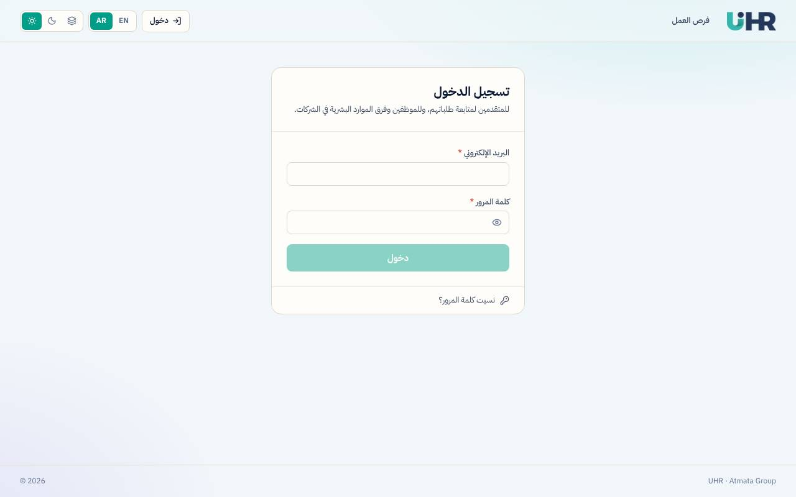
صفحة الدخول
شروط كلمة المرور
- ثمانية أحرف على الأقل.
- حرف واحد على الأقل (عربي أو لاتيني).
- رقم واحد على الأقل.
- عند التغيير: يجب أن تختلف كلمة المرور الجديدة عن الحالية، وأن تُكتب مرتين متطابقتين.
تظهر هذه الشروط تحت الحقل وتتحول إلى علامة صح كلما تحقق شرط منها.
كلمة المرور المؤقتة وتغييرها الإلزامي
حين تُنشئ الموارد البشرية حساباً جديداً لموظف، أو يعيد مدير النظام تعيين كلمة مرور مستخدم، يحصل صاحب الحساب على كلمة مرور مؤقتة تُعرض مرة واحدة لمن أنشأها وتُرسل إلى بريد صاحب الحساب.
- يدخل صاحب الحساب بالبريد وكلمة المرور المؤقتة.
- تظهر له مباشرة شاشة «تغيير كلمة المرور» ولا يستطيع فتح أي صفحة أخرى قبل إكمالها.
- يكتب كلمة المرور الحالية (المؤقتة) ثم الجديدة مرتين، ويحفظ.
- يدخل بعدها إلى واجهته المعتادة.
نسيت كلمة المرور؟
- اضغط «نسيت كلمة المرور؟» أسفل نافذة الدخول.
- أدخل بريدك المسجّل. تظهر الرسالة نفسها سواء كان البريد مسجلاً أم لا، حمايةً لخصوصية الحسابات.
- يصلك بريد فيه رابط «تعيين كلمة مرور جديدة». افتحه واكتب كلمة المرور الجديدة مرتين.
- بعد الحفظ تظهر رسالة «تم تعيين كلمة المرور»، ويمكنك الدخول فوراً. يفك هذا الإجراء أيضاً أي قفل مؤقت على الحساب.
صلاحية الرابطرابط إعادة التعيين يُستخدم مرة واحدة ولمدة محدودة (ساعة واحدة). إذا ظهرت رسالة «رابط إعادة التعيين غير صالح أو انتهت صلاحيته» فاطلب رابطاً جديداً.
القفل بعد المحاولات الخاطئة
لحماية الحساب من التخمين، إذا أُدخلت كلمة مرور خاطئة خمس مرات متتالية يُوقَف الدخول إلى الحساب مؤقتاً لمدة 5 دقائق (قيمة افتراضية تحددها الشركة). تظهر رسالة «تم إيقاف الدخول مؤقتاً بعد عدة محاولات خاطئة…» مع عدد الدقائق المتبقية.
- أثناء القفل يُرفض الدخول حتى بكلمة المرور الصحيحة؛ انتظر انتهاء المدة أو استخدم «نسيت كلمة المرور؟».
- يستطيع مدير النظام فك القفل فوراً من صفحة «المستخدمون والأدوار».
- تنبيه شائع: المتصفح قد يملأ كلمة مرور قديمة محفوظة تلقائياً فيتسبب في القفل؛ حدّث كلمة المرور المحفوظة في المتصفح بعد أي تغيير.
الحساب الموقوف
إذا ظهرت رسالة «هذا الحساب موقوف. راجع الموارد البشرية.» فهذا يعني أن الحساب أُوقف عمداً: إما لأن مدير النظام عطّله، أو لأن خدمة الموظف انتهت (أُغلق ملف خروجه)، أو لأن اشتراك الشركة نفسها معلّق. وإذا أُوقف الحساب أثناء استخدامه تنتهي الجلسة المفتوحة فوراً.
3.الواجهة العامة لنظام الشركة
يصل إليها: الموارد البشريةمدير النظامالمالية والإدارة العليامسؤول التوظيف
اللغة والمظهر
| العنصر | معناه | ملاحظات |
|---|
| AR / EN | تبديل لغة الواجهة بين العربية والإنكليزية. | العربية هي الافتراضية وتُعرض من اليمين إلى اليسار. الأرقام تُكتب بالأرقام اللاتينية (1، 2، 3) في اللغتين. اللغة المختارة تحدد أيضاً لغة رسائل النظام. |
| المظهر | ثلاثة أشكال للألوان: الداكن الرمادي (الافتراضي)، والداكن، والفاتح. | اختيار شخصي يُحفظ على جهازك ولا يؤثر على غيرك. المطبوعات تخرج دائماً بخلفية بيضاء. |
القائمة الجانبية
تضم القائمة الجانبية وحدات النظام مجمّعة في أقسام: «التوظيف والتعيين»، و«شؤون الموظفين»، و«الرؤى»، و«الإعدادات». لا يظهر فيها إلا ما تملك صلاحية عرضه، فقد تختلف القائمة من مستخدم لآخر. الرقم الصغير بجانب بعض العناصر هو عدد البنود التي تنتظر إجراءً (متقدمون جدد، طلبات بانتظار اعتمادك…). أسفل القائمة زر «بوابة فرص العمل» لفتح البوابة العامة، وبطاقة المستخدم وفيها «تسجيل الخروج».
إذا كان لصاحب الحساب الإداري ملف موظف (مثل مدير الموارد البشرية نفسه) فتظهر له أيضاً صفحاته الشخصية كأي موظف: «إجازاتي وطلباتي»، «حضوري»، «كشفي الشهري»، «وثائقي للتوقيع»، وغيرها.
لوحة المتابعة
أول ما يظهر بعد الدخول. تعرض كل قسم فيها بحسب صلاحياتك:
| البطاقة | معناها | ملاحظات |
|---|
| إجمالي الموظفين | عدد الموظفين الحاليين، وعدد الإدارات والمدن. | |
| حاضرون اليوم | من سجّل دخوله اليوم، ونسبة الحضور. | |
| متأخرون اليوم | من دخل بعد بداية الدوام ومهلة السماح. | مهلة السماح من سياسة الدوام. |
| بنود بانتظارك | عدد المهام التي تحتاج إجراءً منك. | تفاصيلها في «بانتظار موافقتك». |
| بانتظار موافقتك | قائمة المهام: قرارات تعيين، طلبات تعديل عرض العمل، طلبات توظيف جديدة، إجازات، خدمات، مخالفات، استقالات، مباشرة موظفين جدد… | الأحدث أولاً. المهمة التي مضى عليها أكثر من 24 ساعة تُعلَّم «متأخرة» لتلفت انتباهك. اضغط المهمة لفتحها مباشرة. |
| تنبيهات | تنبيهات عامة، مثل: متقدمون تجاوزوا المهلة المحددة لمرحلتهم، موظفون متأخرون اليوم، عهد بانتظار توقيع الاستلام. | |
| اتجاه الحضور الأسبوعي / توزيع القوى العاملة / مسار التوظيف / آخر حركات الحضور | رسوم مختصرة لنسبة الحضور في الأيام الأخيرة، وتوزيع الموظفين على الإدارات، وأعداد المتقدمين في كل مرحلة، وآخر عمليات تمرير البطاقة. | |
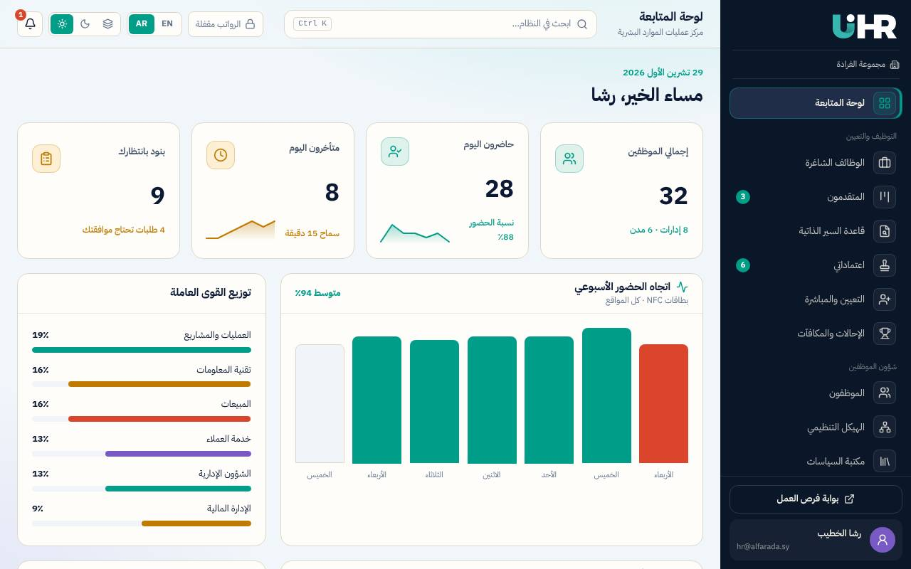
لوحة المتابعة لمدير الموارد البشرية
الجرس والإشعارات
الجرس أعلى الصفحة يعرض عدد الإشعارات غير المقروءة وآخر 12 إشعاراً. الإشعار رسالة قصيرة يرسلها النظام عند حدث يخصك، مثل: «طلب بانتظار اعتمادك»، «اعتُمدت إجازتك»، «كشفك جاهز»، «سياسة جديدة — يرجى الاطلاع».
- اضغط الإشعار لينقلك إلى الصفحة المتعلقة به.
- تُعلَّم الإشعارات مقروءة تلقائياً بعد فتح قائمة الجرس بثانية ونصف.
- إشعارات الموارد البشرية العامة لا تظهر إلا لمن يملك صلاحية الوحدة المعنية بها.
- في بوابة الموظف تظهر عند الدخول رسالة «لديك N إشعارات جديدة»، ويظهر نص أي إشعار جديد يصل أثناء العمل.
البحث السريع Ctrl + K
اضغط خانة «ابحث في النظام…» أعلى الصفحة أو اختصار Ctrl+K، واكتب جزءاً من: اسم موظف أو رقمه الوظيفي، أو اسم متقدم أو رقم طلبه، أو مسمى شاغر، أو اسم صفحة في النظام. تظهر النتائج فوراً، ويفتحها الضغط أو مفتاح الإدخال. لا تظهر إلا النتائج التي تملك صلاحية رؤيتها (فلا يظهر الموظفون لمن لا يملك صلاحية ملفاتهم مثلاً). صفحات الإعدادات التي لا تظهر في القائمة الجانبية يمكن الوصول إليها من هنا أيضاً.
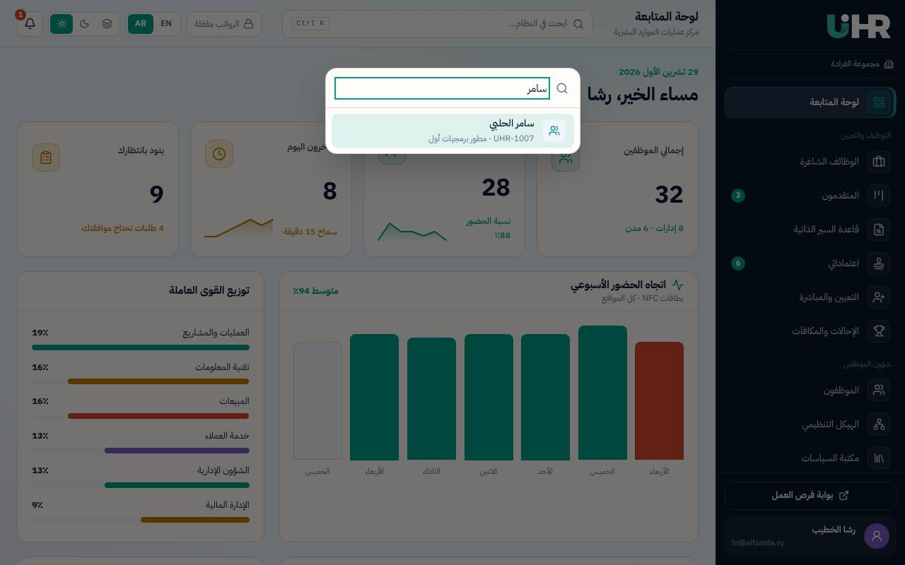
البحث السريع
التحديث اللحظي
لا حاجة لإعادة تحميل الصفحة: حين يغيّر زميلك شيئاً في الشركة (يعتمد طلباً، يعدّل بيانات، يسجّل موظف حضوره)، تتحدث الشاشة المفتوحة أمامك خلال ثوانٍ، ويرنّ الجرس فوراً عند وصول إشعار جديد. لا يُغيّر التحديث ما تكتبه في نموذج مفتوح إلا إذا تغيّرت بيانات النموذج نفسه. وإذا انقطع الاتصال اللحظي لأي سبب يستمر النظام بالتحديث الدوري كل دقيقة تقريباً.
الطباعة والنماذج الرسمية
كل نموذج رسمي في النظام (عرض العمل، قرار التعيين، شهادة الراتب، الإنذار، براءة الذمة، الهيكل التنظيمي…) يُعرض على شكل ورقة A4 جاهزة للطباعة، فيها:
- الرأس: شعار الشركة واسمها واسم إدارة الموارد البشرية، ثم عنوان النموذج في الوسط.
- التذييل الثابت: رمز النموذج المطبوع (مثل Uniqueness-HR.01-01-F-01) ورقم الإصدار (Issue) وتاريخ الإصدار، كما في نماذج الشركة الورقية.
اضغط «طباعة النموذج» أعلى الورقة لفتح نافذة الطباعة، ويمكن اختيار «حفظ بصيغة PDF» منها. حجم الشعار ومحاذاته وهوامش الورقة ورموز النماذج وإصداراتها تُضبط من صفحة «النماذج وقالب الطباعة».
النموذج الحساسبعض النماذج معلَّمة «حساسة» لاحتوائها بيانات مالية أو شخصية (مثل شهادة الراتب والكشف الشهري). طباعة النموذج الحساس تُسجَّل في سجل التدقيق باسم من طبعه ووقت الطباعة.
4.الأدوار والصلاحيات
ما يراه كل مستخدم وما يستطيع فعله يتحدد بـأدواره. يمكن أن يحمل المستخدم أكثر من دور، فتجتمع صلاحياتها كلها. يضبط مدير النظام الأدوار من «المستخدمون والأدوار»، وجدول الصلاحيات من صفحة «الصلاحيات».
الأدوار
| الدور | معناه | الصلاحيات الافتراضية باختصار |
|---|
| موظف | كل موظف في الشركة. | يرى بياناته فقط: حضوره، طلباته، كشفه، عهده، تقييمه، ويقدّم طلباته. يقرأ السياسات والإعلانات والهيكل التنظيمي. |
| مدير مباشر | من يدير فريقاً (يظهر مديراً مباشراً في ملفات موظفيه). | يرى بيانات فريقه، ويعتمد إجازاتهم وتبريراتهم وترشيحاتهم الداخلية، ويفتح مخالفة لأحدهم، ويقيّمهم، ويرشحهم لخطط التعاقب. |
| مدير الموارد البشرية | رأس إدارة الموارد البشرية. | صلاحيات واسعة على كل الموظفين: التوظيف، الملفات، الحضور، الإجازات، الكشف الشهري، العهد، المخالفات، الأداء، الإعلانات، إعدادات الشركة، وعرض سجل التدقيق. |
| موظف موارد بشرية | فريق الموارد البشرية. | قريبة من مدير الموارد البشرية دون إعدادات الشركة وسجل التدقيق. |
| مسؤول توظيف | متخصص بالتوظيف فقط. | الشواغر والمتقدمون وقاعدة السير والإحالات، دون أي وصول لبيانات الموظفين. |
| الإدارة المالية | المحاسبة والرواتب. | الكشف الشهري والسلف وشهادات الراتب، وعرض الحضور والموظفين والعهد. |
| المدير التنفيذي | الإدارة العليا. | عرض فقط في معظم الوحدات، وطباعة الهيكل التنظيمي. |
| الرئيس التنفيذي | رأس الشركة، ويظهر في مسارات الاعتماد باسم «المدير العام». | عرض في معظم الوحدات، ويعتمد ما يصل إليه في المسارات: الاستقالات وإنهاء الخدمة والجزاءات الكبيرة وإذن الاطلاع على الرواتب. |
| مدير النظام | مسؤول إعداد النظام في الشركة. | الإعدادات، والمستخدمون والصلاحيات، وسجل التدقيق كاملاً مع الأرشيف والتصدير، والإعلانات والسياسات. |
هذه هي القيم الافتراضية، وتستطيع كل شركة تعديلها من صفحة «الصلاحيات». ويوجد أيضاً دور «متقدم» لحسابات المتقدمين، ودور «مدير المنصة» للجهة المشغّلة للنظام.
الإجراءات السبعة
لكل دور في كل وحدة مجموعة من الإجراءات، ويرمز لكل منها بحرف في جدول الصلاحيات:
| الإجراء | معناه | مثال |
|---|
| عرض (ع) | رؤية الوحدة وبياناتها. | فتح صفحة الحضور. |
| إضافة (ض) | إنشاء سجل جديد. | إضافة موظف، فتح شاغر، رفع سياسة. |
| تعديل (ت) | تغيير سجل موجود. | تعديل ملف موظف، تصحيح حضور. |
| اعتماد (ق) | اتخاذ القرار. | رفض متقدم، إقرار جزاء، اعتماد الكشف الشهري. |
| تصدير (ص) | تنزيل البيانات ملف Excel. | تصدير قائمة الموظفين. |
| طباعة (ط) | طباعة النماذج. | طباعة الهيكل التنظيمي. |
| أرشفة (ح) | نقل السجل إلى الأرشيف (لا حذف نهائي). | أرشفة سياسة قديمة. |
النطاق: خاصته / فريقه / الكل
إلى جانب الإجراءات، يحدد النطاق على من تنطبق الصلاحية:
- خاصته: بياناته الشخصية فقط. مثال: الموظف يرى حضوره هو فقط.
- فريقه: من يرأسهم مباشرة. مثال: مدير المبيعات يرى حضور فريقه ويعتمد إجازاتهم، ولا يرى إدارة المالية.
- الكل: كل موظفي الشركة. مثال: موظف الموارد البشرية يرى حضور الجميع.
مثال عمليإذا كان لأحد المستخدمين في وحدة «طلبات الإجازة» الإجراءات «عرض + اعتماد» بنطاق «فريقه»، فإنه يرى إجازات فريقه فقط ويعتمدها، ولا يستطيع رؤية إجازة موظف من إدارة أخرى أو اعتمادها.
الواجهة تُخفي والخادم يتحققإخفاء الأزرار والصفحات في الواجهة لتسهيل الاستخدام فقط؛ فالنظام يتحقق من الصلاحية عند كل عملية، فلا يمكن تجاوزها بفتح رابط مباشرة.
5.حماية الرواتب (التحقق بخطوتين)
يصل إليها: كل من يرى مبالغ الرواتب: الموظف (راتبه) والموارد البشرية والمالية (رواتب الآخرين)
كل مبلغ مالي يخص الرواتب (الراتب في ملف الموظف، الكشف الشهري، قسيمة الراتب، حدود السلفة، مبلغ شهادة الراتب، التسوية النهائية عند الخروج، تحليلات الرواتب) يظهر «محمي» ومخفياً حتى يثبت المستخدم أنه صاحب الحساب فعلاً بخطوة تحقق ثانية بعد كلمة المرور. الهدف: إذا عرف شخص آخر كلمة مرورك، أو تركت جهازك مفتوحاً، لا يستطيع رؤية الرواتب.
زر القفل أعلى الصفحة يبيّن الحالة: «الرواتب مقفلة» أو «الرواتب مفتوحة» مع عداد الوقت المتبقي. اضغطه (أو اضغط أي قيمة «محمي») لفتح نافذة «تحقق من هويتك».
طرق التحقق
| الطريقة | كيف تعمل | ملاحظات |
|---|
| الموافقة من جوالك الأسهل | يظهر على الحاسوب رمز QR. امسحه بكاميرا جوالك وأنت مسجّل الدخول بالحساب نفسه على الجوال، ثم اضغط «موافق»؛ فتُفتح الرواتب على الحاسوب تلقائياً دون إدخال أي رمز. | الطلب صالح لدقيقتين (قيمة افتراضية)، ولمرة واحدة. يجب أن تكون الموافقة من جهاز آخر وبالحساب نفسه. إذا ضغطت «رفض» لا تُفتح الرواتب؛ وإن لم تكن أنت من طلب فغيّر كلمة مرورك. |
| البصمة / Windows Hello | تسجّل بصمة هذا الجهاز مرة واحدة («تسجيل البصمة لهذا الجهاز»)، وبعدها يكفي «تحقق الآن» ثم لمسة بالبصمة أو الوجه أو رمز PIN الجهاز. | تحتاج فتح النظام من رابط آمن (https). كل جهاز يُسجَّل وحده، ويمكن إزالة بصمة مسجّلة. |
| رمز على بريدك | يُرسل رمز من 6 أرقام إلى بريدك المسجّل، فتكتبه في النافذة. | الرمز صالح لدقيقتين ولمرة واحدة، ولا يُرسل رمز جديد قبل مرور 30 ثانية. إن لم يصل فتحقق من مجلد الرسائل غير المرغوب فيها. |
| تطبيق المصادقة | تثبّت تطبيق Google Authenticator أو Microsoft Authenticator (مجاني)، وتمسح رمز QR من داخل التطبيق (زر + ← «مسح رمز QR») وليس بكاميرا الجوال. بعدها يعرض التطبيق رقماً من 6 خانات يتجدد كل 30 ثانية تكتبه عند كل تحقق. | الأعلى أماناً، ويعمل دون إنترنت على الجوال. كل رمز يُقبل مرة واحدة. إذا تعذّر المسح يمكن إدخال المفتاح يدوياً في التطبيق. |
| رمز طوارئ | عند ربط تطبيق المصادقة يعرض النظام 8 رموز طوارئ (بصيغة XXXX-XXXX). احفظها في مكان آمن، واستخدم أحدها إذا لم يكن جوالك معك. | كل رمز يُستخدم مرة واحدة فقط. |
يتذكر النظام آخر طريقة نجحت معك، فيفتح النافذة عليها مباشرة في المرة التالية (مثلاً يطلب البصمة فوراً). للانتقال إلى طريقة أخرى اضغط «طرق تحقق أخرى». الطرق المتاحة تحددها الشركة من صفحة «حماية الرواتب».
نافذة الفتح: مدتها ولماذا تُغلق
- بعد التحقق تبقى الرواتب مفتوحة طالما تستخدمها: كل مرة تفتح صفحة فيها رواتب يتجدد الوقت إلى 5 دقائق من جديد.
- إذا مرت 5 دقائق دون استخدام بيانات الرواتب تُقفل تلقائياً.
- مهما استمر الاستخدام، تُقفل بعد 60 دقيقة كحد أقصى من لحظة التحقق، ويلزم تحقق جديد.
- اضغط زر القفل في أي وقت لإقفالها فوراً («اضغط للقفل الآن») — يُنصح بذلك قبل مغادرة الجهاز.
- بعد 5 محاولات خاطئة يتوقف التحقق مؤقتاً لمدة دقيقة. كل محاولة ناجحة أو فاشلة تُسجَّل.
كل هذه القيم افتراضية وتضبطها الشركة من «حماية الرواتب».
رواتب الآخرين: إذن الاطلاع من المدير العام
التحقق وحده يكفي لرؤية راتبك أنت. أما رواتب الموظفين الآخرين (الكشف الشهري، ملفات الموظفين، التحليلات…) فتحتاج فوق التحقق إذن اطلاع ساري المفعول يعتمده المدير العام.
- بعد التحقق، إذا لم يكن لديك إذن، تظهر خطوة «طلب إذن اطلاع على الرواتب».
- اختر النطاق: «كل الشركة» أو «إدارة واحدة» (فلا ترى إلا رواتب تلك الإدارة).
- اكتب سبب الطلب (10 أحرف على الأقل)، مثل: «مراجعة كشف الشهر قبل الإغلاق»، واضغط «إرسال الطلب».
- يصل الطلب إلى المدير العام في «اعتماداتي». تظهر لك حالة «طلبك بانتظار موافقة المدير العام»، ويمكنك «إلغاء الطلب» قبل القرار.
- عند الموافقة يصلك إشعار، وتظهر المبالغ مباشرة.
- الإذن صالح لـ8 ساعات (قيمة افتراضية) من لحظة الموافقة، ثم ينتهي وتظهر رسالة «انتهى إذنك السابق — اطلب إذناً جديداً».
- يستطيع المدير العام (ومن يملك تعديل الإعدادات) سحب أي إذن قبل انتهائه من صفحة «حماية الرواتب»، فيصل إشعار لصاحبه وتظهر له «سُحب إذنك السابق».
- المدير العام نفسه معفى من الإذن (يكفيه التحقق)، ويمكن للشركة تغيير الأدوار المعفاة أو إلغاء شرط الإذن.
- كل منح وسحب للإذن يُسجَّل في سجل التدقيق.
«غيّرت جوالك؟»
إذا غيّرت جوالك أو فقدته ولم تعد تملك تطبيق المصادقة، اضغط «غيّرت جوالك؟» في نافذة التحقق، واكتب كلمة مرور حسابك. يلغي النظام ربط تطبيق المصادقة وكل البصمات المسجّلة، فتعيد الإعداد على الجوال الجديد بمسح رمز QR جديد. إذا نسيت كلمة المرور أيضاً، فمدير النظام يستطيع إلغاء ربط التحقق لك من «المستخدمون والأدوار».
6.بوابة فرص العمل العامة
يصل إليها: أي زائر
الصفحة الرئيسية للنظام. تعرض نصاً ترحيبياً (تضبطه المنصة)، والشركات التي توظّف الآن، وأحدث الوظائف الشاغرة المنشورة.
صفحة الوظائف الشاغرة /jobs
| الفلتر | معناه | ملاحظات |
|---|
| البحث | كلمة في المسمى أو الوصف أو اسم الشركة. | |
| الشركة | عرض شواغر شركة واحدة. | «كل الشركات» افتراضياً. |
| المدينة | مكان العمل. | |
| نوع الدوام | دوام كامل، جزئي، وغيرهما بحسب الشاغر. | |
| الخبرة | بدون خبرة، حتى سنتين، حتى 5 سنوات، أي خبرة. | |
«مسح الفلاتر» يعيد عرض كل الوظائف. الوظيفة الموسومة «مطلوب بشدة» هي وظيفة يصعب شغلها حددتها الشركة، والموسومة «تتطلب صورة شخصية» تطلب صورة عند التقديم.
صفحة الشركة /c/اسم-الشركة
تعرض شعار الشركة ونبذة «عن الشركة» وكل وظائفها المفتوحة. يمكن نسخ رابطها ومشاركته؛ وتُنشر الوظائف الجديدة فيها فور اعتمادها.
صفحة الوظيفة
تعرض المسمى والإدارة والمدينة ونوع الدوام والخبرة والمؤهل والوصف و«المتطلبات»، مع زر «قدّم على الوظيفة» وزر «نسخ الرابط».
رابط الإحالة
يستطيع الموظف في الشركة مشاركة رابط وظيفة خاص به (من «المكافآت» في بوابته). الرابط يحمل رمز إحالة مثل UHR1007-J1. إذا فتح المتقدم الرابط وقدّم من خلاله يُسجَّل الموظف «مُحيلاً» ويكسب نقاطاً كلما تقدم المتقدم في مراحل التوظيف. إذا كان الرابط غير صالح أو منتهياً تظهر رسالة توضح ذلك، ويمكن التقديم بدونه. المتقدم الذي له طلب سابق لدى الشركة لا يُنشئ إحالة جديدة.
ظهور الوظائفلا تظهر في البوابة إلا الوظائف المفتوحة المنشورة للعموم، ولا تظهر الوظائف الداخلية أو التي تنتظر مراجعة المنصة، وتختفي الوظيفة تلقائياً بعد تاريخ إغلاقها.
7.بوابة المتقدم
يصل إليها: المتقدمون على الوظائف
التقديم خطوة بخطوة (نموذج طلب التوظيف F-28)
بعد الضغط على «قدّم على الوظيفة» يظهر «نموذج طلب التوظيف» في أربع خطوات قصيرة. يمكن التنقل بين الخطوات بزري «السابق» و«التالي»، ولا يُنتقل للخطوة التالية قبل إكمال الحقول المطلوبة.
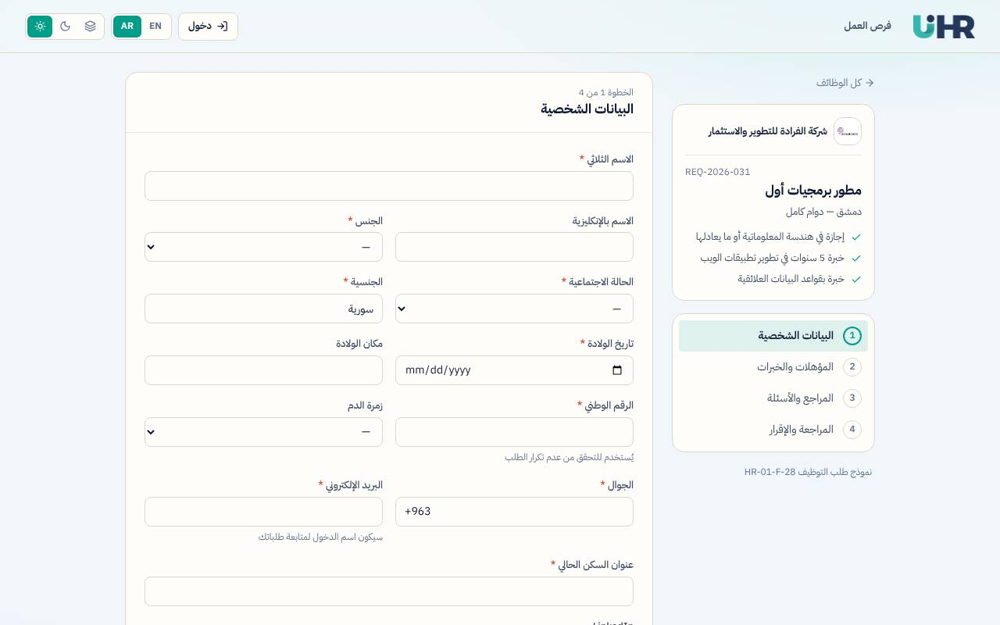
نموذج طلب التوظيف — الخطوة الأولى
| الخطوة | الحقول | ملاحظات |
|---|
| 1. البيانات الشخصية | الاسم الثلاثي، الاسم بالإنكليزية، الجنس، الحالة الاجتماعية، الجنسية، تاريخ ومكان الولادة، الرقم الوطني، زمرة الدم، الجوال، البريد الإلكتروني، عنوان السكن الحالي. | الرقم الوطني يُستخدم للتحقق من عدم تكرار الطلب. البريد سيكون اسم الدخول لمتابعة الطلبات. |
| 2. المؤهلات والخبرات | أعلى مؤهل علمي، الجامعة أو المعهد، الاختصاص، سنة التخرج، التقدير، مستوى اللغة الإنكليزية (ممتاز/جيد/مقبول/ضعيف)، مجموع سنوات الخبرة، الخبرات السابقة (الأحدث أولاً: الشركة، المسمى، من سنة، إلى سنة، سبب ترك العمل) — زر «إضافة خبرة» لكل خبرة. | هذه البيانات تدخل في حساب نسبة المطابقة. |
| 3. المراجع والأسئلة | مرجع مهني من غير الأقارب (الاسم، العمل، الهاتف)؛ أسئلة الأهلية (هل تمانع العمل بنظام الورديات؟ هل تمانع السفر؟ هل تعمل حالياً في القطاع العام؟ هل صدر بحقك حكم قضائي؟)؛ الراتب الشهري المتوقع بالدولار؛ تاريخ الجاهزية للمباشرة؛ كيف عرفت بالوظيفة (موقع الشركة، ترشيح من موظف، المعرض…) ورمز الإحالة إن وُجد؛ السيرة الذاتية والشهادات؛ الصورة الشخصية. | السيرة الذاتية حتى 10MB. الصورة حتى 2MB، وتُطلب فقط إذا كانت الوظيفة «تتطلب صورة شخصية». يمكن سحب الملف إلى المربع أو الضغط لاختياره. |
| 4. المراجعة والإقرار | ملخص البيانات للتأكد منها، وكلمة مرور الحساب، والإقرارات. | انظر الإقرارات أدناه. |
الإقرارات والموافقات
- إقرار صحة المعلومات (إلزامي): «أقر بأن جميع المعلومات الواردة صحيحة، وأن أي معلومة غير صحيحة أو ناقصة تكون سبباً لإنهاء التعيين في حال تمّ».
- الفحص الطبي والأنظمة (إلزامي): الموافقة على سياسة الفحص الطبي وأنظمة الشركة الداخلية.
- معالجة البيانات (إلزامي): الموافقة على معالجة الشركة لبياناتك لغرض التوظيف فقط، دون مشاركتها مع أي جهة أخرى.
- الاحتفاظ بالسيرة (اختياري): «احتفظوا بسيرتي لفرص قادمة تناسبني». إذا اخترته تبقى سيرتك في قاعدة السير لدى الشركة لفرص قادمة (لمدة سنتين افتراضياً ثم تُؤرشف).
الحساب وكلمة المرور عند التقديم
- أول طلب لك: تنشئ كلمة مرور في الخطوة الأخيرة («أنشئ كلمة مرور لمتابعة طلباتك»)، فيُنشأ لك حساب متقدم ببريدك.
- لديك حساب سابق بالبريد نفسه: يطلب النظام «كلمة مرور حسابك الحالي» ليضم الطلب إلى حسابك، أو سجّل الدخول أولاً ثم قدّم.
- بريد عمل: إذا كان البريد لموظف في الشركة نفسها يُطلب منه التقديم داخلياً من بوابة الموظف؛ وإذا كان بريد عمل على المنصة يُطلب استخدام البريد الشخصي.
- طلب قيد المعالجة: إذا كان لديك طلب لدى الشركة نفسها في مرحلة متقدمة (عرض العمل أو قرار التعيين أو التعيين) لا يُقبل طلب جديد يغيّره؛ سجّل الدخول لمتابعته.
بعد الإرسال يصلك بريد تأكيد برقم الطلب (مثل UNQ-2026-APP-48506)، وتنتقل إلى صفحة متابعة الطلب.
نسبة المطابقة ونطاقاتها
نسبة المطابقة رقم من 100 يحسبه النظام فور التقديم، ويقيس قرب بياناتك من متطلبات الوظيفة: سنوات الخبرة، المؤهل العلمي، الراتب المتوقع مقارنة بنطاق راتب الوظيفة، مستوى اللغة الإنكليزية، واكتمال الملف (السيرة الذاتية، المؤهل، الخبرات، المرجع، الرابط المهني). أوزان هذه العناصر تضبطها كل شركة.
| النطاق (افتراضياً) | ما يعنيه | ما يحدث لطلبك |
|---|
| 50 فما فوق | مطابقة جيدة. | ينتقل طلبك تلقائياً إلى «الفرز الأولي» لدى الموارد البشرية، وقد يصلك الاختبار الأولي إذا فعّلته الشركة. |
| 41 – 49 | مطابقة متوسطة. | يبقى طلبك قيد المراجعة اليدوية من الموارد البشرية لتقرر. |
| 40 فما دون | مطابقة ضعيفة. | يُغلق الطلب تلقائياً ويصلك بريد اعتذار لطيف، ويبقى ملفك للفرص القادمة إذا وافقت على الاحتفاظ بسيرتك. |
الحدود (50 و41 و40) والرفض التلقائي قيم افتراضية تغيّرها الشركة من «قواعد التوظيف والمطابقة».
متابعة الطلب ومراحله
صفحة «طلباتي» تعرض كل طلبات التوظيف التي قدّمتها لدى كل الشركات بحساب واحد، مع شارة الحالة (مثل «عرض عمل بانتظار ردّك»). اضغط الطلب لفتح تفاصيله: المراحل، وملخص الطلب (تاريخ التقديم، المرحلة الحالية، البريد، الجوال، الراتب المتوقع، السيرة الذاتية، حالة قاعدة السير).
استلام الطلب←
الفرز الأولي←
المقابلة←
التقييم الفني←
عرض العمل←
قرار التعيين←
التعيين
- عند الانتقال إلى المقابلة يصلك بريد دعوة.
- إذا أُغلق الطلب تظهر رسالة «انتهت مراجعة الطلب» مع شكر على الاهتمام.
- عند صدور قرار التعيين تظهر «مبارك، صدر قرار تعيينك» وزر «الدخول كموظف»: يصبح حسابك نفسه (البريد وكلمة المرور ذاتهما) حساب موظف، وتكمل إجراءات المباشرة من بوابة الموظف.
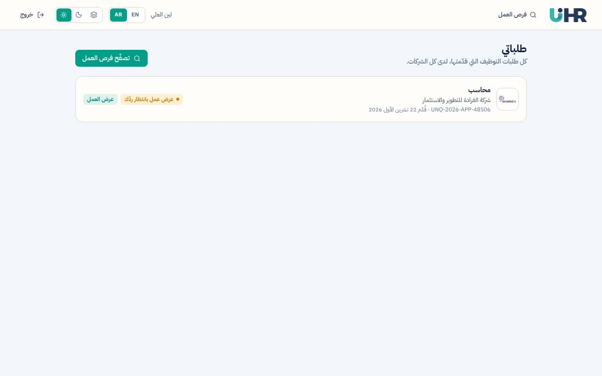
صفحة «طلباتي» لدى المتقدم
الاختبار الأولي
قد تطلب الشركة اختباراً أولياً قصيراً لبعض الوظائف، يكتب أسئلته فريق الموارد البشرية. يصلك رابط الاختبار بالبريد، ويظهر في صفحة طلبك بطاقة «اختبار أولي بانتظارك» مع زر «بدء الاختبار».
- صلاحية الرابط: يظهر «الرابط صالح حتى…»؛ بعد هذا التاريخ لا يمكن البدء (3 أيام افتراضياً).
- المؤقت: يبدأ الوقت عند الضغط على «بدء الاختبار» (30 دقيقة افتراضياً)، ويُحسب على الخادم فلا يتوقف بإغلاق الصفحة. إجاباتك تُحفظ على جهازك أثناء الحل، فإذا أُغلقت الصفحة وعدت قبل انتهاء الوقت تجدها كما هي.
- الإرسال: اضغط «إرسال الإجابات». إن تركت أسئلة بلا إجابة ينبّهك النظام قبل الإرسال. عند انتهاء الوقت تُرسل الإجابات تلقائياً.
- المحاولات: محاولة واحدة افتراضياً. إذا انتهت المدة دون إرسال يُسجَّل الاختبار «غير مكتمل»، وقد تمنحك الموارد البشرية محاولة أخرى ضمن العدد المسموح.
- التصحيح: أسئلة الاختيار من متعدد تُصحَّح آلياً، والأسئلة المفتوحة يصححها فريق الموارد البشرية. النتيجة تظهر بجانب نسبة المطابقة ولا يُرفض أحد آلياً بسببها.
أجب بنفسكتظهر في بداية الاختبار عبارة «أجب بنفسك ومن معرفتك»، والإجابات تُراجع مع بقية الطلب.
عرض العمل F-29 والرد والتوقيع
عند وصول طلبك إلى مرحلة عرض العمل يظهر في صفحة الطلب «عرض العمل الرسمي» بصيغة النموذج المطبوع (المسمى، الإدارة، الراتب والبدلات، تاريخ المباشرة، فترة التجربة، الشروط). تحت العرض قسم «ردّك على العرض» بثلاثة خيارات:
| الخيار | ما يحدث | المطلوب منك |
|---|
| قبول | يُسجَّل قبولك، ويُفتح قرار التعيين F-31 ليعتمده المسؤولون مستوىً تلو الآخر. | توقيعك الإلكتروني بالرسم في مربع التوقيع، ثم «قبول العرض وتوقيعه». |
| طلب تعديل | يصل طلبك للموارد البشرية، وتظهر «طلب التعديل قيد الدراسة» حتى يصدر عرض معدّل. | كتابة البنود التي تطلب تعديلها. |
| اعتذار | يُسجَّل اعتذارك ويُغلق العرض. | سبب الاعتذار (اختياري)، ثم «تأكيد الاعتذار». |
بعد القبول يظهر «قرار التعيين المالي والإداري — قيد الاعتماد»، وتصلك رسالة عند اكتماله. التوقيع يُحفظ مع العرض ولا يُتاح برابط عام.
التقديم على أكثر من شركة
حساب المتقدم واحد على مستوى المنصة. يمكنك التقديم على وظائف عدة شركات بالحساب نفسه، وكل طلب يُدار مستقلاً لدى شركته، وتجد طلباتك كلها في «طلباتي».
حذف بياناتي
يحق لك طلب حذف بياناتك من أي طلب. في صفحة الطلب اضغط «حذف بياناتي من هذا الطلب»، واكتب «كلمة مرور حسابك للتأكيد»، ثم «تأكيد الحذف النهائي».
- تُحذف سيرتك وصورتك وبياناتك الشخصية نهائياً، ويُغلق الطلب.
- يبقى لدى الشركة أثر مجهّل فقط: رقم الطلب والوظيفة والتواريخ، دون أي بيان يدل عليك.
متى يُرفض الحذفلا يمكن حذف البيانات إذا وصل الطلب إلى قرار التعيين أو تمّ التعيين، لأن البيانات أصبحت جزءاً من ملف الموظف الرسمي.
8.الوظائف الشاغرة
يصل إليها: الموارد البشريةمسؤول التوظيف — المسار /hr/jobs
الشاغر هو إعلان عن وظيفة تريد الشركة شغلها. منه تبدأ رحلة التوظيف كلها: يقدّم المتقدمون عليه، ويحسب النظام مطابقة كل متقدم مع متطلباته، وتظهر الطلبات في لوحة «المتقدمون» مرتبة حسب المراحل.
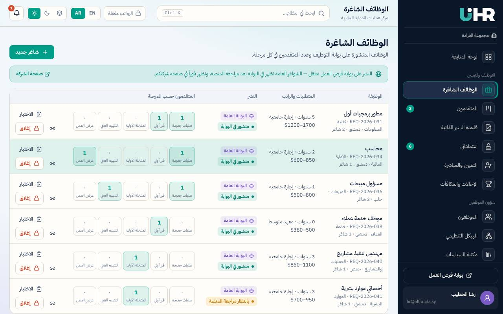
قائمة الوظائف الشاغرة مع عدد المتقدمين في كل مرحلة
ما تعرضه القائمة
| العنصر | معناه | ملاحظات |
|---|
| الوظيفة | المسمى الوظيفي ورمز الشاغر (مثل REQ-2026-034) والإدارة والمدينة. | الرمز يُمنح تلقائياً عند الحفظ، وبادئته من إعدادات الشركة. |
| النشر | مكان ظهور الشاغر: داخلي، أو صفحة الشركة، أو البوابة العامة، مع حالة مراجعة المنصة إن وُجدت. | «بانتظار مراجعة المنصة» أو «لم يُنشر — اقرأ السبب» تظهر للشواغر العامة فقط. |
| المتقدمون حسب المرحلة | أعداد الطلبات في كل مرحلة من مراحل التوظيف. | الضغط عليها يفتح لوحة المتقدمين مصفّاة على هذا الشاغر. |
| الأزرار | «نسخ الرابط» لمشاركة صفحة الوظيفة، «الاختبار» لإعداد الاختبار الأولي، و«إغلاق الشاغر» أو «إعادة فتح الشاغر». | الإغلاق يوقف التقديم ويخفي الشاغر، والطلبات الحالية تبقى كما هي. |
النشر على البوابة العامةيظهر أعلى الصفحة سطر يوضح وضع شركتك: النشر على بوابة فرص العمل مفعّل ومباشر، أو مفعّل مع مراجعة المنصة، أو غير مفعّل. هذا الخيار يحدده مدير المنصة لكل شركة، وليس من إعدادات الشركة نفسها.
نموذج الشاغر — كل حقل ومعناه
يُفتح النموذج بزر «شاغر جديد» أو بالضغط على شاغر موجود. الحقول المعلَّمة بنجمة إلزامية، وكل نص يُكتب بالعربية والإنكليزية لأن البوابة تعرض الإعلان باللغتين.
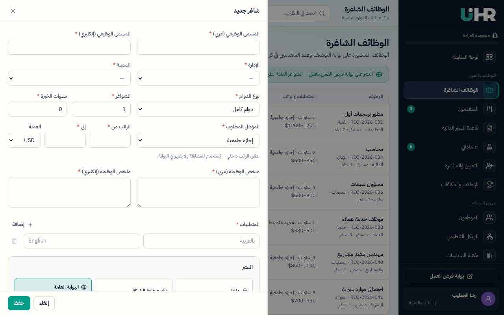
نموذج الشاغر
| العنصر | معناه | ملاحظات |
|---|
| المسمى الوظيفي (عربي / إنكليزي) | اسم الوظيفة كما يراه المتقدم. | حتى 150 حرفاً لكل لغة. |
| الإدارة | الإدارة التي ستعمل فيها الوظيفة. | تحدد مدير الإدارة الذي يصله إشعار بكل سيرة جديدة، والإدارة التي يُضاف إليها الموظف عند التعيين. |
| المدينة | مقر العمل. | يُستخدم في فلاتر البوابة العامة، ويصبح مقر الموظف عند تعيينه. |
| نوع الدوام | دوام كامل، دوام جزئي، ورديات، عقد مؤقت، أو عن بُعد. | يظهر للمتقدم ويُستخدم في فلاتر البوابة. |
| الشواغر | عدد الأشخاص المطلوبين لهذه الوظيفة. | من 1 إلى 500. |
| سنوات الخبرة | الحد الأدنى من سنوات الخبرة المطلوبة. | من 0 إلى 40، ويدخل في حساب المطابقة. |
| المؤهل المطلوب | أدنى مؤهل علمي: ثانوية، معهد متوسط، إجازة جامعية، ماجستير، دكتوراه. | يدخل في حساب المطابقة. |
| الراتب من / إلى / العملة | نطاق الراتب الذي ترصده الشركة للوظيفة، بالدولار أو الليرة السورية. | داخلي فقط: يُستخدم للمطابقة ولا يظهر في البوابة. الحد الأعلى لا يكون أقل من الأدنى. |
| ملخص الوظيفة (عربي / إنكليزي) | وصف مختصر للدور ومسؤولياته. | حتى 2000 حرف. |
| المتطلبات | قائمة بنود يُكتب كل منها باللغتين. | بند واحد على الأقل، وحتى 12 بنداً. |
| النشر | أين يظهر الشاغر (التفصيل في الجدول التالي). | «البوابة العامة» معطّل إن لم يُفعَّل النشر لشركتك. |
| آخر موعد للتقديم | تاريخ اختياري يُغلق الشاغر بعده تلقائياً. | لا يكون في الماضي. يمر النظام كل ليلة على الشواغر ويغلق ما انتهى موعده. |
| الحالة | مسودة، أو مفتوح للتقديم، أو مغلق. | المسودة لا تظهر لأحد خارج الموارد البشرية. |
| وظيفة حرجة / نادرة | تعليم الوظيفة بأنها صعبة الإشغال. | تظهر في البوابة بشارة «مطلوب بشدة»، وتُضاعف نقاط الإحالة عليها (×2 افتراضياً). |
| تتطلب صورة شخصية مع الطلب | يُطلب من المتقدم إرفاق صورة. | بدون هذا الخيار لا يُطلب من المتقدم أي صورة. |
| أوزان مطابقة خاصة بهذا الشاغر | نصيب كل معيار من المطابقة لهذا الشاغر وحده: الخبرة، المؤهل، الراتب، الإنكليزية، اكتمال الملف. | اختياري، ومجموع الأوزان يجب أن يكون 100. بدونه تُطبَّق أوزان الشركة. تغييره يعيد حساب مطابقة الطلبات المفتوحة على الشاغر. |
خيارات الظهور
| الخيار | معناه | من يراه |
|---|
| داخلي | للاستقطاب الداخلي فقط. | موظفو الشركة، ويتقدمون عليه بطلب ترشيح داخلي F-27. |
| صفحة الشركة | يظهر في صفحة شركتك على البوابة، ولمن يملك رابطه المباشر. | كل من يزور صفحة الشركة. |
| البوابة العامة | صفحة الشركة، ويظهر أيضاً في قائمة فرص العمل العامة على البوابة. | الجميع. إن كانت شركتك خاضعة لمراجعة المنصة فلا يظهر في القائمة العامة إلا بعد الموافقة. |
حالات الشاغر ومراجعة المنصة
مسودة←مفتوح للتقديم←مغلقيدوياً أو بانتهاء الموعد
بانتظار مراجعة المنصة←منشور في البوابةأولم يُنشرمع سبب الرفض
قواعد يفرضها النظام
- الشاغر العام لشركة خاضعة للمراجعة يظهر فوراً في صفحة الشركة، ولا يدخل قائمة البوابة العامة حتى يوافق عليه مدير المنصة.
- إذا رُفض الشاغر يظهر السبب في أعلى النموذج. عدّل الإعلان واحفظه فيُعاد إرساله للمراجعة تلقائياً.
- أي تعديل على محتوى شاغر منشور يعيده إلى المراجعة من جديد.
9.نسبة المطابقة ونطاقاتها
يراها: الموارد البشريةمسؤول التوظيف — والضبط من /hr/settings/recruitment
نسبة المطابقة رقم من 0 إلى 100 يقيس مدى توافق المتقدم مع متطلبات الشاغر. يحسبه النظام لحظة استلام الطلب، ويُعاد حسابه عند تعديل متطلبات الشاغر أو أوزانه أو قواعد الشركة، دون أن يُنقل أحد بين المراحل.
كيف تُحسب
لكل معيار درجة داخلية من 100% حسب حالة المتقدم، تُضرب في وزن المعيار، ثم تُجمع. الأوزان الافتراضية:
| المعيار | الوزن الافتراضي | درجة المتقدم داخل المعيار (افتراضياً) |
|---|
| سنوات الخبرة | 30 | يستوفي الحد الأدنى بالضبط = 70%، وترتفع خطياً حتى 100% بعد 3 سنوات إضافية. دون الحد: بالتناسب مع سنواته حتى 60% كحد أعلى. |
| المؤهل العلمي | 25 | أعلى من المطلوب 100%، مساوٍ له 85%، أدنى بدرجة واحدة 40%، أدنى من ذلك 10%. |
| الراتب المتوقع | 20 | حتى منتصف نطاق الشاغر 100%، حتى أعلى النطاق 75%. فوق النطاق يبدأ من 50% ويُخصم نقطتان لكل 1% زيادة. |
| اللغة الإنكليزية | 15 | ممتاز 100%، جيد 70%، مقبول 40%، ضعيف 10%. |
| اكتمال الملف | 10 | عدد البنود المتوفرة مقسوماً على البنود المختارة: السيرة الذاتية، المؤهل العلمي، خبرة سابقة، مرجع مهني، رابط LinkedIn. |
يعرض تبويب «المطابقة» في ملف المتقدم كل معيار ووزنه ودرجته، فيرى مسؤول التوظيف سبب النسبة بالتفصيل.
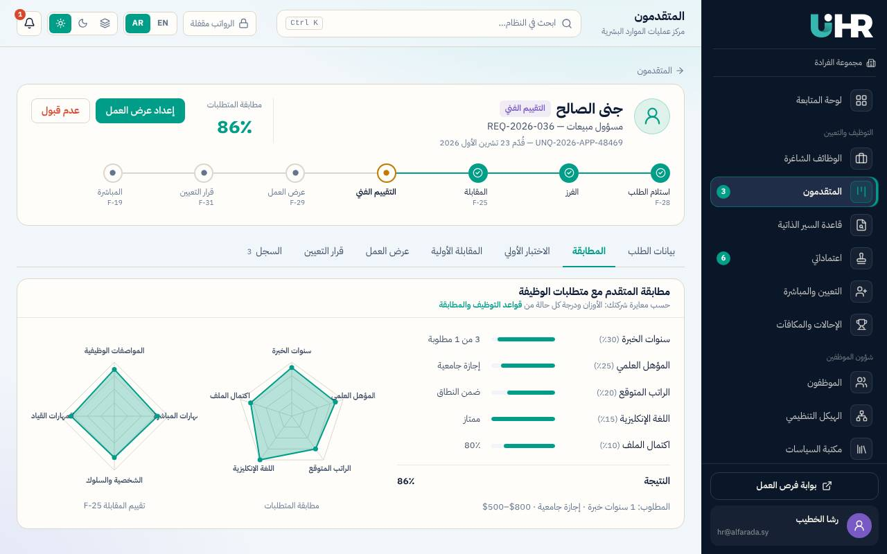
تبويب «المطابقة» في ملف متقدم
النطاقات وما يحدث تلقائياً
| النطاق | المعنى | ما يفعله النظام |
|---|
| 50 فما فوق | مطابقة طبيعية (حد الفرز التلقائي). | ينقل الطلب تلقائياً من «طلبات جديدة» إلى «فرز أولي» إن كان «فرز تلقائي للطلبات الجديدة» مفعّلاً. |
| من 41 إلى 49 | مطابقة منخفضة — للمراجعة. | يبقى الطلب في «طلبات جديدة» بشارة «مطابقة منخفضة»، ويقرر مسؤول التوظيف. |
| 40 فما دون | دون الحد الأدنى (حد الرفض التلقائي). | إن كان «رفض تلقائي دون الحد الأدنى» مفعّلاً يُغلق الطلب ويصل المتقدم إشعار مهذب. إن كان معطلاً يذهب الطلب للمراجعة. |
كل الأرقام قابلة للتغييرالأوزان، ودرجات كل حالة، وحدود النطاقات تحددها شركتك من صفحة «قواعد التوظيف والمطابقة». زر «معاينة» يعرض أثر التغيير على آخر الطلبات المفتوحة قبل الحفظ، والحفظ مسجّل في سجل التدقيق.
10.لوحة المتقدمين
يصل إليها: الموارد البشريةمسؤول التوظيفالمدير (فريقه، عرض فقط) — المسار /hr/candidates
تعرض اللوحة كل الطلبات في سبعة أعمدة تمثل مراحل التوظيف. يُنقل المتقدم بسحب بطاقته وإفلاتها في العمود المطلوب، ويُفتح ملفه بالضغط عليها. في الأعلى بحث بالاسم أو رقم الطلب، وقائمة لتصفية اللوحة على وظيفة واحدة.
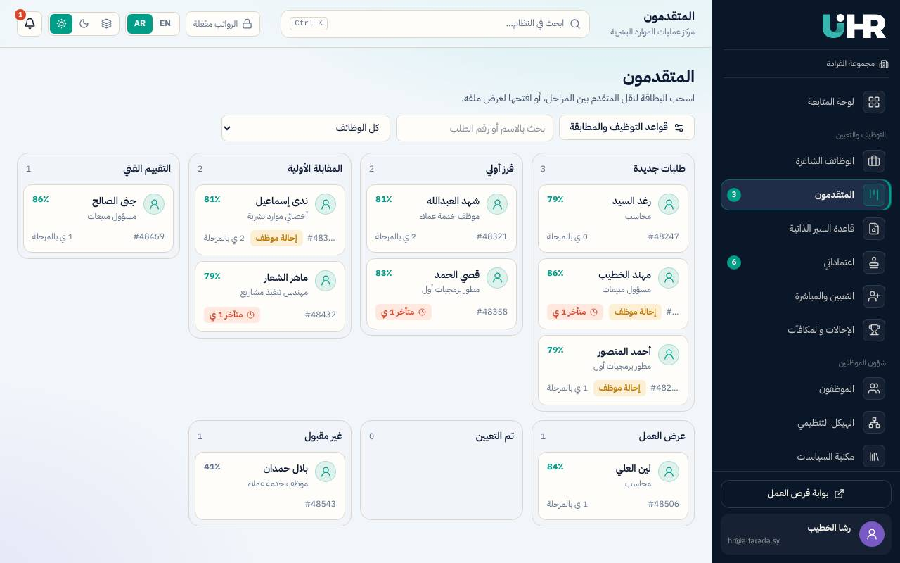
لوحة المتقدمين بمراحلها السبع
المراحل
طلبات جديدة←فرز أولي←المقابلة الأولية←التقييم الفني←عرض العمل←تم التعيينوفي أي مرحلة:غير مقبول
شارات البطاقة
| العنصر | معناه | ملاحظات |
|---|
| النسبة المئوية | مطابقة المتطلبات. | خضراء من 75%، وبلون ذهبي من 55%، ورمادية دون ذلك. |
| اختبار | حالة الاختبار الأولي: نتيجته بعد المراجعة، أو «✓» عند الإكمال، أو «…» أثناء الانتظار، أو «—» إن انتهت مهلته. | تظهر فقط إن أُرسل للمتقدم اختبار. |
| داخلي | موظف حالي تقدّم بترشيح داخلي. | تعيينه نقل لا موظف جديد. |
| إحالة موظف | جاء المتقدم عبر رابط إحالة موظف. | مرور الماوس يُظهر اسم المُحيل. |
| مطابقة منخفضة | نطاق المراجعة (41–49) في الطلبات الجديدة. | — |
| متأخر N ي / يستحق اليوم | المتقدم تجاوز مهلة المرحلة بـ N يوم، أو اليوم آخر يوم في المهلة. | وإلا يظهر عدد الأيام في المرحلة. |
| وقّع العرض / طلب تعديل | رد المتقدم على عرض العمل. | — |
مهلة المرحلة
مهلة المرحلة عدد الأيام الذي يُتوقع ألا يبقى المتقدم أكثر منه في مرحلة واحدة. القيم الافتراضية: طلبات جديدة 2، فرز أولي 3، المقابلة الأولية 5، التقييم الفني 5، عرض العمل 4 أيام. الهدف ألا يُهمل أي طلب، وتُضبط من «قواعد التوظيف والمطابقة».
قواعد النقل بين المراحل
ما يمنعه النظام
- لا يُنقل أحد إلى «تم التعيين» يدوياً. التعيين يتم فقط عبر قرار التعيين F-31 بعد أن يقبل المتقدم العرض.
- لا يُنقل إلى «عرض العمل» قبل إصدار عرض. السحب إليها يفتح تبويب العرض لإعداده.
- بعد أن يقبل المتقدم العرض ويُفتح قرار التعيين لا يُنقل إلا إلى «غير مقبول».
- «غير مقبول» يحتاج صلاحية الاعتماد/الرفض، وسبباً لا يقل عن 10 أحرف. تتوفر أسباب جاهزة: لا تتوفر الخبرة المطلوبة، الراتب خارج النطاق، نتيجة المقابلة غير كافية، تم شغل الوظيفة بمرشح آخر.
ما يصل المتقدمعند النقل إلى «المقابلة الأولية» يصله بريد دعوة للمقابلة وإشعار في حسابه. وعند «غير مقبول» يصله إشعار مهذب بانتهاء مراجعة طلبه، ولا يرى السبب. كل نقل يُسجَّل في سجل المتقدم باسم من قام به.
11.ملف المتقدم
يصل إليه: الموارد البشريةمسؤول التوظيف — المسار /hr/candidates/{رقم}
يجمع الملف كل ما يخص الطلب الواحد. رأسه يعرض الاسم والوظيفة والمرحلة ونسبة المطابقة ونتيجة الاختبار، وزر «نقل إلى» للانتقال بين المراحل، وزر «عدم قبول». المحتوى موزع على سبعة تبويبات.
بيانات الطلب
كل ما أدخله المتقدم في نموذج طلب التوظيف F-28:
- البيانات الشخصية: الاسم، الجنس، تاريخ الولادة، الجنسية، الرقم الوطني، الجوال، البريد، العنوان.
- المؤهلات والخبرة: المؤهل، سنوات الخبرة، اللغة الإنكليزية، الخبرات السابقة، المرجع.
- الأهلية والمرفقات: العمل بالورديات، السفر، العمل في القطاع العام، وجود حكم قضائي، الراتب المتوقع، وتنزيل السيرة الذاتية.
تظهر أيضاً مصادر خاصة إن وُجدت: «طلب داخلي F-27» لموظف حالي، و«المُحيل» إن جاء عبر إحالة. إن طلب المتقدم حذف بياناته تظهر عبارة «محذوف بطلب المتقدم» بدل بياناته الشخصية.
المطابقة
تفصيل نسبة المطابقة لكل معيار (انظر قسم «نسبة المطابقة ونطاقاتها»). الطلب في نطاق المراجعة يُعلَّم «مطابقة منخفضة — للمراجعة».
الاختبار الأولي
حالة الاختبار والإجابات ومراجعتها (التفصيل في قسم «الاختبار الأولي»).
المقابلة الأولية — تقييم المقابلة F-25
نموذج الشركة الرسمي لتقييم المقابلة. فيه أربع فئات، في كل فئة ستة معايير، ويُقيَّم كل معيار من 1 إلى 5:
| الفئة | المعايير |
|---|
| المواصفات الوظيفية | الجاهزية العامة للوظيفة، القدرة الجسدية، المؤهل والتخصص، سنوات الخبرة ونوعيتها، المعرفة الفنية، إتقان الإنكليزية. |
| المهارات المباشرة | التواصل، الإقناع والتفاوض، إتقان الحاسب، المرونة، استمرارية التعلم، الاستعداد للعمل الإضافي. |
| الشخصية والسلوك | المظهر واللباقة، السلوك، لغة الجسد، الثقة بالنفس، النضج المهني، تحمل المسؤولية. |
| المهارات القيادية (إن وجدت) | حل المشكلات، تحديد الأهداف، إدارة المخاطر، التخطيط، التأثير، قيادة الفريق. |
طريقة الاحتساب: كل فئة من 7.5 درجات، فالمجموع من 30 ويُعرض كنسبة مئوية. التقدير: 85% فأكثر «ممتاز — موصى بالتعيين»، و70% «جيد جداً — مقبول»، و50% «متوسط — يحتاج مراجعة»، ودون ذلك «غير كافٍ».
تُختار التوصية من ثلاثة: موصى به لعرض العمل، احتياط، غير موصى به. يُضاف «انطباعات اللجنة وملاحظات التوصية» ثم «اعتماد التقييم».
انتقال تلقائيإذا اعتُمد التقييم بتوصية «موصى به» والمتقدم في الطلبات الجديدة أو الفرز أو المقابلة، ينتقل تلقائياً إلى «التقييم الفني». لا يُعدَّل التقييم بعد إغلاق الطلب (تعيين أو عدم قبول).
عرض العمل F-29
العرض الرسمي الذي يرسله فريق التوظيف للمتقدم ليقبله بتوقيعه من حسابه.
| العنصر | معناه | ملاحظات |
|---|
| المسمى الوظيفي المعتمد | المسمى الذي سيحمله الموظف. | يصبح مسماه في ملفه عند التعيين. |
| الراتب الأساسي والبدلات | الأساسي، بدل السكن / غلاء المعيشة، بدل المواصلات، بدل المحروقات. | «الإجمالي الشهري» يُحسب تلقائياً ويصبح راتب الموظف. |
| العملة | دولار أمريكي أو ليرة سورية. | — |
| طبيعة العقد | غير محدد المدة، أو محدد المدة (سنة قابلة للتجديد)، أو عقد مشروع. | — |
| أيام الإجازة السنوية | الإجازة السنوية المذكورة في العرض. | — |
| تاريخ المباشرة | اليوم المتفق عليه لبدء العمل. | يصبح تاريخ تعيين الموظف. |
إعداد العرض←أُرسل — بانتظار رد المتقدم←مقبول وموقّعأوطلب تعديلأواعتذر المتقدم
- «إصدار العرض وإرساله» ينقل المتقدم إلى «عرض العمل» ويرسل له بريداً وإشعاراً.
- إذا طلب المتقدم تعديلاً تظهر ملاحظته، ويمكن «تعديل العرض» وإعادة إرساله.
- بعد القبول والتوقيع يُقفل العرض ولا يُعدَّل، ويُفتح قرار التعيين تلقائياً.
قرار التعيين F-31 — قرار التعيين المالي والإداري
القرار الذي يُعتمد على مستويات بالترتيب. اكتمال كل المستويات يحوّل المتقدم إلى موظف.
| العنصر | معناه | ملاحظات |
|---|
| رقم القرار | رقم تسلسلي للقرار (مثل QR-2026-…). | البادئة من إعدادات الشركة. |
| مطابقة الشهادة | هل مؤهل المتقدم مطابق للمطلوب أو أدنى منه. | معلومة يراها المعتمِد قبل التوقيع. |
| الملاك العددي / الموجود | الملاك العددي هو عدد الموظفين المعتمد رسمياً للإدارة، مقابل الموجود حالياً. | يرى المعتمِد هل بقي مكان في الإدارة أم سيتجاوز ملاكها. الملاك صفر يعني بلا حد. يُضبط من صفحة «الإدارات». |
| إجمالي الراتب الشهري / تاريخ المباشرة | من عرض العمل الموقّع. | — |
| مستويات الاعتماد | افتراضياً: الموارد البشرية ← الإدارة المالية ← المدير التنفيذي ← الرئيس التنفيذي. | تُغيَّر من «سلاسل الاعتماد». |
كل مستوى من حساب صاحبه
- يعتمد كل مستوى صاحبه من حسابه هو، بالترتيب. صاحب المستوى هو المستخدم المحدد في سلسلة الاعتماد، وإلا فأي مستخدم في الشركة يحمل دور المستوى. لا يمكن لمدير النظام ولا لغيره الاعتماد نيابةً عن أحد.
- يجد المعتمِد القرارات التي جاء دوره فيها في «اعتماداتي» /hr/approvals، ويصله إشعار عند وصول قرار لمستواه.
- رفض أي مستوى يحتاج سبباً لا يقل عن 10 أحرف، ويُغلق الطلب ويُبلَّغ فريق التوظيف.
- قبل الاعتماد الأخير يتحقق النظام من عدم وجود موظف مسجّل بنفس الرقم الوطني.
ماذا يحدث عند اكتمال الاعتماد
- يُنشأ ملف الموظف برقم وظيفي جديد (مثل UHR-1033) بحالة «قيد المباشرة»، وتُنقل إليه كل أحداث سجل المتقدم.
- يُعيَّن المدير المباشر تلقائياً: مدير إدارة الوظيفة.
- حساب المتقدم نفسه يصبح حساب الموظف، فيدخل بنفس البريد وكلمة المرور ويجد بوابة الموظف. يصله بريد تهنئة برقمه الوظيفي.
- تُخصَّص له بطاقة حضور من المستودع، بانتظار توقيعه على استلامها.
- تُفتح إجراءات المباشرة F-19، ويُحتسب للمُحيل نقاط المرحلة الثالثة إن وُجد.
السجل والملاحظات
تبويب «السجل» يعرض كل ما جرى على الطلب بتاريخه ومنفّذه: الاستلام، النقل بين المراحل، المقابلة، العرض، الاعتمادات. ومنه «أضف ملاحظة على الملف» لتدوين ملاحظة داخلية لا يراها المتقدم.
12.قاعدة السير الذاتية
يصل إليها: الموارد البشريةمسؤول التوظيف — المسار /hr/cv
مخزون السير الذاتية لمن وافقوا عند التقديم على الاحتفاظ بسيرهم لفرص قادمة. الغاية أن يبحث فريق التوظيف فيه قبل نشر شاغر جديد. من لم يوافق على الاحتفاظ لا يظهر فيها.
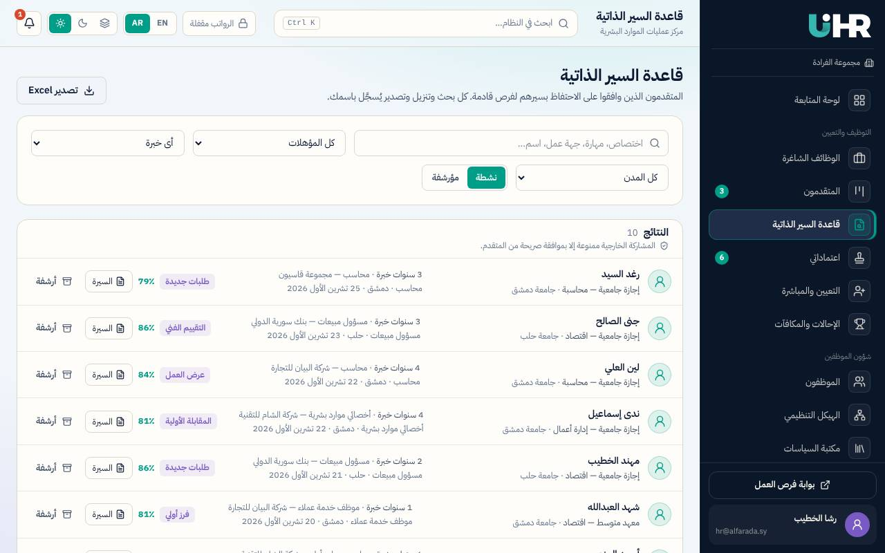
قاعدة السير الذاتية
| العنصر | معناه | ملاحظات |
|---|
| البحث | كلمات في الاختصاص أو المهارة أو جهة العمل أو الاسم أو الوظيفة المتقدَّم إليها. | — |
| المؤهل / الخبرة / المدينة | فلاتر: مؤهل لا يقل عن، سنوات خبرة لا تقل عن، مدينة. | — |
| نشطة / مؤرشفة | حالة السيرة. | «أرشفة» تخفي السيرة من البحث العادي، و«تنشيط» يعيدها. |
| تصدير Excel | تنزيل نتائج البحث. | يحتاج صلاحية التصدير. |
الخصوصية والاحتفاظ
- كل بحث وتنزيل وتصدير يُسجَّل باسم من قام به في سجل التدقيق.
- المشاركة الخارجية للسير ممنوعة إلا بموافقة صريحة من المتقدم.
- تُؤرشف السيرة تلقائياً بعد مدة الاحتفاظ (24 شهراً افتراضياً، وتُضبط من «قواعد التوظيف والمطابقة»).
- للمتقدم أن يطلب حذف بياناته من حسابه، فتُمحى ملفاته وبياناته الشخصية ويبقى أثر مجهول الهوية. لا يُقبل الحذف إذا كان الطلب في مرحلة قرار التعيين أو بعد التعيين.
إشعار المدراءعند وصول سيرة جديدة على شاغر يصل مدير الإدارة المعنية إشعار بذلك، دون أي بيانات شخصية للمتقدم.
13.الاختبار الأولي
يصل إليه: الموارد البشريةمسؤول التوظيف — زر «الاختبار» في قائمة الشواغر، المسار /hr/jobs/{رقم}/test
اختبار قصير يُرسل للمتقدم رابطه بالبريد، ويحله من المتصفح خلال مدة محددة. نتيجته تظهر إلى جانب نسبة المطابقة لا بديلاً عنها، ولا يُرفض أي متقدم آلياً بسبب الاختبار. القرار دائماً لفريق التوظيف.
الإعداد
| العنصر | معناه | القيمة الافتراضية |
|---|
| الاختبار | مفعّل أو متوقف. عند التفعيل يُرسل الاختبار المعتمد تلقائياً لكل طلب جديد يطابق خيار «يُرسل إلى». | متوقف |
| يُرسل إلى | «المطابقين فوق الحد» (من بلغت مطابقتهم حد الفرز) أو «كل المتقدمين». | المطابقين فوق الحد |
| المدة (دقيقة) | الوقت المتاح بعد أن يبدأ المتقدم الاختبار. يُحسب على الخادم، فلا يتأثر بإغلاق الصفحة. | 30 (من 5 إلى 180) |
| عدد المحاولات | كم مرة يمكن إرسال الاختبار للمتقدم نفسه. | 1 (حتى 3) |
| صلاحية الرابط (يوم) | عدد الأيام قبل أن ينتهي الرابط إن لم يبدأ. | 3 (حتى 30) |
الأسئلة
يكتب فريق الموارد البشرية الأسئلة بنفسه، حتى 30 سؤالاً. ولكل سؤال:
| العنصر | معناه | ملاحظات |
|---|
| نوع السؤال | اختيار من متعدد، أو إجابة قصيرة، أو سيناريو عملي. | الاختيار من متعدد يُصحَّح تلقائياً. |
| نص السؤال | ما يراه المتقدم. | إلزامي. |
| الخيارات والإجابة الصحيحة | لأسئلة الاختيار فقط. | الإجابة الصحيحة لا تظهر للمتقدم. |
| معيار التصحيح | وصف الإجابة الجيدة للأسئلة المفتوحة. | يرشد مراجعة HR، ولا يراه المتقدم. |
| الدرجة | وزن السؤال. | من 1 إلى 100. يظهر مجموع الدرجات أعلى القائمة. |
يمكن ترتيب الأسئلة بأزرار «أعلى» و«أسفل». «حفظ كمسودة» يحفظ دون إرسال لأحد، و«حفظ واعتماد» يجعل الاختبار جاهزاً للإرسال. أي تعديل بعد الاعتماد يعيده مسودة حتى يُعتمد من جديد.
الإرسال والتصحيح والمراجعة
- يُرسل الاختبار تلقائياً حسب الإعداد، أو يدوياً من تبويب «الاختبار الأولي» في ملف المتقدم بزر «إرسال الاختبار الأولي».
- يفتح المتقدم الرابط ويبدأ، فيبدأ العد التنازلي. عند انتهاء المدة تُرسل الإجابات تلقائياً.
- تُصحَّح أسئلة الاختيار من متعدد آلياً وتظهر «الأسئلة الموضوعية» كنسبة، وتنتظر الأسئلة المفتوحة المراجعة.
- يدخل مسؤول التوظيف «الدرجة المعتمدة» لكل سؤال مفتوح، ويضيف ملاحظة إن شاء، ثم «اعتماد النتيجة». تظهر «النتيجة النهائية» على بطاقة المتقدم في اللوحة.
أُرسل←جارٍ←مكتمل — بانتظار المراجعة←رُوجعتأوغير مكتملانتهت المهلة
محاولة جديدةإذا انتهت مهلة المحاولة دون إكمال، يمكن «إرسال محاولة جديدة» ما دام عدد المحاولات يسمح. وإلا تظهر عبارة «استُنفدت المحاولات المسموحة».
14.الإحالات والمكافآت (جهة الموارد البشرية)
يصل إليها: الموارد البشرية — المسار /hr/referrals
الإحالة أن يشارك موظف رابط وظيفة مع شخص يعرفه، فيتقدم عبره. يكسب الموظف نقاطاً كلما تقدّم من أحاله في مراحل التوظيف، ويستبدل النقاط بمكافآت من متجر الشركة.
النقاط المرحلية
| المرحلة | متى تُمنح | النقاط الافتراضية |
|---|
| 1 — تجاوز الفرز الأولي | عند وصول المرشح إلى «فرز أولي». | 10 |
| 2 — التأهل للمقابلة | عند وصوله إلى المقابلة أو التقييم الفني أو عرض العمل. | 20 |
| 3 — توقيع العرض والمباشرة | عند اكتمال قرار التعيين. | 30 |
| 4 — اجتياز التجربة | عند تثبيت تعيين الموظف بعد فترة التجربة. | 40 |
تُمنح كل مرحلة مرة واحدة فقط لكل مرشح. وفي الوظائف الحرجة تُضرب النقاط بمضاعف (×2 افتراضياً). إذا لم يُقبل المرشح تتوقف النقاط وتُغلق الإحالة. القيم كلها قابلة للضبط من «قواعد التوظيف والمطابقة».
تبويبات الصفحة
| التبويب | ما يعرضه | ملاحظات |
|---|
| لوحة المتصدرين | أكثر الموظفين استقطاباً للمواهب، ومسار «من الرابط إلى التعيين»: زيارات، تقدّموا عبر رابط، عُيّنوا، ونقاط مُنحت عبر الإحالات. | — |
| روابط الإحالة | كل رابط مشاركة: الموظف، الوظيفة، الزيارات، والمتقدمون عبره. | تُحتسب زيارة واحدة لكل جلسة. |
| طلبات الاستبدال | طلبات الموظفين لاستبدال نقاطهم بمكافآت. | «اعتماد» يخصم من المخزون. «رفض وإعادة النقاط» يحتاج سبباً لا يقل عن 10 أحرف ويعيد النقاط للموظف. لا يعتمد أحد طلبه هو. |
| المتجر | المكافآت المتاحة: الاسم بالعربية والإنكليزية، النقاط المطلوبة، المخزون، النوع (إجازة، طعام، رياضة، دورة، موقف، هدية)، والحالة (متاحة في المتجر / موقوفة). | المكافأة الموقوفة لا تظهر للموظفين. |
حجز النقاطعند طلب الموظف مكافأة تُحجز نقاطها فوراً حتى يُبت في الطلب، فلا يستطيع صرفها مرتين.
15.التعيين والمباشرة
يصل إليها: الموارد البشرية — المسار /hr/onboarding
الصفحة الرئيسية قسمان: «قرارات تعيين بانتظار الاعتماد» (المتقدمون الذين وقّعوا العرض ولم يكتمل قرارهم بعد)، و«الموظفون الجدد» في مرحلة المباشرة أو فترة التجربة. ومنها زرا «إضافة موظف» و«استيراد من Excel».
حالات الموظف الجديد
قيد المباشرة←فترة التجربةبعد 14 بنداً منجزاً←على رأس العملبعد التثبيت
قائمة إجراءات المباشرة F-19
«قائمة تحقق إجراءات الموظف الجديد» هي نموذج الشركة بـ28 بنداً، تبدأ بتحضير قرار التعيين وتنتهي بتقييم نهاية التجربة وتثبيت التعيين. يُعلَّم البند المنجز بالضغط عليه، وعند التعيين عبر قرار F-31 يُنجَز بندان تلقائياً: تحضير قرار التعيين، والتأكد من توقيع عرض العمل والقرار.
| البند التلقائي | متى يُنجز | ملاحظات |
|---|
| 5 — تحضير مذكرة الترحيب وتعميمها | عند «تعميم على الأقسام» من تبويب مذكرة الترحيب. | البنود التلقائية مقفلة: لا تُعلَّم ولا تُلغى يدوياً لأنها تُنجز من مصدرها. |
| 11 — توقيع تعهد السرية | عند توقيع الموظف على F-22. |
| 13 — توقيع إبراء ذمة وقائي | عند توقيع الموظف على F-20. |
| 23 — تسليم العهدة | عند توقيع الموظف استلام كل عهده. |
| 28 — تقييم نهاية التجربة وتثبيت التعيين | بزر «تثبيت التعيين» في فترة التجربة. |
بداية فترة التجربةعند إنجاز 14 بنداً (القيمة الافتراضية، وتُضبط من «قواعد التوظيف والمطابقة») ينتقل الموظف إلى «فترة التجربة» تلقائياً. مدتها 90 يوماً افتراضياً، وتظهر «نهاية التجربة» في صفحة المباشرة. وأول تسجيل حضور للموظف يُنجز بند «تعريف الموظف على النظام وجهاز الحضور».
تبويبات صفحة المباشرة
| التبويب | ما فيه |
|---|
| إجراءات F-19 | البنود الـ28 وحالتها. |
| مذكرة الترحيب F-32 | نص «مذكرة الترحيب بالموظف الجديد» جاهز باسم الموظف ومسماه وإدارته، موجّه «إلى: جميع الأقسام». «نسخ النص» لاستخدامه في مكان آخر، و«تعميم على الأقسام» يرسل إشعاراً لكل موظفي الشركة وينجز البند 5. يمكن «إعادة الإرسال». |
| العهد | «تسليم العهدة»: اختيار أصل من المستودع وتسليمه للموظف، فيصبح «بانتظار توقيع الموظف» حتى يوقّع استلامه من حسابه ويصدر «سند استلام عهدة». يمكن «إلغاء التسليم وإعادته للمستودع» قبل التوقيع. |
| التعهدات | حالة توقيع «تعهد المحافظة على سرية العمل» F-22، و«إقرار إبراء الذمة الوقائي» F-20 (يكتب فيه الموظف اسم الأم)، و«إقرار ميثاق السلوك المهني». يوقّعها الموظف من حسابه في «وثائقي للتوقيع»، ويظهر هنا تاريخ كل توقيع. |
| السجل | كل ما جرى في المباشرة بتاريخه. |
تثبيت التعيين
في فترة التجربة يظهر زر «تثبيت التعيين». يطلب النظام تأكيداً، ويمكن كتابة «ملاحظة تقييم نهاية التجربة» (اختيارية). بعد التثبيت يصبح الموظف «على رأس العمل»، ويُنجز البند 28، ويُحتسب للمُحيل نقاط المرحلة الرابعة. لا يكون التثبيت إلا في فترة التجربة.
إضافة موظف يدوياً
لإضافة موظف لم يمر بمسار التوظيف في النظام، مثل موظف تعاقدت معه الشركة مباشرة. المعالج أربع خطوات:
- البيانات الشخصية: الاسم الكامل والاسم بالإنكليزية، الجنس، تاريخ الولادة، الرقم الوطني، الجوال، والبريد الذي يصله عليه حساب الدخول.
- الوظيفة والراتب: الإدارة، المسمى بالعربية والإنكليزية، مقر العمل، المدير المباشر (أو «رئيس الإدارة تلقائياً»)، تاريخ المباشرة، الراتب الشامل والعملة.
- العهد: اختيار ما يُسلَّم له من المستودع. إن لم تتوفر عهد يمكن التسليم لاحقاً من صفحة المباشرة.
- المراجعة: عرض كل ما أُدخل، ثم «إنشاء الملف».
يُنشأ الملف بحالة «قيد المباشرة» مع قائمة F-19 منجزاً فيها بندا «تحضير قرار التعيين» و«إعداد الملف ومنح الرقم الوظيفي»، ويُنشأ للموظف حساب بكلمة مرور مؤقتة تصله بالبريد، وتصله العهد ليوقّع استلامها.
الاستيراد من Excel
لإدخال الموظفين الحاليين دفعة واحدة عند بدء استخدام النظام.
- نزّل القالب: سطر لكل موظف، ورموز الإدارات والمقرات في الورقة الثانية.
- املأه واحفظه بصيغة xlsx أو csv.
- ارفعه وراجع المعاينة: يعرض النظام كل سطر بحالة «جاهز» أو بأخطائه (حقل ناقص، رمز إدارة غير معروف، بريد مستخدم…).
- اختر إن كنت تريد «أرسل لكل موظف بريد الدخول بكلمة مرور مؤقتة»، ثم أكّد الاستيراد.
كل شيء أو لا شيءلا يُحفظ أي موظف حتى تخلو كل الأسطر من الأخطاء. يُستورد الموظفون مباشرة «على رأس العمل» دون قائمة مباشرة، لأنهم موظفون حاليون. بدون إرسال البريد تُنشأ الحسابات، ويمكن للموظف تعيين كلمة مروره لاحقاً من «نسيت كلمة المرور».
16.الترشيح الداخلي (جهة الموارد البشرية)
يراه: الموارد البشريةالمدير المباشر
الترشيح الداخلي أن يتقدم موظف حالي على شاغر في شركته بطلب توظيف داخلي F-27 من بوابته. شروط الأهلية الافتراضية: 12 شهراً خدمة على الأقل، وأن يكون خارج فترة التجربة، وبلا جزاء خلال آخر 6 أشهر. تُضبط من «قواعد التوظيف والمطابقة».
- يصل الطلب أولاً إلى المدير المباشر للموظف ليوافق أو يرفض من «اعتماداتي». إن لم يكن للموظف مدير يُقبل الطلب فوراً.
- بعد الموافقة يظهر الموظف في لوحة المتقدمين على الشاغر في مرحلة «فرز أولي» بشارة «داخلي»، مع نسبة مطابقة محسوبة، ويصل الموارد البشرية إشعار.
- يمر بالمراحل نفسها: المقابلة، والتقييم، وعرض العمل الذي يرد عليه من بوابته، وقرار التعيين.
نقل لا تعيين جديدعند اكتمال قرار التعيين لمرشح داخلي لا يُنشأ موظف جديد ولا حساب جديد ولا إجراءات مباشرة. يُحدَّث ملفه نفسه بالمسمى والإدارة والمقر والراتب من العرض، وبالمدير الجديد، ويُسجَّل ذلك في سجله.
17.الموظفون: الدليل وملف الموظف
يصل إليها: الموارد البشريةالمدير (فريقه فقط)الإدارة التنفيذية (عرض) — من القائمة الجانبية «شؤون الموظفين ← الموظفون» /hr/employees
دليل الموظفين هو السجل المركزي لكل من يعمل في الشركة. يرى كل مستخدم فيه الموظفين الواقعين ضمن نطاق صلاحيته: الموارد البشرية ترى الجميع، والمدير يرى فريقه المباشر، والموظف العادي لا يصل إلى هذه الصفحة أصلاً (يرى ملفه من بوابته).
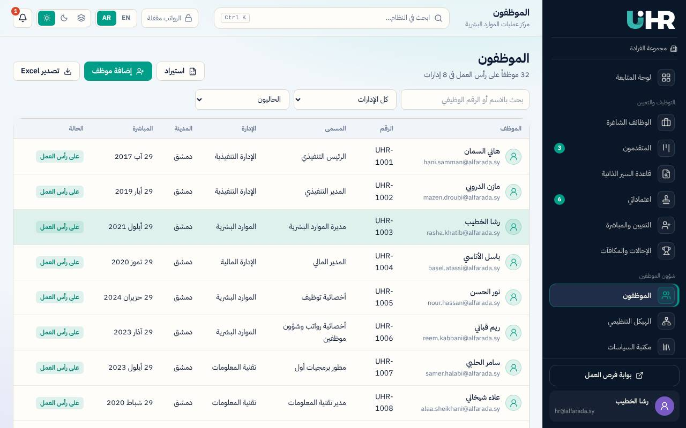
دليل الموظفين: البحث، المرشحات، أزرار الإضافة والاستيراد والتصدير
مكوّنات الدليل
| العنصر | معناه | ملاحظات |
|---|
| بحث بالاسم أو الرقم الوظيفي | يبحث في الاسم العربي والإنكليزي والرقم الوظيفي (مثل UHR-1007) والبريد. | يكفي جزء من الاسم. |
| كل الإدارات | تصفية الموظفين حسب الإدارة. | قائمة الإدارات تأتي من «الإعدادات ← الإدارات». |
| الحالة | «الحاليون» (افتراضياً: كل من لم تنته خدمته)، أو حالة بعينها، أو «الكل» مع المنتهية خدمتهم. | المرشحات تبقى في رابط الصفحة، فيمكن مشاركة الرابط بالتصفية نفسها. |
| إضافة موظف | معالج إضافة موظف جديد مباشرة دون المرور بالتوظيف (يُشرح في جزء التعيين والمباشرة). | يحتاج صلاحية «إضافة» على الموظفين. |
| استيراد | استيراد موظفين حاليين دفعة واحدة من ملف Excel. | مفيد عند بدء التشغيل. |
| تصدير Excel | ينزّل الدليل كما هو معروض (بالتصفية الحالية): الرقم، الاسم، المسمى، الإدارة، المدينة، المدير، البريد، الجوال، تاريخ المباشرة، الحالة. | لا يتضمن الراتب أبداً. كل تصدير يُسجَّل في سجل التدقيق. |
| أعمدة الجدول | الموظف (الاسم والرقم)، المسمى، الإدارة، المدينة، المباشرة، الحالة. | على الشاشات الصغيرة تُخفى الأعمدة الثانوية ويبقى الاسم والحالة. |
حالات الموظف الست (دورة حياته)
قيد المباشرةصدر قرار التعيين ولم يباشر←
فترة التجربةباشر العمل فعلياً←
على رأس العملبعد التثبيت←
مستقيل — فترة إخطارقُدّمت استقالة أو إنهاء←
منتهي الخدمةأُغلق ملف الخروج
| الحالة | معناها | كيف يصل إليها |
|---|
| قيد المباشرة | موظف صدر قرار تعيينه (F-31) أو أضيف يدوياً ولم يكتمل ملف مباشرته بعد. | تلقائياً عند التعيين. |
| فترة التجربة | بدأ العمل ويُقيَّم خلال فترة التجربة (افتراضياً 90 يوماً). | تلقائياً عند إنجاز حدّ معيّن من بنود ملف المباشرة F-19. |
| على رأس العمل | موظف مثبّت يعمل بشكل طبيعي. | بقرار التثبيت من صفحة المباشرة. |
| إجازة | في إجازة طويلة معتمدة. | بحسب الإجازات المعتمدة. |
| مستقيل — فترة إخطار | قدّم استقالته أو صدر إنهاء لخدمته، ويعمل حتى آخر يوم. | تلقائياً عند تقديم الاستقالة؛ ويعود لحالته السابقة إن رُفضت أو سُحبت. |
| منتهي الخدمة | انتهت علاقته بالشركة؛ يبقى ملفه محفوظاً للرجوع إليه ويُوقَف حسابه. | عند إغلاق ملف الخروج. |
ملف الموظف
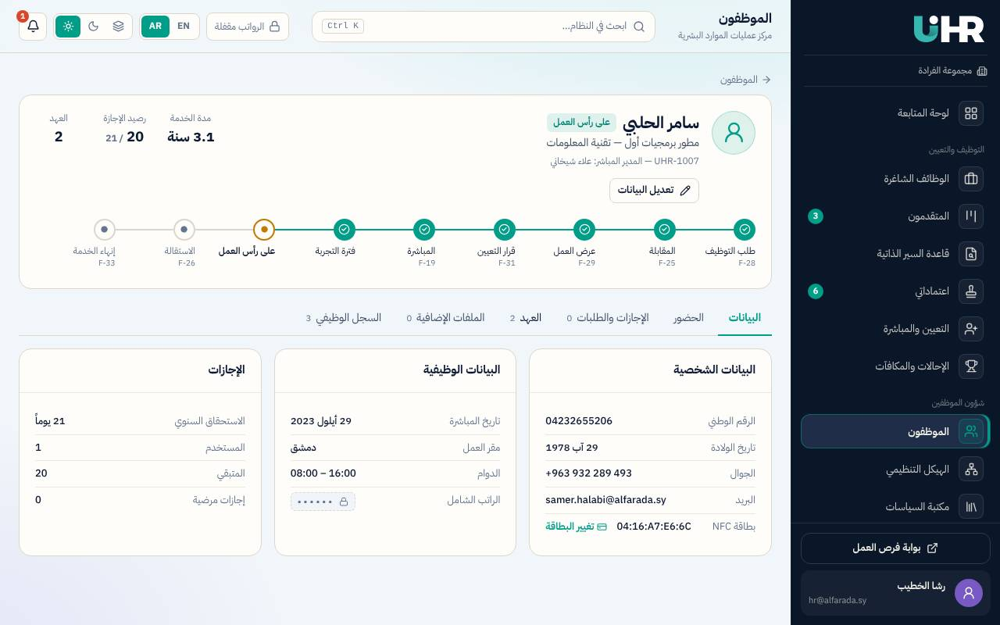
ملف الموظف: الرأس، شريط دورة الحياة، والتبويبات
يفتح بالضغط على أي موظف في الدليل. في رأسه: الاسم والمسمى والإدارة والرقم الوظيفي والمدير المباشر وشارة الحالة، ومؤشرات سريعة (مدة الخدمة، رصيد الإجازة المتبقي من الاستحقاق، عدد العهد). تحته شريط دورة الحياة الذي يبين المراحل التي مر بها الموظف ورمز النموذج الرسمي لكل مرحلة: طلب التوظيف F-28، المقابلة F-25، عرض العمل F-29، قرار التعيين F-31، المباشرة F-19، فترة التجربة، على رأس العمل، الاستقالة F-26، إنهاء الخدمة F-33.
| التبويب | ما يعرضه | ملاحظات |
|---|
| البيانات | البيانات الشخصية (الرقم الوطني، تاريخ الولادة، الجوال، البريد، بطاقة NFC)، والبيانات الوظيفية (تاريخ المباشرة، مقر العمل، الدوام، الراتب الشامل، وتاريخ انتهاء الخدمة إن وجد)، وملخص الإجازات (الاستحقاق السنوي، المستخدم، المتبقي، الإجازات المرضية). | الراتب يظهر بنقاط مخفية «محمي» ولا يُعرض إلا لمن يملك صلاحية الرواتب وبعد التحقق من هويته (انظر «حماية الرواتب»). |
| الحضور | آخر 14 يوماً: الدخول، الخروج، ساعات العمل، التأخير، الإضافي، وحالة كل يوم. | للتفاصيل والتصحيح: صفحة «الحضور والدوام». |
| الإجازات والطلبات | طلبات الإجازة بحالاتها، وطلبات الخدمات (شهادة راتب، شهادة خبرة، سلفة، تحديث بيانات). | الحالة تبين عند من يقف الطلب الآن. |
| العهد | ما في عهدة الموظف من أجهزة وأدوات، مع حالة التوقيع («موقّع» أو «بانتظار التوقيع»). | الإدارة من صفحة «العهد». |
| الملفات الإضافية | المستندات المرفوعة للموظف (هوية، شهادات، عقود، تقارير…). | تُشرح أدناه. |
| السجل الوظيفي | كل حدث في حياة الموظف بتاريخه: تعيين، تغيير إدارة أو مدير أو مسمى، ربط بطاقة، رفع مستند، تصحيح حضور، قرارات… | لا يمكن تعديله أو حذفه. |
تعديل بيانات الموظف
زر «تعديل البيانات» في رأس الملف (يحتاج صلاحية «تعديل» على الموظفين ضمن نطاقك). الحقول: الاسم الكامل، الاسم بالإنكليزية، الجنس، تاريخ الولادة، الرقم الوطني، الجوال، البريد، الإدارة، المسمى الوظيفي (بالعربية والإنكليزية)، المدير المباشر، مقر العمل.
قواعد يفرضها النظام
- الراتب لا يُعدَّل من هنا.
- لا يمكن أن يكون الموظف مديراً لنفسه أو لمديره (يمنع النظام الحلقات في الهيكل). خيار «بلا مدير (رأس الهيكل)» للمدير العام فقط عادة.
- تغيير البريد يغيّر بريد الدخول للحساب نفسه، ويجب ألا يكون مستخدماً لحساب آخر.
- تغيير الإدارة أو المدير أو المسمى يُكتب تلقائياً في السجل الوظيفي.
ربط بطاقة الحضور (NFC)
لكل موظف بطاقة واحدة يسجّل بها حضوره على أجهزة الحضور. من خانة «بطاقة NFC» في تبويب البيانات اضغط «ربط بطاقة» (أو «تغيير البطاقة»).
- تظهر نافذة «ربط بطاقة الحضور» برسالة «مرّر البطاقة الآن».
- مرّر البطاقة على القارئ. إن كان القارئ من نوع ACS موصولاً بحاسوب عليه «جسر القارئ»، تُقرأ البطاقة تلقائياً وتظهر «تمت قراءة البطاقة».
- أو أدخل رقم البطاقة يدوياً في خانة «أو أدخل رقم البطاقة» واضغط «إدخال».
- اضغط «ربط البطاقة». يُكتب الربط في السجل الوظيفي.
لماذا يرفض النظام بطاقة أحياناً؟البطاقة الواحدة لا تُربط بأكثر من موظف في كل المنصة، والنظام يتعرف على الرقم نفسه مهما اختلفت طريقة كتابته (بالنظام الست عشري أو العشري أو بترتيب معكوس). لإلغاء الربط استخدم «إلغاء الربط».
الملفات الإضافية للموظف
تبويب «الملفات الإضافية» يحفظ مستندات الموظف: «الهوية، الشهادات، العقود، التقارير الطبية… مع تاريخ انتهاء وتنبيه قبل انتهائها». زر «رفع مستند» يفتح نافذة «رفع مستند للموظف».
| الحقل | معناه | ملاحظات |
|---|
| نوع المستند | اختيار من الأنواع المعرّفة في الإعدادات. | الافتراضي ثمانية أنواع: هوية شخصية، جواز سفر، شهادة علمية، عقد عمل، تقرير طبي، شهادة خبرة، رخصة / إجازة مزاولة، أخرى. |
| عنوان (اختياري) | وصف يميز المستند، مثل «شهادة الماجستير». | |
| الملف | الملف المرفوع. | الصيغ المسموحة افتراضياً: PDF وJPG وJPEG وPNG وDOCX، والحجم الأقصى 10 ميغابايت. |
| تاريخ الانتهاء | تاريخ انتهاء صلاحية المستند (للهوية والجواز والرخص…). | يصل تنبيه للموارد البشرية وللموظف قبل الانتهاء بـ 30 يوماً (افتراضياً)، ويصبح المستند «منتهي» بعده. |
| الحساسية | «عادي» أو «حساس». | «يراه المخوّلون بالمستندات الحساسة والموظف نفسه فقط» — افتراضياً مدير ومسؤول الموارد البشرية. |
| ملاحظة | أي ملاحظة إضافية. | |
ساري←قارب على الانتهاءخلال فترة التنبيه←منتهي/مؤرشفيُستعاد في أي وقت
- عرض / تنزيل: الصور وPDF تُعرض مباشرة، وغيرها يُنزَّل. «كل مشاهدة وتنزيل تُسجَّل باسم صاحبها».
- السجل: يبين من رفع المستند ومن شاهده ونزّله ومن أرشفه أو استعاده ومتى.
- أرشفة / استعادة: لا يوجد حذف نهائي للمستندات؛ المؤرشف يختفي من القائمة ويظهر عند اختيار «عرض المؤرشف».
أين تُضبط أنواع المستندات والحجم والتنبيه؟من «الإعدادات ← الملفات الإضافية للموظفين». لا يمكن حذف نوع مستخدم في مستندات قائمة، ويرفض النظام الصيغ الخطرة.
18.الهيكل التنظيمي وتصديره PDF
يصل إليها: كل موظفي الشركة (عرض)الموارد البشرية والإدارة (طباعة) — /hr/org
يرسم الهيكل تلقائياً من حقل «المدير المباشر» في ملفات الموظفين: كل موظف تحت مديره. المستويان الأولان مفتوحان، والرقم أسفل كل بطاقة هو عدد أفراد فريقه — اضغطه لفتح الفريق أو إغلاقه، واضغط البطاقة لفتح ملف الموظف (إن كان ضمن صلاحيتك). خط ملوّن أعلى كل بطاقة يدل على الإدارة (اللون من إعدادات الإدارات). البحث يبرز الموظف ويفتح الفروع إليه، وأزرار + و− للتكبير والتصغير. على الجوال يتحول الهيكل إلى قائمة متداخلة.
تصدير PDF
زر «تصدير PDF» يفتح صفحة الطباعة /hr/org/print بخيارات:
| الخيار | معناه | ملاحظات |
|---|
| النطاق | «الشركة كاملة»، أو «إدارة» (تختارها)، أو «فرع يبدأ بموظف» (تختار الموظف فيُطبع هو ومن تحته). | |
| مستويات في الصفحة | عدد المستويات التي تُرسم في كل صفحة (من 2 إلى 6). | الافتراضي 3. |
| العرض | «الاسم والمسمى» أو «المسميات فقط» (مناسب للهيكل الوظيفي الرسمي دون أسماء). | الافتراضي الاسم والمسمى. |
| حفظ كافتراضي | يحفظ العرض وعدد المستويات كإعداد للشركة. | لمن يملك تعديل الإعدادات. |
| طباعة / PDF | يفتح نافذة الطباعة؛ اختر «حفظ بصيغة PDF». | كل تصدير يُسجَّل في سجل التدقيق. |
كيف يُقسَّم الهيكل الكبير على صفحات؟كل صفحة A4 أفقية تحمل شعار الشركة واسمها وعنوان النطاق، وتذييل النموذج ورقم الصفحة. إذا كان لموظف في المستوى الأخير من الصفحة فريق، يُكتب تحت بطاقته «فريقه (العدد) ← صفحة N» ويُطبع فريقه في صفحة مستقلة تبدأ به.
19.الحضور والدوام
يصل إليها: الموارد البشريةالمدير (فريقه) — /hr/attendance؛ والموظف يرى حضوره في بوابته «حضوري»
«حركات بطاقات NFC محسوبة وفق سياسة الدوام النافذة: الوردية، جدول حسم التأخير، والإضافي». كل تمريرة بطاقة على جهاز حضور تُسجَّل فوراً: أول تمريرة في اليوم دخول، وما بعدها خروج (آخر خروج هو المعتمد).
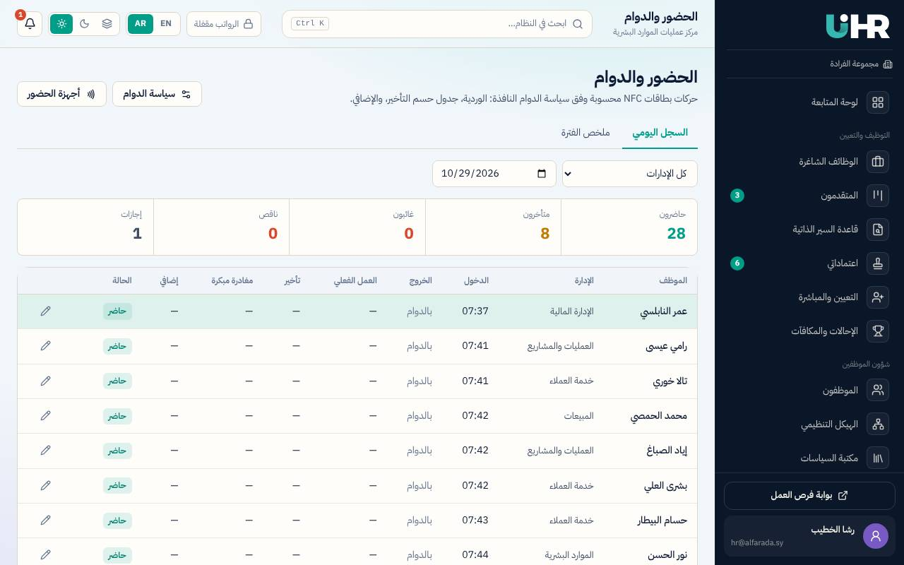
السجل اليومي: العدادات، آخر الحركات، والجدول
السجل اليومي
- العدادات: حاضرون، متأخرون، غائبون، إجازات، ناقص.
- آخر الحركات: آخر 12 تمريرة في اليوم مع اسم الجهاز. صفحة اليوم «تتحدث تلقائياً من أجهزة الحضور».
- الجدول: الموظف، الدخول، الخروج، العمل الفعلي، التأخير (مع دقائق الحسم)، الإضافي، الحالة، وزر «تصحيح».
- التاريخ والإدارة: لعرض يوم سابق أو إدارة محددة.
عرض الفترة («ملخص الفترة»)
لكل موظف خلال فترة تختارها (من / إلى): أيام الحضور، الغياب، الناقص، الإجازات، أيام التأخير ومجموع التأخير، دقائق الحسم، والساعات الإضافية. زر «تصدير Excel» ينزّل العرض الحالي ويُسجَّل التصدير.
حالات اليوم
| الحالة | معناها | ملاحظات |
|---|
| قبل المباشرة | اليوم يسبق تاريخ مباشرة الموظف. | لا يُحسب غياباً. |
| إجازة | الموظف في إجازة معتمدة في ذلك اليوم. | لا يُطلب منه تسجيل. |
| عطلة / عطلة رسمية | يوم راحة أسبوعية أو عطلة رسمية معرّفة. | العمل فيه يُحسب إضافياً بنسبته. |
| لم يسجل | يوم عمل لم يسجّل فيه الموظف دخوله بعد (اليوم الحالي). | يصبح «غياب» بعد انتهاء اليوم. |
| غياب | يوم عمل مضى دون أي دخول، أو تأخير تجاوز الحد الأقصى (افتراضياً أكثر من 120 دقيقة = غياب). | يُحسم في الكشف الشهري (افتراضياً يوم أجر عن كل يوم غياب غير مبرر). |
| ناقص — بلا خروج | سجّل دخوله ولم يسجّل خروجه، ومضى على نهاية الوردية أكثر من المدة المحددة (افتراضياً 120 دقيقة)، أو اليوم انقضى. | يجب تصحيحه أو تبريره؛ الأيام الناقصة تمنع إغلاق الكشف الشهري. |
| مبرر | غياب أو تأخير أو يوم ناقص قُبل تبريره. | لا يُحسم تأخيره، والغياب المبرر يُحسم بحسب السياسة (افتراضياً لا حسم). |
| متأخر | دخل بعد بداية الوردية (مع السماح إن وجد). | تظهر دقائق التأخير ودقائق الحسم المحسوبة من جدول الحسم. |
| حاضر | يوم طبيعي في الموعد. | «بالدوام» تعني أنه داخل الآن ولم يخرج بعد. |
التصحيح اليدوي
عندما ينسى الموظف التمرير أو يتعطل جهاز، تضغط الموارد البشرية «تصحيح» في صف الموظف (يحتاج صلاحية تعديل الحضور).
- تفتح نافذة «تصحيح الدوام»: عدّل وقت الدخول و/أو الخروج.
- اكتب «سبب التصحيح» (5 أحرف على الأقل)، مثال: «نسي تسجيل الخروج — أكّده المدير المباشر».
- اضغط «حفظ التصحيح». «يُحفظ مع اسمك ويصل للموظف» إشعاراً، ويُكتب في سجله الوظيفي وسجل التدقيق بالقيمة قبل وبعد، ويظهر اليوم بعلامة «مصحّح يدوياً».
أجهزة الحضور
يصل إليها: من يملك تعديل الحضور — «الإعدادات ← أجهزة الحضور» /hr/settings/devices
| العنصر | معناه | ملاحظات |
|---|
| إضافة جهاز | تسجيل جهاز جديد: الاسم (مثل «بوابة المقر — دمشق»)، الاسم بالإنكليزية، المقر، والنوع: جهاز Sunmi، جوال NFC، حاسوب + قارئ USB، أو قارئ ACS على حاسوب. | |
| مفتاح الجهاز | رمز سري يربط الجهاز بشركتك. | «يظهر المفتاح هذه المرة فقط». «مفتاح جديد» يولّد مفتاحاً ويوقف القديم. |
| الحالة | «فعّال» أو «موقوف»، و«متصل» إذا تواصل الجهاز مع النظام في آخر 3 دقائق، وإلا «غير متصل». | «آخر اتصال» يبين وقت آخر تواصل. |
| قارئ ACS على حاسوب | ينشئ جهازاً من نوع الجسر وينزّل «جسر القارئ UHR-NFC-Bridge» جاهزاً بمفتاحه. | لأن «المتصفحات تمنع أي موقع من الوصول المباشر لقارئ البطاقات الذكية (ACR122U / ACR1252U)». |
تثبيت جسر القارئ (مرة واحدة)
- اضغط «قارئ ACS على حاسوب» ثم «تنزيل الجسر جاهزاً»؛ يُنزَّل الملف UHR-NFC-Bridge.zip.
- على الحاسوب الموصول به القارئ: فك الضغط (Extract).
- دبل كليك على install.bat — مرة واحدة فقط. يعمل الجسر بالخلفية مع إقلاع ويندوز، بلا نوافذ ولا تشغيل يومي ولا صلاحيات مدير.
- مرّر بطاقة: تظهر الحالة «متصل» في صفحة الأجهزة وتُسجَّل الحركة في الحضور.
تنبيه«الملف يحمل مفتاح هذا الجهاز — لا تشاركه. تنزيله مجدداً يجدد المفتاح ويوقف النسخة القديمة».
شاشة جهاز الحضور (الكشك)
على جهاز Sunmi أو جهاز لوحي عند المدخل افتح /kiosk. أول مرة تطلب «تسجيل جهاز الحضور»: الصق «مفتاح الجهاز» واضغط «تفعيل الجهاز». بعدها تعرض الشاشة «قرّب بطاقتك من القارئ» و«يُسجَّل الدخول أو الخروج تلقائياً».
| الرسالة | معناها |
|---|
| تم تسجيل الدخول / تم تسجيل الخروج | سُجّلت الحركة، مع «في الموعد» أو «متأخر» ووقت الحركة. |
| سُجّلت حركتك قبل ثوانٍ | تمرير مكرر خلال مدة التجاهل (افتراضياً 10 ثوانٍ) — لا يُحسب. |
| بطاقة غير مسجّلة | البطاقة غير مربوطة بأي موظف: «راجع الموارد البشرية لربط البطاقة بملفك». |
| البطاقة لموظف انتهت خدمته | لا تُقبل الحركة. |
| الجهاز غير مسجّل أو موقوف | المفتاح أُلغي أو الجهاز أوقف. |
الشاشة تعرض «حركات اليوم» من هذا الجهاز، وفيها اختبار للقارئ لتشخيص الأعطال، وزر «تفعيل NFC الجهاز» للأجهزة التي فيها NFC مدمج.
التسجيل من الجوال (بوابة الموظف)
زر «تسجيل الحضور / الخروج» في الصفحة الرئيسية لبوابة الموظف. يمكن إيقافه من السياسات («تسجيل الحضور من بوابة الموظف (الجوال)» — مفعّل افتراضياً)، ويمكن تقييده بـ «النطاق الجغرافي حول المقر»: خط العرض وخط الطول للمقر ونصف القطر بالمتر (0 = بلا قيد).
| الرسالة | معناها |
|---|
| التسجيل من البوابة غير مفعّل — استخدم جهاز الحضور. | الإعداد متوقف. |
| لا تسجيل اليوم: عطلة أو إجازة أو سجّلت خروجك. | اليوم ليس يوم عمل له أو أنهى يومه. |
| اسمح بتحديد موقعك لتسجيل الحضور. | النطاق الجغرافي مفعّل ولم يسمح المتصفح بالموقع. |
| أنت خارج نطاق المقر (حوالي N متر). | الموظف أبعد من نصف القطر المحدد. |
| سُجّلت حركتك للتو. | تكرار خلال مدة التجاهل. |
20.سياسات الدوام والإجازات
يصل إليها: الموارد البشريةمدير النظام — «الإعدادات ← سياسات الدوام والإجازات» /hr/settings/policies
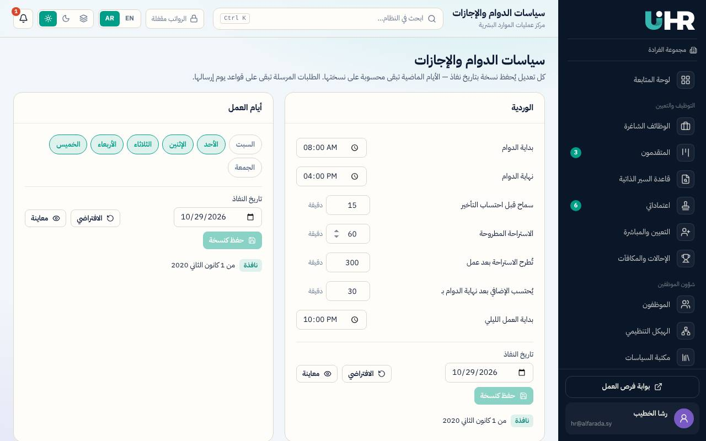
صفحة السياسات: بطاقة لكل سياسة، بتاريخ نفاذ ومعاينة
كل قواعد الدوام والإجازات والكشف والمخالفات والخروج قابلة للتعديل هنا. القيم الافتراضية مأخوذة من سياسة الشركة HR.01-01 ونظام العاملين.
تاريخ النفاذ: لماذا لا يتغير الماضي؟«كل تعديل يُحفظ نسخة بتاريخ نفاذ — الأيام الماضية تبقى محسوبة على نسختها. الطلبات المرسلة تبقى على قواعد يوم إرسالها». تاريخ النفاذ يكون اليوم أو بعده. كل بطاقة تعرض نسخها: «نافذة» (الحالية) و«قادمة» (تبدأ لاحقاً ويمكن حذفها قبل بدئها) و«سابقة». حفظ نسخة بالتاريخ نفسه لنسخة قادمة يعدّلها. زر «الافتراضي» يعيد قيم الشركة الأصلية إلى النموذج قبل الحفظ.
المعاينة قبل الحفظفي بطاقات الوردية والتأخير والإضافي زر «معاينة» يحسب «آخر 14 يوماً لكل الموظفين» بالقيم الحالية والقيم المقترحة جنباً إلى جنب (أيام التأخير، دقائق الحسم، الإضافي، الغياب)، لترى أثر التعديل قبل اعتماده.
الوردية
| الحقل | معناه | الافتراضي |
|---|
| بداية الدوام / نهاية الدوام | ساعات العمل الرسمية. | 09:00 – 17:00 |
| سماح قبل احتساب التأخير | دقائق لا تُحسب تأخيراً بعد بداية الدوام. | 0 دقيقة |
| الاستراحة المطروحة | مدة الاستراحة التي تُطرح من ساعات العمل الفعلي. | 60 دقيقة |
| تُطرح الاستراحة بعد عمل | لا تُطرح الاستراحة إلا إذا عمل الموظف هذه المدة. | 5 ساعات |
| يُحتسب الإضافي بعد نهاية الدوام بـ | البقاء القصير بعد الدوام لا يُعدّ إضافياً. | 30 دقيقة |
| بداية العمل الليلي | ما بعد هذه الساعة يُحسب إضافياً ليلياً بنسبته. | 19:00 |
أيام العمل وجدول الإدارة
«أيام العمل»: الأيام التي يُطلب فيها الدوام — افتراضياً من السبت إلى الخميس، والجمعة «يوم الراحة الأسبوعية». جدول دوام خاص لإدارة: «لإدارة بطبيعة عمل مختلفة (ورديات، دوام مسائي…). بدون نسخة خاصة تتبع الإدارة سياسة الشركة». تختار الإدارة وتحدد ورديتها وأيام عملها بتاريخ نفاذ.
حسم التأخير الصباحي
«الدقيقة بدقيقة × معامل شريحة التأخير. الإعفاء الشهري بمبرر يُطبَّق في كشف الشهر». الجدول الافتراضي:
| الشريحة (دقيقة) | المعامل | مثال |
|---|
| 1 – 15 | × 1 | تأخير 10 دقائق = حسم 10 دقائق |
| 16 – 30 | × 1 | تأخير 20 دقيقة = حسم 20 دقيقة |
| 31 – 60 | × 1.5 | تأخير 40 دقيقة = حسم 60 دقيقة |
| 61 – 120 | × 2 | تأخير 90 دقيقة = حسم 180 دقيقة |
| أكثر من 120 | — | يُعدّ اليوم غياباً («تأخير أكثر من هذا = غياب») |
الإعفاء: «يُعفى التأخير حتى» 15 دقيقة، «عدد مرات الإعفاء بمبرر شهرياً» 3 — أي أول ثلاث مرات تأخير مبرر لا تتجاوز 15 دقيقة في الشهر لا يُحسم منها شيء. الشرائح يجب أن تكون متتالية تبدأ من الدقيقة 1.
الإضافي
| الحقل | معناه | الافتراضي |
|---|
| نسب العمل الإضافي | الزيادة فوق أجر الساعة: نهاري، ليلي، يوم الراحة الأسبوعية، العطلة الرسمية. | 25٪، 50٪، 100٪، 200٪ |
| يُستحق بعد ساعات أسبوعية | في أيام العمل لا يُحسب إضافي إلا لما يتجاوز هذه الساعات في الأسبوع (الأسبوع يبدأ السبت). | 48 ساعة |
| الحد الأقصى اليومي | أقصى إضافي يُحسب في اليوم. | 120 دقيقة |
| بتكليف خطي مسبق (F-04) | لا يُحسب إضافي إلا بتكليف معتمد قبل اليوم، وبحدود دقائق التكليف. | مفعّل |
| أقصى ساعات متتالية | حد ساعات العمل المتواصل. | 10 ساعات |
العطل والراحةالعمل في يوم الراحة أو العطلة الرسمية يُحسب كله إضافياً بنسبته، ولا يخضع لعتبة الـ 48 ساعة.
جهاز الحضور
«تجاهل التمرير المكرر خلال» 10 ثوانٍ، و«ناقص» بلا خروج بعد نهاية الوردية بـ 120 دقيقة، وتسجيل الحضور من الجوال ونطاقه الجغرافي (مشروح في الحضور).
العطل الرسمية
جدول بالعطل لكل سنة: «إضافة عطلة» (التاريخ، عدد الأيام، الاسم بالعربية والإنكليزية)، وزر لإضافة «العطل الثابتة» (ذات التاريخ الثابت في سوريا) للسنة المختارة دفعة واحدة. العطلة «تُحسب كيوم راحة، والعمل فيها إضافي بنسبة العطلة الرسمية». العطل ذات التاريخ المتغير (كالأعياد الدينية) تضاف يدوياً كل سنة.
استحقاق الإجازة السنوية
| الحقل | معناه | الافتراضي |
|---|
| السنة الأولى | أيام الإجازة لمن خدمته أقل من سنوات الخدمة المعيارية. | 14 يوماً، و«السنة الأولى تُحسب نسبةً لأشهر الخدمة» |
| بعد سنوات الخدمة | الاستحقاق المعياري. | 21 يوماً بعد 5 سنوات |
| الأقدمية أو السن | الاستحقاق الأعلى. | 30 يوماً بعد 10 سنوات خدمة أو عند بلوغ سن 50 |
قواعد طلب الإجازة
| القاعدة | معناها | الافتراضي |
|---|
| مهلة التقديم حسب مدة الإجازة | كم يوماً قبل البدء يجب أن يُقدَّم الطلب. | حتى يوم: قبل يومين · حتى 4 أيام: قبل 3 · حتى 7 أيام: قبل 7 · أكثر: قبل 14 يوماً |
| مهلة الإجازة الساعية | إشعار مسبق للساعية. | يوم واحد |
| مستوى الإدارة العليا لما يزيد على | الإجازة الأطول تمر بمستوى ثالث (الإدارة العليا). | 7 أيام |
| الموظف البديل إلزامي | يجب اختيار بديل يغطي العمل. | نعم |
| ملاحظة إلزامية عند تعارض الإجازات في الإدارة | إن تداخلت إجازة مع إجازة زميل في الإدارة، لا يُعتمد إلا بملاحظة من المعتمِد. | نعم |
| الطارئة في السنة / الإبلاغ عن الطارئة خلال | عدد الإجازات الطارئة المسموح، ومهلة الإبلاغ عنها. | 3 مرات، خلال 12 ساعة |
| الإجازة الساعية | أقصى ساعات باليوم، و«ساعات تعادل يوماً من الرصيد». | 5 ساعات، و8 ساعات = يوم |
| غير المدفوعة في السنة | حد الإجازة بلا راتب. | 30 يوماً |
| أقل طول لسبب الرفض | الرفض يحتاج سبباً واضحاً. | 10 أحرف |
| تذكير المعتمِد بعد | تذكير من يتأخر بقراره. | 24 ساعة، ويتكرر |
| مهلة تبرير التأخير/الغياب | المدة المتاحة للموظف لتقديم تبرير. | 48 ساعة |
| إجازة مأجورة أثناء فترة التجربة | هل تُدفع الإجازة خلال التجربة. | لا |
أنواع الإجازات
«الأجر والرصيد والحد والمستند وشروط الخدمة لكل نوع. نوع عليه طلبات قيد الاعتماد لا يُحذف». الأنواع الافتراضية الاثنا عشر:
| النوع | الأجر | الرصيد | الحد للطلب | المستند | شروط أخرى |
|---|
| إجازة إدارية (سنوية) | 100٪ | السنوي | بلا حد | بلا مستند | تطبق مهلة التقديم |
| إجازة طارئة | 100٪ | من السنوية | 3 أيام | اختياري | بلا مهلة؛ 3 مرات بالسنة |
| إجازة ساعية | 100٪ | من السنوية (بالساعات) | 5 ساعات باليوم | بلا مستند | بعد التثبيت فقط |
| إجازة مرضية | 70٪ | رصيد مرضي | بلا حد | إلزامي | بعد التثبيت؛ أيام تقويمية |
| إصابة عمل | 100٪ | بلا رصيد | بلا حد | إلزامي | أيام تقويمية |
| إجازة زواج | 100٪ | بلا رصيد | 7 أيام | إلزامي | بعد 6 أشهر؛ مرة واحدة طوال الخدمة |
| إجازة أمومة | 100٪ | بلا رصيد | 120 يوماً | إلزامي | بعد 6 أشهر؛ أيام تقويمية |
| إجازة أبوة | 100٪ | بلا رصيد | 3 أيام | إلزامي | بعد التثبيت |
| إجازة حج / عمرة | 100٪ | بلا رصيد | 30 يوماً | إلزامي | بعد 60 شهراً؛ مرة واحدة |
| إجازة وفاة | 100٪ | بلا رصيد | 5 أيام | إلزامي | أيام تقويمية |
| إجازة غير مدفوعة | 0٪ (بلا راتب) | غير المدفوعة | 30 يوماً | بلا مستند | تحتاج الإدارة العليا دائماً |
| مهمة عمل | 100٪ | بلا رصيد | بلا حد | بلا مستند | — |
«أيام تقويمية (تشمل العطل)» تعني أن أيام العطل داخل الإجازة تُعدّ منها؛ وغيرها يُعدّ أيام العمل فقط.
قواعد الكشف الشهري والسلفة
| الحقل | معناه | الافتراضي |
|---|
| بدء احتساب الدوام في النظام | تاريخ بدء الاعتماد على النظام؛ الأيام قبله لا تُعدّ غياباً. | يحدد عند التشغيل |
| أيام الشهر للأجر اليومي | الأجر اليومي = الراتب ÷ هذا العدد. | 30 |
| ساعات اليوم لأجر الساعة | أجر الساعة = الأجر اليومي ÷ هذا العدد. | 8 |
| حسم الغياب غير المبرر / المبرر | كم يوم أجر يُحسم عن كل يوم غياب. | يوم واحد / لا حسم |
| أساس التأمينات من الراتب / نسبة التأمينات | حصة العامل من التأمينات الاجتماعية. | 7٪ من 72٪ من الراتب |
| السلفة من المستحق حتى تاريخه / سقف السلفة من الراتب | حدود السلفة. | 50٪ من المستحق، وبحد 50٪ من الراتب |
| عدد السلف بالشهر | | سلفة واحدة |
«المبالغ تقديرية حتى التكامل مع النظام المالي. التغيير يسري على الكشوف غير المغلقة عند إعادة احتسابها». وفي الصفحة نفسها بطاقات قواعد المخالفات وقواعد الخروج، وتُشرح في أجزائها.
21.الإجازات والمسار الموحد للطلبات
يصل إليها: كل موظف (بوابته: «طلباتي») · المدير («اعتماداتي») · الموارد البشرية («الإجازات والتبريرات» /hr/leaves)
كل الطلبات في النظام (إجازات، تبريرات، إضافي، خدمات، سلف، استقالات، جزاءات…) تسير في مسار اعتماد موحد: مستويات بالترتيب تحددها «سلاسل الاعتماد» في الإعدادات. للإجازة افتراضياً: المدير المباشر ← الموارد البشرية، ومستوى ثالث للإدارة العليا إذا زادت الإجازة على 7 أيام أو كان النوع يتطلب ذلك.
تقديم طلب إجازة (الموظف)
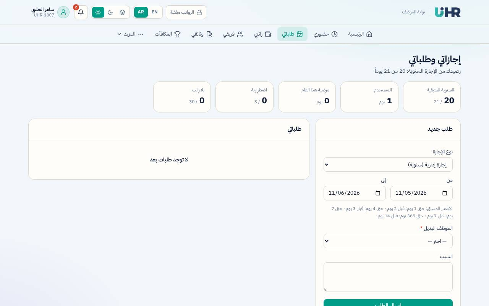
«إجازاتي وطلباتي»: الأرصدة، الطلب الجديد، والطلبات السابقة
في أعلى الصفحة بطاقات الرصيد: السنوية المتبقية، المرضية هذا العام، وغيرها. «طلب جديد» يفتح النموذج:
| الحقل | معناه | ملاحظات |
|---|
| نوع الإجازة | من الأنواع المعرّفة؛ يظهر بجانبه الحد ونسبة الأجر. | الأنواع غير المتاحة لك (لم تُكمل مدة الخدمة، أو استخدمتها سابقاً) يرفضها النظام برسالة واضحة. |
| من / إلى | تاريخ البدء والانتهاء. | يحسب النظام «أيام عمل» تلقائياً، دون العطل (إلا للأنواع التقويمية). |
| عدد الساعات | للإجازة الساعية فقط. | حتى 5 ساعات باليوم. |
| الموظف البديل | زميل يغطي عملك. | إلزامي افتراضياً؛ يصله إشعار عند الاعتماد. |
| السبب | شرح مختصر. | |
| مستند داعم | تقرير طبي، عقد زواج… | «المستند (إلزامي قبل الاعتماد النهائي)» للأنواع التي تتطلبه؛ يمكن إرفاقه لاحقاً بزر «إرفاق» قبل الاعتماد الأخير. |
| اضطرارية | للإجازة الطارئة التي لا تحتمل المهلة. | ضمن حد الطارئة السنوي. |
الفحص الحي قبل الإرسالأثناء ملء النموذج يفحص النظام الطلب فوراً ويعرض: الأخطاء التي تمنع الإرسال (مهلة الإشعار غير كافية: «الإشعار المسبق: حتى N يوم: قبل N يوم»، تجاوز الحد، عدم استيفاء شرط الخدمة)، والتحذيرات التي لا تمنع لكنها تُعرض للمعتمِد (تجاوز الرصيد، تعارض مع إجازة زميل في الإدارة)، والمسار المتوقع للاعتماد. «أنت في فترة التجربة — الإجازة المأجورة بحسب السياسة».
حالات الطلب
بانتظار المدير المباشر←بانتظار الموارد البشرية←بانتظار الإدارة العلياللطويلة فقط←معتمد
مرفوضبسبب واضحملغىمن صاحبه قبل أول قرار
- الإلغاء: يستطيع الموظف إلغاء طلبه فقط قبل أن يتخذ أي معتمِد قراراً فيه.
- عند الاعتماد النهائي: يُخصم من الرصيد، وتظهر أيام الإجازة في الحضور كإجازة، ويُشعَر البديل.
- المدير غير موجود: إن لم يكن للموظف مدير مباشر يُتخطى مستوى المدير تلقائياً.
اتخاذ القرار (المعتمِد)
«اعتماداتي»: «الطلبات التي تنتظر قرارك. الرفض يحتاج سبباً، وكل قرار بتأكيد ثانٍ».
- لكل طلب: الموظف، النوع، الفترة، البديل، التحذيرات، ومسار الاعتماد بخطواته.
- اعتماد: يحتاج تأكيداً ثانياً. إذا تجاوز الطلب الرصيد أو تعارض مع إجازة زميل تظهر «ملاحظة إلزامية — تتحمل بها مسؤولية تجاوز الرصيد أو التعارض».
- رفض: يحتاج سبباً (10 أحرف على الأقل)، مع أسباب جاهزة مثل «ضغط عمل في هذه الفترة» و«لا يوجد بديل مناسب» و«المستندات غير كافية».
- المستند الإلزامي يجب أن يُرفق قبل المستوى الأخير وإلا يظهر «المستند المطلوب لم يُرفق بعد».
- كل معتمِد يرى ويقرر في مستواه فقط؛ الموارد البشرية ترى كل الطلبات لكنها لا تقرر نيابة عن المدير.
النائب والتذكير
- «نائبي أثناء إجازتي» (في «اعتماداتي» للمدير): زميل «يستلم طلبات فريقك حين تكون في إجازة». بدون نائب «تتخطاك الطلبات للموارد البشرية». ويظهر القرار باسم النائب «نائباً عن» المدير.
- يمكن تحديد نائب لكل مستوى في «سلاسل الاعتماد» أيضاً.
- التذكير: إذا بقي طلب عند معتمِد أكثر من 24 ساعة (افتراضياً) يصله تذكير، ويتكرر.
تبرير التأخير والغياب
في «حضوري» تظهر الأيام التي «بحاجة لتبرير»: تأخير، غياب، أو «يوم ناقص — بلا خروج». «يُقدَّم تبرير التأخير أو الغياب خلال 48 ساعة من نهاية اليوم»، وبعدها يظهر «انتهت المهلة».
- اضغط «تبرير» بجانب اليوم.
- اكتب السبب (5 أحرف على الأقل) وأرفق مستنداً داعماً إن وجد.
- اضغط «إرسال»: «أُرسل التبرير لمديرك المباشر»، ثم يمر على الموارد البشرية للتأكيد.
- عند القبول يصبح اليوم «مبرر» ولا يُحسم تأخيره، ويدخل في الإعفاء الشهري.
الموارد البشرية ترى كل التبريرات في تبويب «تبريرات التأخير والغياب» في صفحة الإجازات.
التكليف بالعمل الإضافي (F-04)
الإضافي لا يُحسب إلا بتكليف مسبق (حسب السياسة). المدير يملأ «تكليف بعمل إضافي» في «اعتماداتي»: الموظف من فريقه، التاريخ (اليوم التالي فما بعد)، «المدة (دقيقة)» حتى الحد اليومي (120 دقيقة)، و«المهمة / السبب». يُرسل التكليف للموارد البشرية للاعتماد، ويظهر في «تكليفاتي بالإضافي». لا يمكن تكرار تكليف للموظف نفسه في اليوم نفسه. الإضافي المحسوب في ذلك اليوم لا يتجاوز دقائق التكليف المعتمد.
صفحة الموارد البشرية «الإجازات والتبريرات»
«كل طلب يمر على المدير المباشر ثم الموارد البشرية (والإدارة العليا للإجازات الطويلة). يُحدّث الرصيد تلقائياً عند الاعتماد النهائي». التبويبات: بانتظار الاعتماد، تبريرات التأخير والغياب، التكليف بالإضافي، طلبات الخدمات، كل الطلبات؛ مع البحث بالاسم أو الرقم.
مكوّنات رصيد الإجازة
| المكوّن | معناه |
|---|
| الاستحقاق | أيام السنة بحسب مدة الخدمة والسن (انظر استحقاق الإجازة السنوية). |
| المستخدم | ما اعتُمد من إجازات خُصمت من الرصيد. |
| المحجوز | طلبات قيد الاعتماد (تُحجز حتى القرار). |
| المتبقي | الاستحقاق − المستخدم − المحجوز. |
| المرضي، الطارئة، غير المدفوعة | ما استُخدم من كل منها هذا العام مقابل حدّه. |
22.طلبات الخدمات: الشهادات والسلفة وتحديث البيانات
يصل إليها: كل موظف («خدماتي» في بوابته) · الموارد البشرية (تبويب «طلبات الخدمات» واعتماداتها)
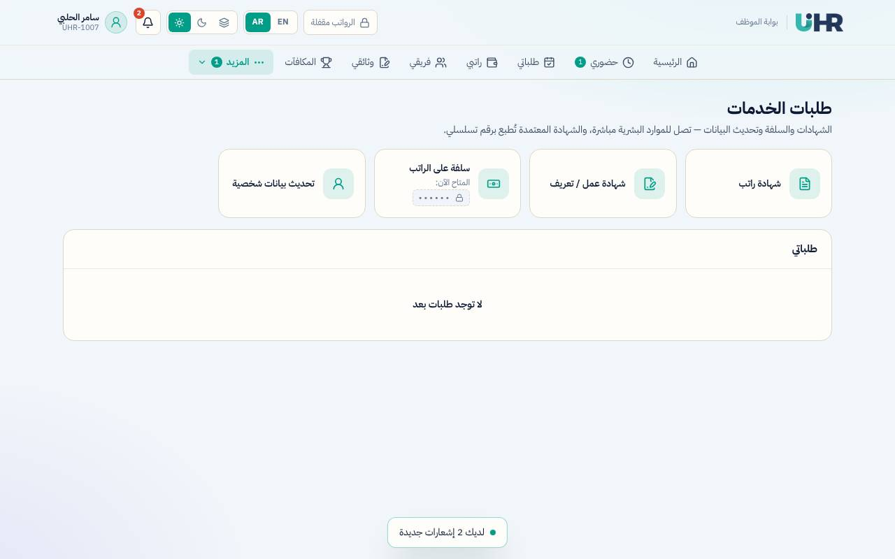
«طلبات الخدمات»: أربع خدمات وقائمة الطلبات
«الشهادات والسلفة وتحديث البيانات — تصل للموارد البشرية مباشرة، والشهادة المعتمدة تُطبع برقم تسلسلي». لا يُسمح إلا بطلب واحد قيد التنفيذ من كل نوع («لديك طلب من هذا النوع قيد التنفيذ»).
| الخدمة | ما يُطلب | قواعد |
|---|
| شهادة راتب | بيانات الجهة الطالبة: اسم الجهة (مثلاً: المصرف التجاري السوري)، رقم السجل التجاري، البريد الرسمي للجهة، هاتف الجهة، وسؤال «أوافق على إبلاغ هذه الجهة عند انتهاء خدمتي». | «بيانات الجهة الطالبة إلزامية — الطلب الناقص لا يُرسل». الشهادة تحمل الراتب، فهي نموذج حساس: طباعتها تُسجَّل، ومبلغها لا يظهر إلا بعد التحقق. |
| شهادة عمل / تعريف | «الجهة الموجّه إليها (اختياري)»، وإلا تُكتب «إلى من يهمه الأمر». | بلا راتب. |
| سلفة على الراتب | المبلغ، مع عرض «المتاح الآن». | المتاح = الأقل من (50٪ من المستحق حتى اليوم) و(50٪ من الراتب)، مطروحاً منه سلف هذا الشهر والطلبات المعلقة؛ سلفة واحدة بالشهر. تُخصم من كشف الشهر (أو الشهر التالي إن كان كشف الشهر مغلقاً). |
| تحديث بيانات شخصية | «ما المطلوب تحديثه» (5 أحرف على الأقل)، و«الجوال الجديد (اختياري)». | عند الاعتماد يُحدَّث الجوال تلقائياً ويُكتب في السجل. |
بعد الاعتماد
- الشهادة تأخذ رقماً تسلسلياً بالشكل CRT-السنة-الرقم، ويظهر زر «عرض الشهادة» للطباعة بشعار الشركة، مع بيانات الجهة واسم المُصدِر وختم الموارد البشرية.
- يمكن إلغاء الطلب قبل أول قرار («إلغاء الطلب»).
- إذا تغيّر الرصيد قبل الاعتماد وأصبحت السلفة أكبر من المتاح، يرفض النظام اعتمادها: «تجاوز الطلب رصيد السلفة المتاح الآن».
23.الكشف الشهري للدوام والمستحقات
يصل إليها: الموارد البشريةالمالية — /hr/payroll؛ والموظف يرى «كشفي الشهري» في بوابته
«يُحتسب من الحضور والإجازات والتأخير والإضافي المعتمد، ويُعتمد ثم يُغلق. المبالغ تقديرية حتى التكامل مع النظام المالي».
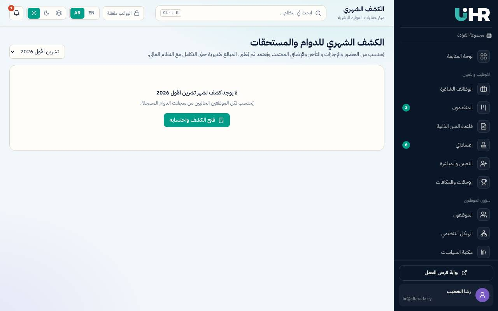
قبل فتح كشف الشهر: «فتح الكشف واحتسابه»
مراحل الكشف
مسودة←محتسب«إعادة الاحتساب» متاحة←معتمد←مُغلقلا تعديل بعده
- اختر الشهر ثم «فتح الكشف واحتسابه» — «يُحتسب لكل الموظفين الحاليين من سجلات الدوام المسجلة». لا يُفتح كشف لشهر لم يأتِ، وللشهر الواحد كشف واحد.
- راجع الصفوف. بعد أي تصحيح حضور أو اعتماد إجازة اضغط «إعادة الاحتساب».
- «اعتماد الكشف» (بتأكيد ثانٍ).
- «إغلاق الكشف»: «بعد الإغلاق لا تعديل، وتُخصم السلف ويُبلغ كل موظف بكشفه».
ما يمنع الإغلاق
- الشهر لم ينته بعد.
- «أيام ناقصة بلا خروج — تمنع الإغلاق»: تظهر قائمتها مع زر «تصحيح» ينقلك إلى الحضور. يجب تصحيحها أو تبريرها أولاً.
- تغيّرت البيانات بعد الاحتساب: أعد الاحتساب قبل الإغلاق.
«إرجاع للاحتساب» يعيد كشفاً معتمداً إلى مرحلة الاحتساب، ويحتاج سبباً (10 أحرف على الأقل).
أعمدة الكشف ومعانيها
| العمود | معناه | كيف يُحسب |
|---|
| أيام العمل / الحضور | أيام العمل المطلوبة في الشهر، والأيام التي حضرها. | من أيام العمل في السياسة، دون العطل ودون ما قبل تاريخ المباشرة أو بدء الاحتساب. |
| غياب غير مبرر / غياب مبرر | أيام بلا حضور ولا إجازة. | غير المبرر يُحسم (افتراضياً يوم أجر لكل يوم)، والمبرر بحسب السياسة (افتراضياً لا حسم). |
| أيام ناقصة | أيام بدخول دون خروج. | تمنع الإغلاق حتى تُعالج. |
| إجازات (منها بلا أجر) | أيام الإجازات المعتمدة، وكم منها غير مدفوع. | الجزء غير المدفوع من نسبة أجر النوع (مثل المرضية 70٪) يُحسم. |
| التأخير والحسم | دقائق التأخير ودقائق الحسم بعد تطبيق الشرائح، و«معفى بمبرر». | جدول حسم التأخير والإعفاء الشهري. |
| الإضافي المسجل / المكلّف / المعتمد | الدقائق المسجلة فعلاً، والمكلّف بها، والمعتمدة للصرف. | المعتمد = الأقل منها ضمن عتبة 48 ساعة والحد اليومي، وأيام الراحة والعطل بنسبتها. |
| الأجر اليومي / الساعة | أساس الحسابات. | الراتب ÷ 30، ثم ÷ 8. |
| الراتب | الراتب الأساسي (بالنسبة لأيام الخدمة إن باشر خلال الشهر). | |
| أجر الإضافي | مقابل الإضافي المعتمد. | أجر الساعة × (1 + النسبة). |
| مكافأة التقييم | مكافآت الأداء المعتمدة على هذا الشهر. | من وحدة الأداء. |
| حسم التأخير / حسم الغياب / إجازات بلا أجر | الاقتطاعات المقابلة. | |
| جزاءات المخالفات | أيام الحسم المقررة على الموظف في الشهر. | أجر اليوم × الأيام، ضمن السقف الشهري (افتراضياً 5 أيام). |
| التأمينات | حصة العامل من التأمينات الاجتماعية. | 7٪ من 72٪ من الراتب (افتراضياً). |
| السلف | السلف المستحقة الخصم هذا الشهر. | تُعلَّم «مخصومة» عند الإغلاق. |
| الصافي | المستحق بعد كل ما سبق. | الراتب + الإضافي + المكافآت − الاقتطاعات. |
الضغط على صف يفتح لوحة تفاصيله. المبالغ محمية: تظهر بعد التحقق من الهوية وبإذن الاطلاع على رواتب الآخرين. «تصدير Excel» ينزّل الكشف ويُسجَّل.
كشفي الشهري (الموظف)
في بوابة الموظف «راتبي»: الكشوف المغلقة لكل شهر، وتقدير للشهر الحالي محسوب «حتى أمس» يتغير يومياً: الراتب، المستحقات (الإضافي، مكافأة التقييم)، الاقتطاعات (الغياب، التأخير، الإجازات بلا أجر، الجزاءات، التأمينات الاجتماعية (حصة العامل)، السلفة)، والصافي، وموعد الصرف. إن وجدت أيام ناقصة تظهر رسالة «يوم ناقص بلا خروج — راجع الموارد البشرية». «كشف تقديري محسوب من بيانات الحضور؛ الكشف الرسمي يصدر عن الإدارة المالية». المبالغ تظهر بعد التحقق من هويتك، وزر «طباعة» للنسخة الورقية.
24.العهد
يصل إليها: الموارد البشريةمن يملك صلاحية «العهد» — والموظف يرى عهده ويوقّع استلامها من «وثائقي»
«العهدة» هي كل أصل تملكه الشركة ويُسلَّم لموظف ليعمل به: حاسوب، جوال، مفتاح، بطاقة دخول، مركبة… سجل العهد يجيب في أي لحظة عن ثلاثة أسئلة: ما الذي تملكه الشركة؟ أين هو الآن؟ ومن المسؤول عنه؟ الصفحة في /hr/custody.

سجل العهد: الملخص والفلاتر والقائمة
حالات الأصل
في المستودعمتاح للتسليم←
بانتظار التوقيعسُلّم ولم يوقّع الموظف←
مسلّمة وموقّعةبعهدة الموظف←
في المستودعبعد الاسترجاع
وهناك حالتان خارج هذا المسار: في الصيانة (الأصل لا يُسلَّم حتى يعود صالحاً) ومستبعد (خرج من الخدمة نهائياً ويبقى في السجل للتاريخ).
الملخص والفلاتر
| العنصر | معناه | ملاحظات |
|---|
| البحث | «بحث بالرمز أو الاسم أو الحائز»: يبحث في رمز الأصل واسمه ورقمه التسلسلي واسم الموظف الذي يحمله. | الفلاتر تُحفظ في رابط الصفحة، فيمكن مشاركة الرابط بنفس النتيجة. |
| الحالة | كل الحالات، مسلّمة، بانتظار التوقيع، في المستودع، في الصيانة، مستبعد. | |
| الفئة | نوع الأصل (أجهزة، أثاث، مركبات…). | الفئات من إعدادات الشركة. |
| تصدير Excel | ينزّل السجل بالفلاتر الحالية. | يحتاج صلاحية التصدير، ويُسجَّل في سجل التدقيق. |
من لا يملك نطاق «الكل» في العهد (مثل المدير) يرى فقط عهد الموظفين الذين في نطاقه (فريقه).
إضافة أصل وبياناته
| الحقل | معناه | ملاحظات |
|---|
| الرمز | رقم الأصل في الشركة، مثل AST-0075. | يُعطى تلقائياً ومتسلسلاً عند الإضافة، والبادئة من «بيانات الشركة». |
| اسم الأصل / الاسم بالإنكليزية | وصف واضح للأصل، مثل «حاسوب محمول Dell Latitude». | |
| الفئة | نوع الأصل. | إلزامي. |
| الرقم التسلسلي | الرقم المطبوع من الشركة المصنّعة. | لا يتكرر في الشركة؛ النظام يرفض رقماً مستخدماً لأصل آخر. |
| القيمة التقديرية ($) | قيمة الأصل بالدولار. | تُقتطع من مخالصة الموظف إن غادر دون إعادته. |
| تاريخ الشراء | متى اشترته الشركة. | اختياري. |
| الحالة الفنية | سليمة، مقبولة، تالفة. | تُحدَّث عند كل استرجاع. |
| ملاحظات | أي معلومة إضافية (مواصفات، ملحقات). | |
تسليم عهدة لموظف
- افتح الأصل (يجب أن يكون «في المستودع») واضغط «تسليم».
- اختر «الموظف المستلم» وأضف «ملاحظة (اختيارية)» إن أردت.
- تصبح الحالة «بانتظار التوقيع»، ويصل للموظف إشعار، ويظهر له سند الاستلام في «وثائقي».
- حين يوقّع الموظف إلكترونياً تصبح الحالة «مسلّمة وموقّعة»، ويُسجَّل ذلك في ملفه وفي سجل حركة الأصل.
إن سُلّم الأصل خطأً قبل التوقيع، استخدم «إلغاء التسليم» فيعود للمستودع دون أن يُسجَّل استلام.
استرجاع عهدة
- افتح الأصل المسلّم واضغط «استرجاع».
- حدّد «حالة الأصل عند الاستلام»: سليمة أو مقبولة أو تالفة (إلزامي)، ويمكن إضافة ملاحظة.
- السليم والمقبول يعود «في المستودع»، والتالف يُحال تلقائياً «إلى الصيانة».
الصيانة والاستبعاد
- إلى الصيانة / عاد للمستودع: ينقل الأصل بين الصيانة والمستودع حسب حاله.
- استبعاد الأصل: يخرجه من الخدمة نهائياً (تلف لا يُصلح، فقدان، بيع). يحتاج سبباً مكتوباً وتأكيداً ثانياً، ولا يُحذف من السجل.
سجل الحركة
في درج الأصل يظهر «سجل الحركة»: كل ما حدث له بالترتيب — أُضيف للمستودع، سُلّم، وقّع الموظف الاستلام، أُعيد، أُحيل للصيانة، استُبعد، عُدّلت بياناته — مع التاريخ ومن قام به والحالة والملاحظة. هذا السجل لا يُعدَّل ولا يُحذف.
الاستيراد من Excel
لإدخال عهد كثيرة دفعة واحدة (مثلاً عند بدء العمل بالنظام):
- اضغط «استيراد من Excel» ثم «نزّل القالب». في القالب ورقة للأصول وورقة لرموز الفئات والحالات.
- املأه واحفظه: الاسم، رمز الفئة، الرقم التسلسلي، القيمة، تاريخ الشراء، الحالة الفنية، ورقم الموظف الحائز إن كان الأصل بعهدة أحد. يمكن ترك الرمز فارغاً ليُعطى تلقائياً.
- ارفعه وراجع المعاينة: يظهر كل سطر وحالته («جاهز» أو سبب الخطأ: فئة غير معروفة، رقم تسلسلي مكرر في الملف أو في النظام، موظف غير موجود…).
- اضغط «استيراد». الاستيراد جزئي: تُستورد الأسطر السليمة، والأسطر الخاطئة تُستثنى وتظهر في تقرير الأخطاء الذي تنزّله وتصحّحه ثم تعيد رفعه وحده.
خيار «العهد المسلّمة موقّعة ورقياً»
إن كان الموظفون قد وقّعوا سندات استلام ورقية من قبل، فعّل هذا الخيار فتُسجَّل عهدهم «مسلّمة وموقّعة» مباشرة. وإن لم تفعّله تُسجَّل «بانتظار التوقيع» ويصل لكل حائز طلب توقيع سند الاستلام في «وثائقي».
25.المخالفات والجزاءات
يصل إليها: الموارد البشريةالمدير المباشر (لفريقه)المدير العام (للاعتماد)الموظف (لحالاته)
تطبّق هذه الوحدة لائحة الجزاءات وفق قانون العمل وجدول المخالفات المعتمد في الشركة: لكل مخالفة جزاء محدد يتدرج مع تكرارها، ولا يُوقَّع جزاء قبل سماع أقوال العامل وتسجيل محضر التحقيق، ولا بعد انقضاء مهلة القرار. الصفحة للموارد البشرية /hr/discipline، وللموظف «إنذاراتي وشكاواي» /me/discipline.
دليل المخالفات
يحتوي الدليل مخالفات الشركة مقسمة إلى ثلاث مجموعات: مواعيد العمل (التأخر، الغياب، الخروج المبكر…)، نظام العمل (الإهمال، مخالفة التعليمات…)، سلوك العامل (الإساءة، السلوك غير اللائق…). لكل مخالفة رقم ضمن مجموعتها، ومادة القانون التي تستند إليها، وجزاء لكل مرة: أول مرة، ثاني مرة، ثالث مرة، رابع مرة (أو جزاء واحد). يُعدَّل الدليل من /hr/settings/violations، ويمكن إرجاعه إلى جدول الشركة الأصلي بزر القيم الافتراضية.
| نوع الجزاء | معناه | ملاحظات |
|---|
| تنبيه | لفت نظر للموظف. | أخف الجزاءات. |
| إنذار كتابي | إنذار رسمي مكتوب (النموذج F-01). | يوقّع الموظف باستلامه. |
| حسم أجر | حسم ربع يوم، نصف يوم، يوم، يومين… من الأجر. | يدخل الكشف الشهري ضمن سقف الحسم الشهري. |
| تأخير موعد استحقاق علاوة الترفيع حتى سنة | تأجيل العلاوة الدورية. | يحتاج اعتماد المدير العام. |
| الحرمان من علاوة الترفيع الدوري | إسقاط العلاوة الدورية. | يحتاج اعتماد المدير العام. |
| الفصل من الخدمة وفق أحكام القانون | إنهاء الخدمة. | يحتاج اعتماد المدير العام، ثم تُفتح إجراءات إنهاء العقد F-03. |
| الغرامة المحددة بالمرسوم 62 لعام 2009 | غرامة قانونية محددة. | |
| يُمنع من الدخول ويُعتبر غائباً | للتأخر ساعة أو أكثر مثلاً. | |
بعض مخالفات مواعيد العمل مربوطة بالحضور (التأخر حتى 15 دقيقة، حتى 30، حتى 60، أكثر من ساعة، الغياب، الخروج المبكر)، فيقترحها النظام تلقائياً من سجل الدوام.
دورة حياة الحالة
بانتظار التحقيقفُتحت الحالة←
بانتظار القرارسُجّل المحضر←
بانتظار المدير العامإن تجاوز صلاحية HR←
صدر القراروبانتظار إقرار الموظف
ونهايتان أخريان: حُفظت بلا جزاء (لم تثبت المخالفة أو قُبل العذر — بسبب مكتوب)، وانقضت المهلة (مرّت مهلة القرار دون جزاء، فتُغلق تلقائياً).
تبويبات الصفحة
| التبويب | ما يعرضه | ملاحظات |
|---|
| الحالات المفتوحة | الحالات التي لم يصدر قرارها، مع عدد الأيام المتبقية للمهلة. | المهلة تظهر بالأحمر حين يبقى 3 أيام أو أقل. |
| اقتراحات الحضور | موظفون تجاوزوا حد التأخر أو الغياب أو الخروج المبكر هذا الشهر، مع الأيام والمخالفة المقترحة ودرجتها. | «فتح حالة» يفتحها مباشرة. لا يتكرر الاقتراح إن فُتحت حالة لنفس المخالفة هذا الشهر. |
| القرارات | الحالات التي صدر قرارها أو حُفظت. | |
| السجل الكامل | كل الحالات. | |
| الشكاوى | شكاوى الموظفين F-02. | للموارد البشرية بنطاق «الكل» فقط؛ المديرون لا يرونها. |
فتح حالة
- اضغط «فتح حالة» (أو «فتح الحالة» من اقتراحات الحضور).
- اختر الموظف، و«المخالفة من الدليل»، و«تاريخ المخالفة / الاكتشاف»، واكتب «الوصف والوقائع».
- يحسب النظام «الدرجة والجزاء المقترح»: كم مرة ارتكب الموظف نفس المخالفة وصدر فيها قرار خلال مدة احتساب التكرار (6 أشهر افتراضياً)، فيظهر جزاء المرة الحالية.
- تُفتح الحالة ويُبلَّغ الموظف بإشعار، وتظهر له في بوابته ليكتب «أقوالك ودفاعك».
المدير المباشر يمكنه فتح حالة لأحد أفراد فريقه من بوابته («مخالفات فريقي»)، فيصل للموارد البشرية إشعار بذلك.
الأقوال والتحقيق
- أقوال الموظف: يكتبها الموظف من بوابته قبل صدور القرار، ويمكنه تحديثها. تظهر للموارد البشرية في الحالة.
- محضر التحقيق (إلزامي قبل القرار): «تسجيل محضر التحقيق» يحفظ: التاريخ، «أقوال الموظف ودفاعه في التحقيق»، «الشهود»، «ملاحظات المحقق»، وهل «أُبلغ التنظيم النقابي (يحق له حضور التحقيق)». يمكن «تعديل المحضر» لاحقاً قبل القرار.
لا جزاء قبل سماع أقوال العامل وتسجيل المحضر — زر القرار لا يعمل قبل تسجيل المحضر.
القرار
- اضغط «اتخاذ القرار». يظهر الجزاء المقترح حسب الدرجة.
- اختر الجزاء. لا يتجاوز الجزاء درجة المخالفة: يمكن اختيار جزاء مساوٍ أو أخف، والأخف يحتاج «سبب التخفيف» (10 أحرف على الأقل).
- تأكيد ثانٍ («تأكيد الجزاء»). إن كان الجزاء ضمن صلاحية الموارد البشرية يصدر فوراً ويُبلَّغ الموظف؛ وإن تجاوزها (حسم أكثر من حد صلاحية HR — 3 أيام افتراضياً — أو تأخير/حرمان من الترفيع أو فصل) يُرسل «للمدير العام للموافقة» عبر صفحة «اعتماداتي».
- إن رفض المدير العام تعود الحالة إلى «بانتظار القرار» مع إشعار للموارد البشرية.
أو «حفظ بلا جزاء» مع «سبب الحفظ»، فتُغلق الحالة «حُفظت بلا جزاء».
قواعد الحسم والمهلة (قابلة للتعديل)
تُضبط في /hr/settings/policies بطاقة «قواعد المخالفات»، بتاريخ نفاذ:
| القاعدة | معناها | الافتراضي |
|---|
| سقف الحسم بالشهر | أقصى أيام أجر تُحسم من الموظف بالجزاءات في شهر واحد. ما يزيد يُخفَّض ويظهر «خُفّض لسقف الحسم الشهري». | 5 أيام |
| مهلة القرار من اكتشاف المخالفة | بعدها لا يجوز الجزاء، وتُغلق الحالة «انقضت المهلة». | 15 يوماً |
| مدة احتساب التكرار | المخالفة نفسها خلال هذه المدة تُعد تكراراً وترفع الدرجة. | 6 أشهر |
| صلاحية الموارد البشرية حتى حسم | ما فوقها يحتاج المدير العام. | 3 أيام |
| الاقتراح الآلي من الحضور خلال الشهر | عدد مرات التأخر غير المبرر، وأيام الغياب غير المبرر، ومرات الخروج المبكر التي يبدأ عندها الاقتراح. | 3 · 1 · 2 |
أيام الحسم تظهر في «الكشف الشهري» للشهر المحدد في القرار، ويُحسب مبلغها بأجر اليوم.
الإنذار الكتابي F-01 والإقرار بالاستلام
بعد صدور القرار تُطبع وثيقة «الإنذار الكتابي F-01» من الحالة، وتحتوي بيانات الموظف ومنصبه وقسمه وتاريخ المخالفة والأسباب والجزاء، و«ملاحظة: نسخة إلى ملف الموظف». ويصل للموظف طلب «إقرار استلام الموظف — التوقيع» في بوابته، فيوقّع إلكترونياً وتصبح الحالة «أقرّ الموظف بالاستلام». قبل ذلك تظهر «بانتظار إقرار الموظف».
الشكاوى F-02
- الموظف يقدّم «شكوى جديدة» من بوابته: الموضوع، ووصف الشكوى، و«بحق (اختياري)».
- الشكوى سرية: تظهر للموظف عبارة «سرية — لا يراها مديرك»، والإشعار الذي يصل للموارد البشرية لا يحمل أسماء، والمديرون لا يرون تبويب الشكاوى.
- الحالات: مستلمة ← قيد الدراسة ← مغلقة. الإغلاق يكون بـ«الرد المكتوب» الذي يصل للموظف.
- تُطبع على «نموذج شكوى موظف» F-02.
26.الاستقالات وإنهاء الخدمة
يصل إليها: الموظف (طلب الاستقالة)المدير المباشرالموارد البشريةالمدير العامجهات براءة الذمة
تتبع هذه الوحدة إجراء الشركة HR.01-03: من طلب الاستقالة أو قرار إنهاء العقد، مروراً بالاعتمادات والمقابلة وتسليم المهام والعهدة، حتى إبراء الذمة والمخالصة النهائية. صفحة الموارد البشرية /hr/offboarding، وصفحة الموظف «الاستقالة» /me/resignation.

قائمة الطلبات وتفاصيل الطلب المختار
حالات الطلب
بانتظار المدير المباشر←
بانتظار الموارد البشرية←
بانتظار المدير العام←
إجراءات الخروج←
انتهت الخدمة
ونهايتان أخريان: مرفوض (يعود الموظف إلى حالته السابقة) ومسحوبة للاستقالة أو ملغى لإنهاء العقد. ترتيب المستويات هو سلسلة «الاستقالة» أو «إنهاء العقد» في إعدادات سلاسل الاعتماد (افتراضياً: المدير المباشر ← الموارد البشرية ← المدير العام)، وتُتخذ القرارات من «اعتماداتي».
طلب الاستقالة F-02 (من الموظف)
| العنصر | معناه | ملاحظات |
|---|
| آخر يوم عمل | التاريخ الذي يريد الموظف أن تنتهي فيه خدمته. | اليوم أو بعده. إن كان قبل نهاية مهلة الإخطار يظهر تنبيه. |
| أسباب الاستقالة | اختيار واحد أو أكثر: فرصة عمل أخرى، السفر، ظروف عائلية أو شخصية، أسباب صحية أو دراسية، الراتب أو شروط العمل، أسباب أخرى. | «أسباب أخرى» تحتاج كتابة «ما هي الأسباب الأخرى». القائمة قابلة للتعديل. |
| نص الطلب | نص الاستقالة الرسمي. | يُطبع على النموذج HR.01-03-F-02. |
| استبيان الاستقالة (اختياري) | أسئلة تساعد الشركة على التحسين: لماذا تترك العمل؟ ما الذي كان سيجعلك تبقى؟ ما أكثر وأقل ما أحببته؟ تقييم المشرف وبيئة العمل والتدريب… | لا يراه المدير المباشر. |
مهلة الإخطار
تبدأ من تاريخ التقديم، وهي 60 يوماً افتراضياً. إن ترك الموظف العمل قبل نهايتها دون إعفاء يُقتطع «بدل الإشعار» من مخالصته (شهران من الراتب افتراضياً). لا يمكن تقديم طلب خروج ثانٍ وهناك طلب مفتوح. عند التقديم تصبح حالة الموظف «مستقيل — فترة إخطار».
إنهاء العقد F-03 (من الموارد البشرية أو المدير)
- نوع الإنهاء من قائمة أسباب انتهاء الخدمة: فصل من العمل، إنهاء عقد ونقله لشركة أخرى، انتهاء العقد المحدد المدة، الاتفاق بين الطرفين، خلال فترة التجربة، العجز عن العمل، التقاعد، الوفاة، إلغاء الإقامة، التحرش، القوة القاهرة.
- الفصل يحتاج «أسباب الفصل»: ضعف الأداء، مخالفة الأنظمة الداخلية، التصرف بطريقة غير احترافية، عدم الالتزام بالدوام، أسباب أخرى (بكتابتها).
- أهلية إعادة التعيين: «مؤهل للتعيين مرة أخرى» أو لا، وعدم الأهلية يحتاج «سبب عدم الأهلية».
- المدير المباشر يمكنه رفعه لفريقه فقط. وحين ترفعه الموارد البشرية نفسها تُتخطى مستوياتها في السلسلة.
مقابلة الاستقالة (إلزامية قبل قرار الموارد البشرية)
«مقابلة الاستقالة وتأكيد الأسباب»: يسجل مسؤول الموارد البشرية «الأسباب المؤكدة» بعد الحديث مع الموظف، و«محاولة الاحتفاظ بالموظف»، و«ملاحظات المقابلة»، و«التوصية». لا يمكن اعتماد مستوى الموارد البشرية قبل حفظ المقابلة.
عند الاعتماد النهائي
- ينتقل الطلب إلى «إجراءات الخروج».
- يصل لمدير النظام إشعار بآخر يوم عمل (لتوقيف الحسابات)، وللموارد البشرية إشعار.
- تُجهَّز «إشعارات الجهات الخارجية» لمن وافق الموظف على إبلاغهم.
الإعفاء من فترة الإخطار
«إعفاء من فترة الإخطار» (للمدير المباشر أو الموارد البشرية): يُكتب «سبب الإعفاء»، ويمكن تحديد آخر يوم عمل أبكر. عندها لا يُقتطع بدل الإشعار، ويُبلَّغ الموظف.
الرجوع عن الاستقالة
- قبل أي قرار: يسحبها الموظف فوراً فتصبح «مسحوبة».
- بعد أن بدأ الاعتماد: يقدّم «طلب خطي بالرجوع»، فتدرسه الموارد البشرية وتقرر «قبول الرجوع» أو «رفض الرجوع» بملاحظة، ويُبلَّغ الموظف.
تسليم المهام F-05
جدول بالمهام التي بين يدي الموظف (حتى 20 مهمة)، يُدخله الموظف المستقيل (أو الموارد البشرية) ويسمّي المستلم. لكل مهمة: الحالة (منجز، قيد التنفيذ، مؤجل)، الملفات ونوعها (ورقي، إلكتروني)، المتبقي، ومكان الحفظ / الرابط.
تعهد المسلِّمالموظف←
إقرار المستلمالزميل←
مصادقة المدير←
مصادقة الموارد البشرية
التواقيع الأربعة بالترتيب، وأي تعديل على الجدول يعيد التواقيع من البداية. المستلم يجد المهام في «مهام تستلمها من زملاء».
تسليم العهدة وبراءة الذمة F-07 ← F-04
«تسليم العهدة F-07» مقسم إلى جهات، لكل جهة مسؤول يؤشر بنودها (تم / لا يوجد / يوجد — بالمبلغ) ويوقّع:
| الجهة | بنودها الافتراضية | ملاحظات |
|---|
| إدارة الموظف | تسليم المهام حسب F-05، الأختام. | بند تسليم المهام يُحسب تلقائياً من F-05. |
| تقانة المعلومات | استلام الأجهزة وحالتها، توقيف الحسابات، نسخ البيانات. | يوقّعها مدير النظام. |
| القانوني / التنفيذي | التفويضات والوكالات. | |
| الشؤون الإدارية | كل الأصول من سجل العهد، خط الجوال، خط الإنترنت، المركبة ومستنداتها، المفاتيح. | بند الأصول يُحسب تلقائياً من سجل العهد ويعرض ما لم يُسترجع. |
| المالية | سلف العمل، سلف شخصية، قروض، كفالة موظف آخر. | بنود بمبلغ يُقتطع في المخالصة. |
| الموارد البشرية | الإجازات المستحقة والمستخدمة والمتبقية، بطاقات التأمين الصحي، البطاقة التعريفية… | بند الإجازات يُحسب تلقائياً من الرصيد. |
حين توقّع كل الجهات يصدر رقم «براءة الذمة F-04» تلقائياً، وتُطبع «إلى من يهمه الأمر». الجهات وبنودها قابلة للتعديل من /hr/settings/exit.
مقابلة الخروج
تُجرى «في آخر يوم عمل أو الذي قبله، بدون حضور المدير»: إجابات أسئلة المقابلة، «تقييم الموظف لتجربة العمل (1–5)»، هل «يرغب بالعودة مستقبلاً»، «مؤهل لإعادة التعيين»، «رُوجعت شروط عدم المنافسة والسرية»، «وُضّحت للموظف حقوقه القانونية». إلزامية لإغلاق الاستقالة.
المخالصة النهائية F-33 (تقديرية)
| البند | كيف يُحسب | ملاحظات |
|---|
| الأجر اليومي | الراتب ÷ أيام الشهر (30 افتراضياً). | |
| أجر الشهر الأخير | أيام الشهر الأخير حتى آخر يوم عمل × الأجر اليومي. | من تاريخ المباشرة إن بدأ في نفس الشهر. |
| بدل رصيد الإجازات | الأيام المتبقية في الرصيد × الأجر اليومي. | |
| إعانة الوفاة | عند انتهاء الخدمة بالوفاة: راتب شهرين (افتراضياً) + بقية الشهر. | |
| اقتطاع عهد غير مسترجعة | قيمة الأصول التي ما زالت بعهدته. | (−) |
| سلف مفتوحة | السلف التي لم تُحسم بعد. | (−) |
| ذمم المالية (F-07) | المبالغ التي أدخلتها المالية في براءة الذمة. | (−) |
| بدل الإشعار | إن لم تُكمل مهلة الإخطار ولم يُعفَ: شهران من الراتب افتراضياً. | (−) |
| صافي المستحقات | المجموع. | حساب تقديري يُراجع من الإدارة المالية. |
المبالغ محمية: تظهر بعد التحقق من الهوية (حماية الرواتب) ووجود إذن الاطلاع على الرواتب.
الحساب البديل (الخلف)
إن كان للموظف المغادر أدوار إدارية في النظام (مدير، موارد بشرية، مالية…)، يجب «نقل الحساب للبديل» قبل الإغلاق: يختار مدير النظام موظفاً يأخذ «نقل الأدوار والصلاحيات»، ويمكن إعطاؤه «كلمة سر مؤقتة جديدة» تظهر مرة واحدة. يُعطَّل الحساب القديم عند الإغلاق.
الإغلاق وما بعده
شروط «المخالصة النهائية وإنهاء الخدمة»
أن يكون اليوم هو آخر يوم عمل أو بعده؛ وصدور براءة الذمة F-04؛ ومقابلة الخروج للاستقالات؛ والحساب البديل لمن يملك أدواراً إدارية.
عند الإغلاق: تصبح حالة الموظف «منتهي الخدمة» بتاريخ انتهاء، وتُلغى طلباته المعلقة، ويُعطَّل حسابه، ويُعلم كل الموظفين بانتهاء الخدمة. ثم تظهر:
- «شهادة الخدمة F-06»: «إصدار شهادة الخدمة» برقم تسلسلي، تُطبع للموظف.
- «إشعار الجهات الخارجية»: يُرسل لمن وافق الموظف على إبلاغهم فقط؛ دون موافقة يظهر «بلا موافقة — لا يُرسل».
- المتابعات «ما بعد الخروج»: «توثيق الاستقالة لدى مديرية العمل» وإنهاء التأمينات (مستحقة خلال 15 يوماً افتراضياً) — تؤشر حين تُنجز.
تحليل أسباب الاستقالات
تقرير «تحليل الأسباب» لشهر محدد: أكثر الأسباب، والتوزيع «حسب الإدارة»، و«متوسط التقييم» لتجربة العمل، وعدد «مؤهلون لإعادة التعيين».
كل القيم (مهلة الإخطار 60 يوماً، مهلة القرار 30 يوماً، بدل الإشعار، إعانة الوفاة، مدة التأمينات) تُضبط في بطاقة «قواعد الخروج» في /hr/settings/policies، والقوائم والأسئلة والجهات في «إعدادات الخروج».
27.الإحالات والمكافآت والترشيح الداخلي
يصل إليها: كل موظف — من «المكافآت» /me/rewards، وموظفو الموارد البشرية من «مكافآتي»
يشجع النظام الموظفين على ترشيح أشخاص مناسبين للوظائف الشاغرة: يشارك الموظف رابط الوظيفة، ومن يتقدم عبره يُحسب «إحالة» له، ويكسب نقاطاً كلما تقدّم المرشح في مراحل التوظيف، ثم يستبدل النقاط بمكافآت من المتجر.
رابط الإحالة
- في «شارك وظيفة شاغرة» اختر الوظيفة واضغط «إنشاء رابط إحالة»، فيُنسخ الرابط.
- أرسله لمن تراه مناسباً. كل من يفتحه يُحسب زيارة، ومن يقدّم عبره يظهر في «إحالاتي».
الوظائف الداخلية فقط (غير المنشورة للعموم) لا يمكن مشاركتها برابط إحالة.
النقاط
| المرحلة | النقاط الافتراضية | متى |
|---|
| 1 — الفرز | 10 | حين يصل المرشح لمرحلة الفرز. |
| 2 — المقابلات | 20 | المقابلة أو التقييم الفني أو العرض. |
| 3 — التعيين | 30 | حين يُعيَّن. |
| 4 — التثبيت | 40 | حين يُثبَّت بعد فترة التجربة. |
تُمنح كل مرحلة مرة واحدة، وتتضاعف للوظائف «صعبة الإشغال» (×2 افتراضياً). إن رُفض المرشح لا تُضاف نقاط بعد ذلك. القيم من «قواعد التوظيف والمطابقة». حالات الإحالة: مُشارك ← تقدّم ← قيد المعالجة ← عُيّن ← كوفئ.
رصيدي والمتجر
- رصيد نقاطك و«مجموع ما اكتسبته» و«نقاط محجوزة» (لطلبات استبدال لم يُبت فيها).
- لوحة المتصدرين: أكثر الموظفين استقطاباً للمواهب.
- متجر المكافآت: لكل مكافأة نقاطها ومخزونها وفئتها (إجازة، تدريب، طعام، هدية، رياضة، فعالية…). «استبدال» يحجز النقاط فوراً ويرسل الطلب للموارد البشرية. إن رُفض الطلب «أُعيدت النقاط».
- سجل النقاط: كل نقطة اكتُسبت أو صُرفت أو أُعيدت وسببها.
الترشيح الداخلي F-27
«الاستقطاب الداخلي — ترشيح نفسي»: يتقدم الموظف لوظيفة شاغرة داخل الشركة (نقل أو ترقية). يكتب «أسباب ودوافع التقدم لهذه الوظيفة»، ويُرسل الطلب لمديره المباشر.
شروط الأهلية (قابلة للتعديل)
خدمة 12 شهراً على الأقل؛ خارج فترة التجربة؛ بلا جزاء صدر بحقه خلال آخر 6 أشهر؛ وليس لديه طلب خروج مفتوح. إن لم تتحقق يظهر «لا يمكنك الترشيح الآن» مع السبب. ولا يتقدم لنفس الوظيفة مرتين.
- يوافق المدير المباشر من «اعتماداتي» (إن لم يكن له مدير يُقبل الطلب مباشرة).
- يصبح الموظف مرشحاً داخلياً في لوحة المتقدمين بمرحلة الفرز، ويصل للموارد البشرية إشعار.
- يمر بمراحل التوظيف العادية، وقد يصله «عرض النقل الداخلي (F-29)» فيرد بالقبول بتوقيعه الإلكتروني أو الرفض أو التفاوض.
- بعد اعتماد قرار التعيين يُنقل الموظف: نفس ملفه يأخذ المسمى والإدارة والمدير والراتب الجديد، ويُسجَّل ذلك في سيرته. لا يُنشأ ملف أو حساب جديد.
يمكن «سحب الطلب الداخلي» قبل اعتماده.
إدارة الإحالات (الموارد البشرية)
في /hr/referrals: لوحة المتصدرين ومسار «من الرابط إلى التعيين»، و«روابط الإحالة»، و«طلبات الاستبدال» (اعتماد يسحب من المخزون، أو «رفض وإعادة النقاط» بسبب)، و«المتجر» لإضافة المكافآت وتعديلها ووقفها.
28.الإعلانات
يصل إليها: الموارد البشرية (النشر)كل موظف (القراءة)
لوحة إعلانات الشركة الرسمية. الموارد البشرية تنشر من /hr/announcements، والموظف يقرأ في «إعلانات الشركة» /me/news، وآخر ثلاثة إعلانات تظهر في رئيسية بوابته.
مسودة←
بانتظار الاعتمادإن كان الاعتماد مفعّلاً←
منشور←
منتهٍ
| الحقل | معناه | ملاحظات |
|---|
| العنوان والنص بالعربية والإنكليزية | محتوى الإعلان. | |
| الجمهور | كل الموظفين، أو إدارة محددة. | إعلان الإدارة لا يراه غير موظفيها، ولا مرفقاته. |
| صورة (jpg/png/webp) | صورة تظهر مع الإعلان. | بحد أقصى للحجم (10 MB افتراضياً). |
| مرفق (pdf/docx/xlsx) | ملف للتنزيل. | |
| موعد النشر (فارغ = الآن) | لجدولة الإعلان. | يظهر «مجدول» حتى موعده. |
| ينتهي في (اختياري) | بعده يُؤرشف تلقائياً «منتهٍ». | |
- الإشعار: يصل الجمهور إشعار في الجرس مرة واحدة لحظة النشر (أو في الموعد المجدول).
- الاعتماد قبل النشر: إعداد «اعتماد قبل النشر» (متوقف افتراضياً). إن فُعّل، فإعلان من لا يملك صلاحية الاعتماد يذهب «بانتظار الاعتماد»، ومن يملكها يعتمد أو «إرجاع الإعلان لكاتبه» بسبب. لا يعتمد أحد إعلانه بنفسه.
- أرشفة الإعلان يدوياً في أي وقت.
30.التحليلات
يصل إليها: من يملك صلاحية تصدير الموظفين
«تحليلات الموارد البشرية» في /hr/analytics: قراءات مأخوذة مباشرة من بيانات النظام — بدون إدخال يدوي.
| التبويب / التقرير | ما يعرضه | ملاحظات |
|---|
| القوى العاملة — سنوات الخدمة | عدد الموظفين حسب مدة خدمتهم. | |
| كتلة الرواتب حسب الإدارة | مجموع الرواتب لكل إدارة. | لمن يملك صلاحية الرواتب وبعد التحقق والإذن؛ وإلا يظهر «الموظفون حسب الإدارة» بالأعداد. |
| الحضور — خريطة الحضور حسب الإدارة | لكل إدارة وكل يوم من آخر 10 أيام عمل: نسبة الحضور والتأخر. | مرّر فوق الخلية للتفاصيل. |
| أنواع الطلبات | توزيع الطلبات حسب نوعها. | |
| التوظيف — معدل التحويل بين المراحل | عدد المتقدمين في كل مرحلة والمرفوضين. | يكشف أين يتسرب المتقدمون. |
| الأداء — توزيع 9-Box | عدد الموظفين في كل خانة لآخر دورة. | |
«تصدير Excel» ينزّل ملفاً بورقة لكل تقرير.
31.التعاقب وخطط التطوير
يصل إليها: الموارد البشريةالمدير (لفريقه) — والموظف يرى «خطة تطويري» /me/development
صفحة /hr/development فيها تبويبان: «خطط التطوير» و«التعاقب».
التعاقب: المناصب الحرجة
المنصب الحرج منصب يضر شغوره بالشركة (مدير إدارة، خبير وحيد…). خطة التعاقب تحدد من يمكنه شغله إن غادر صاحبه.

خطة تعاقب لمنصب حرج مع المرشحين وجاهزيتهم
| الحقل | معناه | ملاحظات |
|---|
| المنصب بالعربية والإنكليزية | اسم المنصب. | |
| الإدارة / شاغل المنصب حالياً | أين المنصب ومن فيه الآن. | الشاغل لا يُرشَّح لمنصبه. |
| خطورة شغور المنصب | منخفض، متوسط، مرتفع. | |
| سبب اعتباره حرجاً | لماذا هذا المنصب مهم. | |
| الكفاءات المطلوبة | من قائمة كفاءات الشركة. | |
مسودة←فعّالة←مراجَعة
- تفعيل: تُبلَّغ مديرو الإدارة ليرشحوا من فرقهم.
- الترشيح: الموارد البشرية ترشح أي موظف، والمدير يرشح من فريقه المباشر فقط مع «مبررات الترشيح»، فيصل للموارد البشرية إشعار.
- الجاهزية: جاهز الآن، خلال سنة، خلال 3 سنوات (قابلة لإعادة التسمية).
- تقييم المرشح (الموارد البشرية): تحديد الجاهزية و«فجوات التطوير»، ومع الخيار «إنشاء خطة تطوير مرتبطة (مسودة) من هذه الفجوات» تُنشأ خطة تطوير للمرشح تحمل علامة «من التعاقب».
- الفجوة: منصب فعّال بلا مرشح «جاهز الآن» يظهر عليه «فجوة: لا مرشح جاهز الآن لهذا المنصب»، ويصل للموارد البشرية تنبيه حتى تُسد.
- المراجعة الدورية: كل 12 شهراً افتراضياً؛ عند حلول موعدها تعود الخطة فعّالة ويصل تنبيه «مراجعة مستحقة».
خطة التطوير الفردية
خطة لتطوير موظف محدد: ما ينقصه (الفجوات)، وما يجب أن يحققه (الأهداف)، وكيف (الأنشطة).
| الحقل | معناه | ملاحظات |
|---|
| الموظف / عنوان الخطة | لمن الخطة وموضوعها. | لا يضع أحد خطة لنفسه. |
| الفجوات | ما يحتاج الموظف لتطويره. | |
| الأهداف | من 1 إلى 10 أهداف، تؤشر حين تتحقق. | |
| الأنشطة (مسؤول وموعد) | حتى 20 نشاطاً. لكل نشاط: النوع (دورة، إرشاد، مشروع، قراءة، تدوير وظيفي، أخرى)، المسؤول، والموعد. | المسؤول قد يكون الموظف نفسه أو مرشداً. |
مسودة←جارية←مكتملة
- تفعيل يحتاج نشاطاً واحداً على الأقل، ويحدد موعد المراجعة القادمة.
- تحديث النشاط: الموظف أو مسؤول النشاط يحدّث الحالة (مخطط، جارٍ، منجز) و«نسبة الإنجاز». الإلغاء للمحرّر فقط. المنجز = 100٪.
- «أنشطة أنا مسؤول عنها»: تظهر لمن هو مسؤول عن نشاط في خطة موظف آخر.
- المراجعة الربعية (كل 3 أشهر افتراضياً): «تسجيل المراجعة» = ملخص المراجعة + التقدير العام (1–5) + الأهداف المنجزة، ثم موعد المراجعة التالية، أو «اكتملت الخطة (تُلغى الأنشطة غير المنجزة)».
- التأخر والتنبيهات: النشاط الذي تجاوز موعده يظهر «متأخر»، ويصل تنبيه مرة واحدة للموظف ومسؤول النشاط والمدير. وحين يحل موعد المراجعة يُنبَّه المدير والموارد البشرية.
مقياس الجاهزية ومدد المراجعة تُضبط من «إعدادات التعاقب والتطوير» في الصفحة نفسها.
32.مكتبة السياسات
يصل إليها: كل موظف (القراءة والبحث)الموارد البشرية (الإدارة)
المكان الرسمي لأنظمة الشركة وسياساتها وإجراءاتها المعتمدة: نظام العاملين، سياسة الدوام والإجازات HR.01-01، إجراء الاستقالة HR.01-03، جدول المخالفات، ميثاق السلوك… الموارد البشرية في /hr/policies، والموظف في «سياسات الشركة» /me/policies.

مكتبة السياسات: الوثائق المنشورة والبحث
بطاقة الوثيقة
لكل وثيقة: العنوان، الرمز (مثل HR.01-01)، النوع (سياسة، إجراء، نظام / لائحة، ميثاق، أخرى)، رقم الإصدار، وتاريخ النفاذ. الموظف يرى «جديدة عليك» إن لم يفتح الإصدار الحالي بعد، و«اطّلعت» بعد فتحه. والموارد البشرية ترى عدد من اطّلعوا من أصل عدد الموظفين.
البحث بالفقرة
اكتب كلمة أو أكثر في «ابحث في نصوص السياسات…» فتظهر الفقرات التي تحتوي كل الكلمات، مع اسم الوثيقة ورقم الفقرة والكلمات مميزة. الضغط على النتيجة يفتح الوثيقة على الفقرة نفسها. البحث لا يتأثر بالهمزات والتشكيل والتاء المربوطة: «الاجازه المرضيه» تجد «الإجازة المرضيّة». والموارد البشرية يمكنها توسيعه ليشمل الإصدارات المؤرشفة.
«مطبّقة في النظام» والنص المرجعي
فرق مهم
النظام لا يقرأ القواعد من نص الوثيقة. القيم التي يطبقها النظام فعلاً (ساعات الدوام، جدول حسم التأخير، استحقاق الإجازة…) تُضبط في صفحات الإعدادات. الفقرة التي تقابلها قاعدة مضبوطة تحمل شارة «مطبّقة في النظام» مع اسم الإعداد (ولمن يدير المكتبة رابط «فتح الإعداد»). وبقية الفقرات نص مرجعي للاطلاع فقط.
يربط مسؤول الموارد البشرية الفقرة بالإعداد عبر زر الربط بجانبها («ربط الفقرة بإعداد»): يختار الإعداد (الوردية، أيام العمل، العطل، جدول حسم التأخير، العمل الإضافي، الإجازة السنوية، قواعد الإجازات، أنواع الإجازات، الكشف الشهري، قواعد الجزاءات، دليل المخالفات، الخروج، سلاسل الاعتماد، التوظيف، التقييم، المستندات، حماية الرواتب…) ويضيف ملاحظة. ويمكن إلغاء الربط.
رفع وثيقة وإصداراتها
- «رفع وثيقة»: العنوان بالعربية والإنكليزية، الرمز، النوع، رقم الإصدار، تاريخ النفاذ (فارغ = تاريخ النشر)، ملاحظة الإصدار، والمحتوى: ملف PDF أو DOCX أو TXT يُستخرج نصه تلقائياً، أو «لصق النص» (سطر فارغ بين الفقرات).
- تُحفظ مسودة لا يراها الموظفون. راجع النص واربط الفقرات المطبّقة، ويمكن «تعديل الإصدار» أو «حذف المسودة».
- «نشر وإشعار الموظفين» (بتأكيد): يصبح الإصدار هو النافذ، ويصل لكل موظف إشعار «سياسة جديدة» أو «إصدار جديد من…».
- لتحديث وثيقة: «إصدار جديد» ← مسودة جديدة (مسودة واحدة فقط لكل وثيقة). يبقى الإصدار الحالي نافذاً حتى تنشر الجديد، ثم ينتقل للأرشيف، وتنتقل روابط الإعدادات للفقرات التي لم يتغير نصها.
الإصدار المنشور أو المؤرشف لا يُعدَّل — أي تغيير يكون بإصدار جديد. إن لم يُستخرج نص من الملف (مثل ملف ممسوح ضوئياً) تظهر رسالة، فأضف النص يدوياً ليظهر في البحث.
الإصدارات والأرشيف والاطلاع
- أزرار الإصدارات أعلى الوثيقة تعرض كل إصدار وحالته. «إصدار مؤرشف — للاطلاع فقط، والنافذ هو الإصدار المنشور».
- الاطلاع: يُسجَّل تلقائياً حين يفتح الموظف إصداراً منشوراً. زر «الاطلاع» يعرض قائمتين: من «لم يطّلعوا» ومن «اطّلعوا» مع الوقت.
- أرشفة الوثيقة: تختفي عن الموظفين وتبقى في الأرشيف، ويمكن «استعادة» ها.
- الملف الأصلي متاح للتنزيل من الوثيقة.
33.بوابة الموظف
يصل إليها: كل موظف له حساب موظفو الموارد البشرية من «إجازاتي وطلباتي» وما يشبهها في نظام الشركة
بوابة الموظف هي الواجهة اليومية لكل موظف: يسجّل منها حضوره، ويقدّم طلباته، ويطّلع على راتبه وأرصدته، ويوقّع وثائقه، ويتابع كل ما يخصه في الشركة. تفتح تلقائياً بعد الدخول لأي حساب ليس له دور إداري.
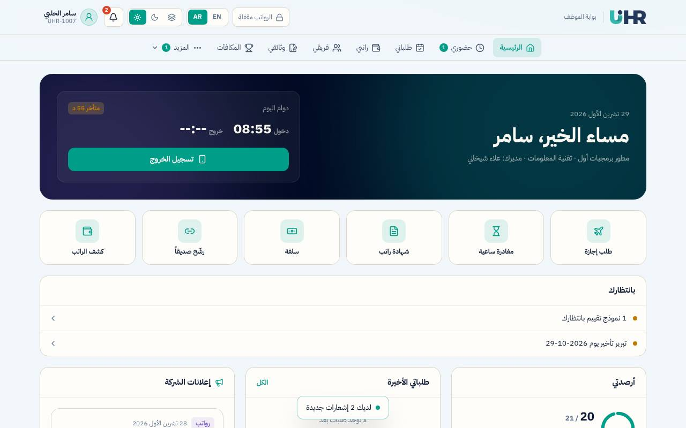
الصفحة الرئيسية لبوابة الموظف
رأس الصفحة
| العنصر | معناه | ملاحظات |
|---|
| التبويبات العلوية | الرئيسية، حضوري، طلباتي، راتبي، فريقي، اعتماداتي (للمديرين ومن لديه طلبات بانتظار قراره)، وثائقي، المكافآت. | الرقم الصغير بجانب التبويب = أمور تنتظر منك إجراءً (أيام بحاجة لتبرير، وثائق للتوقيع…). |
| «المزيد» | بقية الصفحات: خدماتي، تقييماتي، خطة تطويري، إعلانات الشركة، سياسات الشركة، إنذاراتي وشكاواي، الاستقالة، ملفي الشخصي. | الرقم على «المزيد» هو مجموع ما ينتظرك داخل هذه الصفحات. |
| «الرواتب مقفلة» | زر حماية الرواتب: المبالغ مخفية حتى تتحقق من هويتك. | انظر «حماية الرواتب» في الإعدادات وفي الجزء الخاص بها. |
| العربية / English والمظهر | تغيير لغة الواجهة ونمطها (فاتح، داكن، أزرق داكن). | يُحفظ اختيارك على هذا المتصفح. |
| الجرس | إشعاراتك: قرارات طلباتك، وثائق للتوقيع، إعلانات، سياسات جديدة… | يصلك الإشعار فوراً دون تحديث الصفحة، ويظهر نصه أسفل الشاشة. |
| قائمة المستخدم | اسمك ورقمك الوظيفي، ومنها «ملفي الشخصي» و«تسجيل الخروج». | |
الرئيسية
| العنصر | معناه | ملاحظات |
|---|
| التحية والبطاقة الكبيرة | «صباح الخير / مساء الخير» مع مسمّاك وإدارتك واسم مديرك. | |
| بطاقة «دوام اليوم» | وقت دخولك وخروجك اليوم وحالتك: «في الموعد» أو «متأخر» بعدد الدقائق، أو «عطلة»، أو «في إجازة»، أو «لم تسجّل بعد». | التأخير يُحسب من بداية الوردية المعتمدة في سياسة الدوام. |
| «تسجيل الحضور» / «تسجيل الخروج» | يسجّل الحضور من الجوال أو الحاسوب دون بطاقة. | يعمل فقط إذا كانت الموارد البشرية قد فعّلت «التسجيل من بوابة الموظف». إذا حُدّد نطاق جغرافي للمقر يطلب المتصفح إذن تحديد الموقع، ويُرفض التسجيل خارج النطاق. |
| الإجراءات السريعة | طلب إجازة، مغادرة ساعية، شهادة راتب، سلفة، رشّح صديقاً، كشف الراتب. | كل زر يفتح النموذج المطلوب مباشرة. |
| «بانتظارك» | قائمة ما يحتاج منك إجراءً الآن: نماذج تقييم، طلبات بانتظار اعتمادك، إبلاغ بمخالفة يحتاج أقوالك، استلام مهام زميل، إقرار باستلام قرار، تبرير يوم تأخير أو غياب. | تختفي البطاقة حين لا يبقى شيء. |
| «أرصدتي» | الإجازة السنوية المتبقية من الاستحقاق، والمرضية المتبقية أو المستخدمة، ونقاط المكافآت. | الاستحقاق السنوي يُحسب من سياسة الإجازات ومدة خدمتك. |
| «طلباتي الأخيرة»، «إعلانات الشركة»، «فريقي اليوم» | آخر طلباتك وحالتها، وآخر ثلاثة إعلانات، ومن حضر من زملائك اليوم. | |
| «رحلتي في الشركة» | مراحلك من التعيين حتى اليوم (المباشرة، التجربة، التثبيت…). | |
على الجوال
البوابة على الجوال مع الشريط السفلي
على الشاشات الصغيرة تختفي التبويبات العلوية ويظهر شريط سفلي ثابت بخمسة أزرار: الرئيسية، حضوري، طلباتي، راتبي، فريقي. بقية الصفحات من قائمة المستخدم أعلى الشاشة.
حضوري
يعرض آخر أسبوعين يوماً بيوم (الدخول، الخروج، التأخير، الحالة)، وفوقها قسم «بحاجة لتبرير»: أيام التأخير أو الغياب أو «يوم ناقص — بلا خروج».
- اضغط «تقديم تبرير» بجانب اليوم.
- اكتب السبب (5 أحرف على الأقل)، وأرفق مستنداً داعماً إن وُجد (PDF أو صورة — اختياري).
- اضغط «إرسال»؛ يصل التبرير لمديرك المباشر ثم للموارد البشرية حسب سلسلة اعتماد «تبرير الغياب والتأخير».
مهلة التبريريظهر بجانب كل يوم «المهلة حتى …». بعد انتهائها تظهر «انتهت المهلة» ولا يمكن التبرير. المهلة الافتراضية 48 ساعة وتغيّرها الموارد البشرية من سياسة الإجازات.
طلباتي (الإجازات)
| العنصر | معناه | ملاحظات |
|---|
| بطاقات الرصيد | السنوية المتبقية، المستخدم، المرضية هذا العام، الاضطرارية، بلا راتب. | «أنت في فترة التجربة» تظهر إن كنت فيها: الإجازة المأجورة بحسب السياسة. |
| نوع الإجازة | سنوية، مرضية، اضطرارية، ساعية، بلا راتب، أمومة… حسب الأنواع المعرّفة في السياسة. | لكل نوع شروطه: نسبة الأجر، الحد الأقصى، الإشعار المسبق، المستند. |
| من / إلى أو التاريخ وعدد الساعات | مدة الإجازة بالأيام، أو بالساعات للإجازة الساعية. | الساعية بحد أقصى يومي، وكل 8 ساعات تُحسم يوماً من السنوية (افتراضياً). |
| الإشعار المسبق | كم يوماً قبل بدء الإجازة يجب أن تقدّم الطلب. | يظهر تحذير إن كان الطلب متأخراً عن المهلة. |
| الموظف البديل | زميل يقوم بعملك أثناء الإجازة. | إلزامي إذا نصّت السياسة على ذلك، ويصله إشعار عند الاعتماد. |
| السبب | توضيح للطلب. | |
| المستند | «إلزامي قبل الاعتماد النهائي» أو «اختياري» حسب النوع (مثل التقرير الطبي). | يمكن إرفاقه لاحقاً من «إرفاق» في الجدول. |
| «المسار» | من سيعتمد طلبك بالترتيب (المدير المباشر ← الموارد البشرية…). | يتغير حسب مدة الإجازة ونوعها وسلسلة الاعتماد. |
| جدول «طلباتي» | كل طلب وحالته ومساره وبديله. | «إلغاء» متاح فقط قبل أول قرار عليه. |
الفحص يتم أثناء الكتابة: يظهر لك قبل الإرسال إن كان الرصيد لا يكفي، أو الطلب متأخراً عن الإشعار المسبق، أو يتزامن مع إجازة زميل في الإدارة.
راتبي
«كشفي الشهري»: لكل شهر مغلق كشف بمستحقاتك (الراتب، الإضافي، مكافأة التقييم) واقتطاعاتك (التأخير، الغياب، الإجازة بلا راتب، الجزاءات، التأمينات الاجتماعية — حصة العامل، السلفة) والصافي، مع أيام العمل والحضور والغياب والإجازات والتأخير و«معفى بمبرر». الشهر الحالي يظهر «تقدير حتى أمس» ويتغير حتى يُغلق الكشف. المبالغ مخفية حتى تتحقق من هويتك، ويمكن طباعة الكشف.
فريقي
زملاء إدارتك وحالتهم اليوم: «موجود منذ …»، «في إجازة»، «غادر»، «لم يصل بعد»، مع آخر أرقام الجوال للتواصل.
وثائقي (وثائق للتوقيع)
كل ما يحتاج توقيعك الإلكتروني: سند استلام عهدة (الأصل، الرمز، الرقم التسلسلي، القيمة التقديرية)، تعهد المحافظة على سرية العمل، إقرار إبراء الذمة الوقائي (يطلب اسم الأم الكامل)، وإقرار ميثاق الأخلاق والسلوك المهني. وقّع بالإصبع أو الفأرة في المربع ثم اضغط زر التوقيع. أسفل الصفحة «عهد موقّعة».
المكافآت
- رصيد نقاطك و«مجموع ما اكتسبته»: تكسب النقاط حين يتقدّم شخص رشّحته عبر رابطك ويجتاز المراحل.
- شارك وظيفة شاغرة: «إنشاء رابط إحالة» ينسخ رابطاً خاصاً بك؛ يظهر عدد الزيارات.
- لوحة المتصدرين، متجر المكافآت («استبدال» يحجز النقاط حتى توافق الموارد البشرية، «نفد» عند انتهاء المخزون)، إحالاتي، سجل النقاط.
- الاستقطاب الداخلي — ترشيح نفسي (F-27): التقدم لشاغر داخلي بكتابة «أسباب ودوافع التقدم». يصل الطلب لمديرك المباشر أولاً. إن لم تكن مؤهلاً تظهر «لا يمكنك الترشيح الآن» مع السبب (مدة الخدمة، فترة التجربة، جزاء حديث). عند القبول يصلك «عرض النقل الداخلي (F-29)» للرد بالقبول أو التفاوض أو الرفض مع توقيعك.
خدماتي
| الخدمة | معناها | ملاحظات |
|---|
| شهادة راتب | شهادة بالراتب لجهة (مصرف مثلاً). | بيانات الجهة إلزامية: الاسم، رقم السجل التجاري، الهاتف، البريد الرسمي، وسؤال «أوافق على إبلاغ هذه الجهة عند انتهاء خدمتي». |
| شهادة عمل / تعريف | تثبت أنك تعمل في الشركة. | الجهة الموجّه إليها اختيارية. |
| سلفة على الراتب | مبلغ يُقتطع من كشف الشهر. | «المتاح الآن» = أقل من نصف ما استحققته حتى اليوم ونصف الراتب (افتراضياً)، ومرة واحدة في الشهر. |
| تحديث بيانات شخصية | طلب تعديل بيانات (مثل الجوال). | اكتب «ما المطلوب تحديثه». |
لا يُقبل طلبان مفتوحان من النوع نفسه. عند الاعتماد النهائي تصدر الشهادة برقم تسلسلي ويمكنك «عرض الشهادة» وطباعتها.
تقييماتي
«نماذج بانتظارك»: تقييمي الذاتي، و«بصفتك المدير المباشر» لكل فرد في فريقك، و«بصفتك زميلاً». تختار درجة لكل كفاءة (من 1 حتى أعلى درجة في السلّم)، والمدير يحدد أيضاً «الإمكانات المستقبلية» (منخفضة، متوسطة، مرتفعة). «حفظ مسودة» للمتابعة لاحقاً، و«إرسال» نهائي — بعد الإرسال لا يمكن التعديل. تقييم الزملاء يظهر للموظف مجمّعاً وبلا أسماء. بعد اعتماد الدورة يظهر قسم «نتيجتي» مع مقارنة ذاتي/المدير/الزملاء و«مكافأة التقييم» إن وُجدت.
خطة تطويري
خطتك الفردية: الفجوات، الأهداف، نسبة التقدم، المراجعة القادمة، والأنشطة (دورة، إرشاد، مشروع، قراءة، تدوير وظيفي…) بمسؤول وموعد. النشاط المتأخر يظهر «متأخر». اضغط «تحديث» على النشاط لتغيير حالته ونسبة إنجازه وإضافة ملاحظة. يظهر أيضاً «أنشطة أنا مسؤول عنها» في خطط زملائك.
إعلانات الشركة وسياسات الشركة
«إعلانات الشركة»: كل الإعلانات السارية لك (لكل الشركة أو لإدارتك) مع الصورة والمرفق. «سياسات الشركة»: مكتبة السياسات المنشورة؛ ابحث بكلمة لتصل إلى الفقرة، وتُسجَّل قراءتك للسياسة («اطّلعت»). الفقرات الموسومة «مطبّقة في النظام» قيمها مضبوطة فعلاً في إعدادات الشركة.
إنذاراتي وشكاواي
- المخالفات بحقي: كل حالة مفتوحة أو مقررة. قبل القرار تكتب «أقوالك ودفاعك». بعد القرار تضغط «أقرّ بالاستلام» وتوقّع، ويمكن فتح «الإنذار الكتابي F-01».
- شكاواي (F-02): «شكوى جديدة» بموضوع ووصف، و«بحق» اختياري. الشكوى سرية — لا يراها مديرك، وتصلك «رد الموارد البشرية».
- للمديرين: مخالفات فريقي و«فتح حالة» (انظر المدير المباشر أدناه).
الاستقالة
نموذج F-02: «أسباب الاستقالة»، «آخر يوم عمل (تاريخ النفاذ)»، «نص الطلب»، و«استبيان الاستقالة» اختياري. يظهر تحذير إن كان آخر يوم قبل نهاية فترة الإخطار (60 يوماً افتراضياً). بعد التقديم تتابع المسار، ويمكنك «الرجوع عن الاستقالة» بطلب خطي، وتملأ جدول «تسليم المهام» F-05، وترى «المخالصة النهائية (تقديرية)». «مهام تستلمها من زملاء» تظهر إن كنت مستلِماً لمهام زميل مغادر.
ملفي الشخصي
«بياناتي»: رقم الجوال قابل للتعديل مباشرة (يُبلَّغ HR ويُسجَّل في سجلك). بقية البيانات للعرض: الرقم الوطني، تاريخ المباشرة، مقر العمل، المدير المباشر، بطاقة الحضور. لتغيير غيرها استخدم «طلب تحديث» من خدماتي. «سجلي الوظيفي» يعرض أحداث مسيرتك.
34.المدير المباشر
يصل إليها: كل موظف له فريق يتبع له أي حساب لديه طلب بانتظار قراره
المدير المباشر هو الموظف المسجّل «مديراً مباشراً» في ملف موظفيه. يظهر له تبويب «اعتماداتي» في بوابة الموظف (وفي نظام الشركة لموظفي الموارد البشرية)، وفيه كل ما ينتظر قراره.
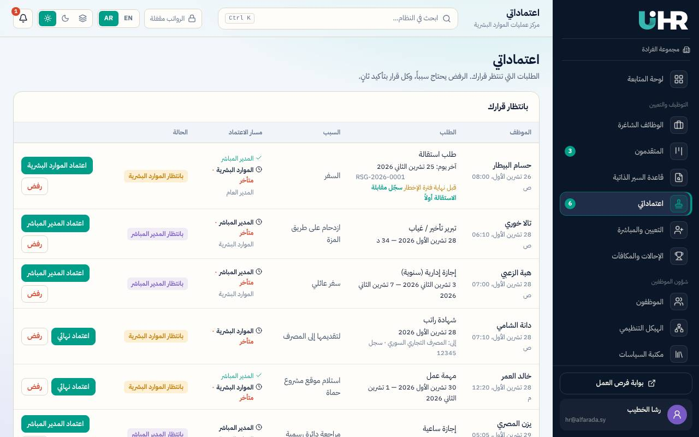
صندوق «اعتماداتي»
صندوق الاعتمادات الموحد
كل الطلبات تمر بالطريقة نفسها مهما كان نوعها — نسميها المسار الموحد: الطلب يمر على خطوات بالترتيب، ولا يتحرك للخطوة التالية حتى يقرر صاحب الخطوة الحالية.
| نوع الطلب | ما يقرره المدير | ملاحظات |
|---|
| الإجازات | موافقة أو رفض | يرى الرصيد والبديل والتحذيرات (تجاوز الرصيد، تزامن مع إجازة زميل). مع هذه التحذيرات تصبح الملاحظة إلزامية. |
| تبرير الغياب والتأخير | قبول التبرير أو رفضه | المقبول يصبح يوماً «مبرراً». |
| الترشيح الداخلي F-27 | الموافقة على انتقال موظفه لشاغر داخلي | المدير هو الخطوة الوحيدة افتراضياً. |
| الاستقالة F-02 / إنهاء العقد F-03 | الخطوة الأولى في المسار | ثم الموارد البشرية ثم الإدارة العليا. |
| طلبات أخرى حسب سلاسل الاعتماد | كما تحدده الشركة | مثل الخدمات أو السلفة إن أُضيف المدير لمسارها. |
القرار والسبب«موافقة» أو «رفض» يمر بتأكيد ثانٍ. الرفض يحتاج سبباً واضحاً (10 أحرف على الأقل افتراضياً). كل قرار يُسجَّل باسمك ووقته، ويصل إشعار لصاحب الطلب. إن تأخر القرار يصلك تذكير كل 24 ساعة (افتراضياً).
نائبي أثناء إجازتي
تختار زميلاً يستلم طلبات فريقك حين تكون في إجازة. إن لم تختر نائباً فإن «— بلا نائب (تتخطاك الطلبات للموارد البشرية) —»: الخطوة تنتقل مباشرة إلى المستوى التالي.
تكليف بعمل إضافي (F-04)
- من «تكليف بعمل إضافي» اختر الموظف من فريقك.
- حدد التاريخ (يوم قادم)، و«المدة (دقيقة)» (لا تتجاوز الحد اليومي في السياسة)، و«المهمة / السبب».
- «إرسال التكليف» يرسله للموارد البشرية للاعتماد. يظهر في «تكليفاتي بالإضافي».
إذا كانت السياسة تشترط تكليفاً مسبقاً (افتراضياً نعم)، فلا يُحتسب الإضافي في الكشف الشهري إلا بقدر الدقائق المعتمدة في التكليف.
فتح مخالفة لفريقه
من «إنذاراتي وشكاواي» ← «مخالفات فريقي» ← «فتح حالة»: تختار الموظف ونوع المخالفة من دليل المخالفات وتاريخها ووصفها. يصل إبلاغ للموظف ليكتب أقواله، وتُبلَّغ الموارد البشرية لتتابع التحقيق والقرار. المدير يفتح الحالة فقط، والقرار للموارد البشرية (وللمدير العام في الجزاءات الأشد).
ترشيح للتعاقب
من «خطة تطويري» تظهر للمدير «خطط التعاقب الفعّالة» (المناصب الحرجة) ليرشّح منها أفراداً من فريقه المباشر: «ترشيح» ← «الجاهزية» (جاهز الآن، خلال سنة، خلال 3 سنوات) و«مبررات الترشيح». تُبلَّغ الموارد البشرية بالترشيح وتقيّمه. كذلك يرى المدير «خطط فريقي» لخطط التطوير الفردية ويتابعها ويراجعها.
35.الإعدادات
يصل إليها: مدير النظام مدير الموارد البشرية كل صفحة حسب صلاحيتها
كل قاعدة أو رقم أو قائمة تحكم عمل النظام قابلة للتعديل من هنا، لكل شركة على حدة. القيم الأولية هي سياسات الشركة الرسمية، ويمكن دائماً العودة إليها بزر «القيم الافتراضية». كل حفظ يُسجَّل في سجل التدقيق: من غيّر، وماذا كانت القيمة قبل وبعد.
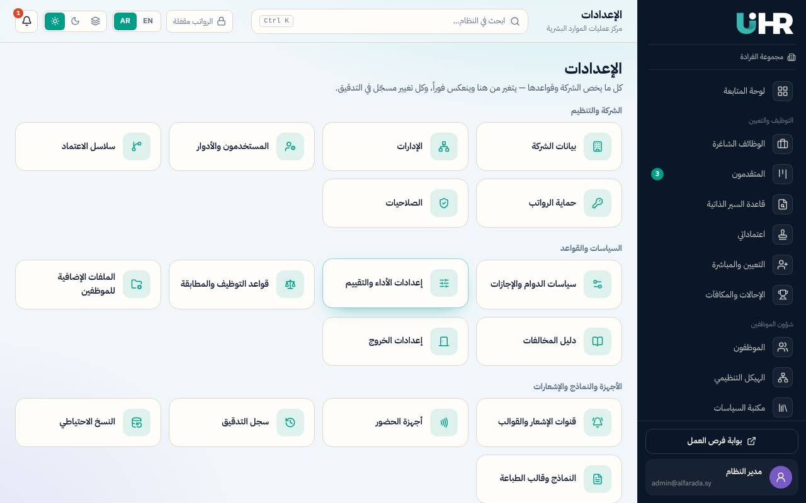
لوحة الإعدادات /hr/settings
لوحة الإعدادات
صفحة واحدة تجمع كل صفحات الإعدادات المسموحة لك في ثلاث مجموعات: الشركة والتنظيم، السياسات والقواعد، الأجهزة والنماذج والإشعارات. لا تظهر لك إلا الصفحات التي تملك صلاحيتها. إن ظهرت عبارة «عرض فقط — التعديل لمدير الإعدادات» فأنت ترى القيم ولا تستطيع تغييرها.
بيانات الشركة /hr/settings/company
| العنصر | معناه | ملاحظات |
|---|
| الاسم الرسمي بالعربية / بالإنكليزية | الاسم القانوني الكامل كما يُطبع في النماذج والشهادات. | |
| الاسم المختصر | الاسم القصير الذي يظهر في رأس الشاشة وصفحة الشركة. | |
| الاسم اللاتيني على الشعار | السطر اللاتيني تحت الشعار (مثل UNIQUENESS GROUP). | |
| الموقع الإلكتروني | موقع الشركة. | يمكن كتابته بلا «https://» فيُضاف تلقائياً. |
| نبذة بالعربية / بالإنكليزية | تعريف بالشركة يظهر في صفحتها على بوابة فرص العمل. | |
| الشعار — «رفع شعار» | صورة الشعار في الواجهة والنماذج المطبوعة. | |
| «الرابط على بوابة الوظائف» | عنوان صفحة الشركة العامة. | يظهر للعرض فقط. |
| بادئة رمز النموذج (تذييل الطباعة) | النص الذي يسبق رمز كل نموذج في تذييله (مثل Uniqueness-HR-01). | |
| نطاق بريد الشركة | نطاق البريد الرسمي (مثل alfarada.sy). | |
| اسم إدارة الموارد البشرية | الاسم المطبوع أعلى النماذج تحت اسم الشركة. | بالعربية وبالإنكليزية. |
| رابط صفحة التوظيف | رابط صفحة التوظيف الخاصة بالشركة إن وُجدت. | |
| الصفحة العامة: العنوان والنص | «العنوان والنص الرئيسي في صفحة الدخول.» | بالعربية وبالإنكليزية. |
| بادئات الترقيم | الأحرف قبل كل رقم يولّده النظام: الرقم الوظيفي (UHR-1033)، رقم المتقدم، قرار التعيين (QR)، رقم العهدة (AST)، رمز الشاغر (REQ). | 2–6 أحرف إنكليزية كبيرة. تسري على الأرقام الجديدة فقط ولا تغيّر الأرقام القديمة. |
الإدارات /hr/settings/departments
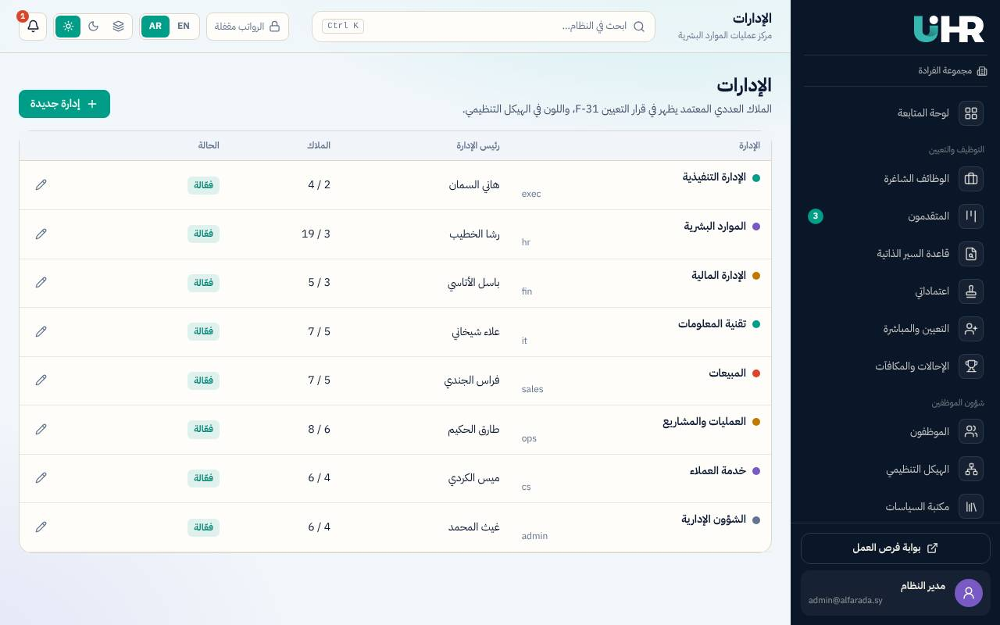
قائمة الإدارات: الملاك الحالي مقابل المعتمد
| العنصر | معناه | ملاحظات |
|---|
| الاسم بالعربية / بالإنكليزية | اسم الإدارة كما يظهر في كل الشاشات. | |
| الرمز | معرّف قصير للإدارة بأحرف إنكليزية صغيرة وأرقام (مثل hr، it). | فريد داخل الشركة، ويُستخدم في ملفات الاستيراد. |
| الملاك العددي المعتمد | عدد الموظفين المعتمد رسمياً لهذه الإدارة، أي الحد الأقصى الذي توافق عليه الشركة. مثال: ملاك إدارة الموارد البشرية 5، وفيها اليوم 3 موظفين ← لديها مكانان شاغران. | يظهر في القائمة بصيغة «الحالي / المعتمد» (مثل 3 / 5)، ويتحول الرقم للأحمر إذا تجاوز الحالي المعتمد. ويظهر للمعتمِدين في قرار التعيين F-31 ليعرفوا هل في الإدارة مكان شاغر. القيمة 0 = بلا حد محدد. |
| رئيس الإدارة | الموظف المسؤول عن الإدارة. | موظفو الإدارة يظهرون أولاً في القائمة. |
| اللون في الهيكل | لون شريط الإدارة في الهيكل التنظيمي وفي بطاقات الموظفين. | خمسة ألوان متاحة. |
| الترتيب | موقع الإدارة في القوائم. | يُضاف تلقائياً في آخر القائمة للإدارة الجديدة. |
| الحالة: فعّالة / موقوفة | الإدارة الموقوفة تختفي من الاختيارات الجديدة. | لا يمكن إيقاف إدارة فيها موظفون حاليون — انقلهم أولاً. |
المستخدمون والأدوار /hr/settings/users
كل حسابات الدخول في الشركة: الاسم والبريد والأدوار وآخر دخول والحالة (فعّال، موقوف، مقفول مؤقتاً، كلمة مرور مؤقتة) وهل ربط التحقق بخطوتين. البحث بالاسم أو البريد أو الرقم الوظيفي، والتصفية بالدور والحالة.
- «حساب جديد»: اختر «لموظف» (من الموظفين الذين ليس لهم حساب — يأخذ دور «موظف» تلقائياً) أو «بلا ملف موظف» (بالبريد والاسم)، ثم الأدوار.
- يُنشأ الحساب بـكلمة مرور مؤقتة تظهر مرة واحدة فقط (انسخها) وتُرسل لبريد المستخدم، ويُطلب منه تغييرها عند أول دخول.
- «أدوار» لتعديل أدوار حساب. لا يمكنك سحب دور مدير النظام من نفسك.
| الإجراء | معناه | ملاحظات |
|---|
| إعادة تعيين كلمة المرور | كلمة مؤقتة جديدة تُرسل للبريد. | تُطلب كلمة جديدة عند الدخول. |
| إيقاف الحساب / تفعيل الحساب | منع الدخول أو إعادته. | لا يمكنك إيقاف حسابك. الحساب الموقوف تنتهي جلسته فوراً. |
| فك قفل الدخول | بعد 5 محاولات خاطئة يُقفل الحساب مؤقتاً (5 دقائق افتراضياً). | الحساب المقفول يرفض حتى كلمة المرور الصحيحة حتى ينتهي القفل أو يُفك. |
| إلغاء ربط التحقق بخطوتين | حذف تطبيق المصادقة ومفاتيح المرور المسجّلة. | عند تغيير المستخدم جواله أو فقدانه. |
الأدوار المتاحة: مدير النظام، مدير الموارد البشرية، موظف موارد بشرية، مسؤول توظيف، الإدارة المالية، المدير التنفيذي، الرئيس التنفيذي، مدير مباشر، موظف.
الصلاحيات /hr/settings/permissions
شبكة بسيطة: لكل دور (يميناً) ولكل وحدة من النظام مستوى واحد:
| المستوى | معناه | ملاحظات |
|---|
| لا وصول | لا تظهر الوحدة لهذا الدور. | |
| عرض | يرى فقط. | |
| عرض وتعديل | يرى ويضيف ويعدّل. | |
| كامل | كل شيء: عرض، إضافة، تعديل، اعتماد، تصدير، طباعة، أرشفة. | |
| مخصص | مزيج آخر من الإجراءات السبعة يُضبط من «تفاصيل». | |
والنطاق لكل خانة: نفسه (بياناته فقط)، فريقه (من يتبعون له)، الجميع. المستخدم الذي يحمل أكثر من دور يأخذ مجموع صلاحياتها. «حفظ» يطلب «تأكيد تعديل الصلاحيات» ويعرض الأدوار المتأثرة، ثم تُطبَّق فوراً. لا يُسمح بحفظ يُفقدك أنت صلاحية إدارة الصلاحيات.
سلاسل الاعتماد /hr/settings/chains
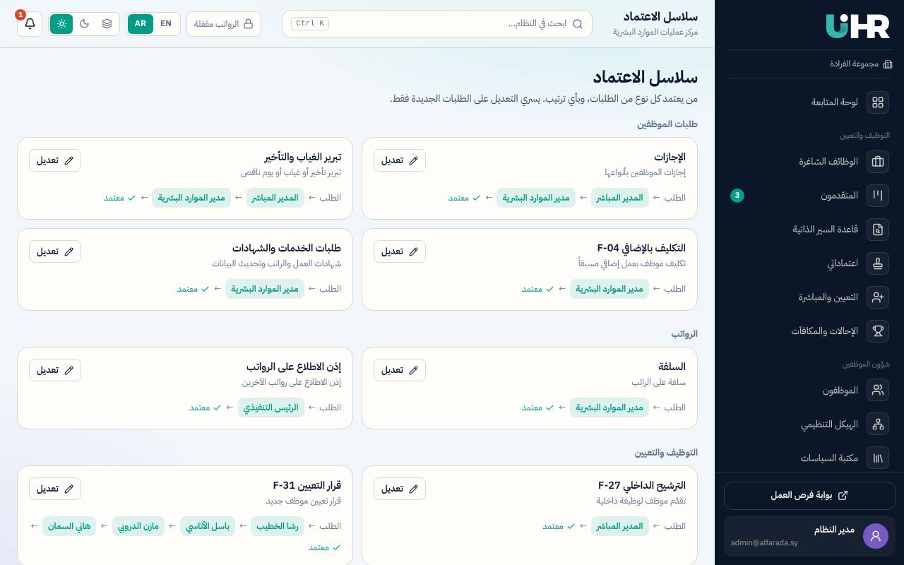
بطاقة لكل نوع طلب بمساره
لكل نوع من الطلبات مسار اعتماد. الطلب يمر على الخطوات بالترتيب. المجموعات والأنواع الإحدى عشرة:
| المجموعة | النوع | متى يُستخدم |
|---|
| طلبات الموظفين | الإجازات | إجازات الموظفين بأنواعها. |
| تبرير الغياب والتأخير | تبرير تأخير أو غياب أو يوم ناقص. |
| التكليف بالإضافي F-04 | تكليف موظف بعمل إضافي مسبقاً. |
| طلبات الخدمات والشهادات | شهادات العمل والراتب وتحديث البيانات. |
| الرواتب | السلفة | سلفة على الراتب. |
| إذن الاطلاع على الرواتب | إذن الاطلاع على رواتب الآخرين. |
| التوظيف والتعيين | الترشيح الداخلي F-27 | تقدّم موظف لوظيفة داخلية. |
| قرار التعيين F-31 | قرار تعيين موظف جديد. |
| الخروج والانضباط | الاستقالة F-02 | طلب استقالة. |
| إنهاء العقد F-03 | إنهاء عقد موظف. |
| الجزاءات الأشد | الجزاءات الأشد (حسم كبير، ترفيع، فصل). |
عند «تعديل» مسار، تجيب لكل خطوة عن سؤال واحد: «من يعتمد؟»
- حسب الدور: المدير المباشر، مدير الموارد البشرية، الإدارة المالية، المدير التنفيذي، الرئيس التنفيذي، أو مدير النظام. «المدير المباشر» يعني مدير صاحب الطلب نفسه (غير متاح لقرار التعيين ولإذن الرواتب). إن لم يكن للموظف مدير تُتخطى الخطوة.
- شخص محدد: يحمل هذا الدور؛ الطلب يذهب إليه دون غيره.
- «النائب (يعتمد بدلاً منه)»: شخص يستطيع اتخاذ قرار هذه الخطوة أيضاً، ويصله الإشعار معه. اختر «بلا نائب» لإلغائه.
- «للأعلى» و«للأسفل» لترتيب الخطوات، و«حذف الخطوة»، و«إضافة خطوة» (حتى 6 خطوات).
التغيير يسري على الطلبات الجديدة فقط؛ الطلبات القائمة تكمل بمسارها الذي بدأت به.
قواعد التوظيف والمطابقة /hr/settings/recruitment
نسبة المطابقة رقم من 100 يحسبه النظام لكل متقدم: مدى توافقه مع متطلبات الشاغر. تتكون من خمسة معايير، لكل معيار وزن، ومجموع الأوزان يجب أن يكون 100.
| القسم | معناه | ملاحظات |
|---|
| أوزان المطابقة | سنوات الخبرة، المؤهل العلمي، الراتب المتوقع، اللغة الإنكليزية، اكتمال الملف. | «المجموع» يجب أن يساوي 100. الوزن 0 يلغي المعيار. |
| كيف يُحسب كل معيار — الخبرة | «يستوفي الحد الأدنى بالضبط» (نسبة)، «سنوات إضافية حتى 100٪»، «أعلى درجة لمن هو دون الحد». | دون الحد: بالتناسب مع السنوات حتى الدرجة المحددة. |
| المؤهل العلمي | درجات «أعلى من المطلوب»، «مساوٍ للمطلوب»، «أدنى بدرجة واحدة»، «أدنى من ذلك». | |
| الراتب المتوقع | «حتى منتصف نطاق الشاغر»، «حتى أعلى النطاق»، «فوق النطاق تبدأ من»، «خصم لكل 1٪ زيادة». | مقارنة بنطاق الراتب المكتوب في الشاغر. |
| اللغة الإنكليزية | درجة لكل مستوى: ممتاز، جيد، مقبول، ضعيف. | |
| اكتمال الملف | البنود التي تُحسب: السيرة الذاتية مرفوعة، المؤهل معبّأ، خبرة سابقة، مرجع مهني، رابط LinkedIn. | النسبة = البنود المتوفرة ÷ البنود المختارة. |
| «معاينة» | آخر الطلبات المفتوحة: النسبة الحالية ← النسبة بالمعايرة الجديدة. | قبل الحفظ، لترى الأثر. |
| نطاقات المطابقة والأتمتة | حد الفرز التلقائي (≥ 50)، بداية «مطابقة منخفضة — للمراجعة» (41)، حد الرفض التلقائي (≤ 40)، مع مفاتيح: فرز تلقائي للطلبات الجديدة، رفض تلقائي دون الحد الأدنى (وإلا تذهب للمراجعة)، تنبيه تجاوز مهلة المرحلة، رسائل واتساب تلقائية. | يجب أن تكون الحدود تصاعدية. الرفض التلقائي يرسل للمتقدم رسالة لبقة. |
| مهل المراحل (أيام) | أقصى بقاء للمتقدم في كل مرحلة قبل التنبيه: جديد 2، فرز 3، مقابلة 5، تقييم فني 5، عرض 4. | تظهر على بطاقة المتقدم في اللوحة عند التجاوز. |
| نقاط الإحالة المرحلية | تجاوز الفرز الأولي 10، التأهل للمقابلة 20، توقيع العرض والمباشرة 30، اجتياز التجربة 40. | «مضاعف الوظائف الحرجة» ×2 للشواغر المعلّمة صعبة الإشغال. |
| مدة الاحتفاظ بالسيرة قبل الأرشفة | 24 شهراً افتراضياً. | بعدها تؤرشف السيرة تلقائياً من قاعدة السير. |
| بنود F-19 المنجزة لبدء فترة التجربة | 14 بنداً افتراضياً. | عند إنجازها ينتقل الموظف الجديد إلى «فترة التجربة». |
| الترشيح الداخلي (F-27) | أقل مدة خدمة (12 شهراً)، «بلا جزاء خلال» (6 أشهر، 0 = لا شرط)، «خارج فترة التجربة». | شروط تقدّم الموظف لشاغر داخلي. |
الحفظ يعيد حساب نسبة المطابقة لكل الطلبات المفتوحة فوراً، دون تحريك أي متقدم بين المراحل.
سياسات الدوام والإجازات /hr/settings/policies
الوردية وأيام العمل وجدول حسم التأخير والإضافي والإجازات والكشف الشهري والجزاءات والخروج وجهاز الحضور والعطل الرسمية — مشروحة بالتفصيل في جزء «الحضور والإجازات» من هذا الدليل. كل تعديل فيها يُحفظ كإصدار بتاريخ نفاذ، والأيام السابقة تبقى على إصدارها.
إعدادات الأداء والتقييم /hr/settings/performance
| العنصر | معناه | ملاحظات |
|---|
| أوزان المقيّمين | المدير المباشر 50، الزملاء 30، التقييم الذاتي 20. | المجموع 100. إن غاب تقييم دور ما يُعاد توزيع وزنه على الموجود. |
| أعلى درجة في النموذج | سلّم التقييم (5 افتراضياً: من 1 إلى 5). | |
| عدد الزملاء المقيّمين لكل موظف | 3 افتراضياً، من الإدارة نفسها بالتناوب. | |
| أداء «مرتفع» من نتيجة / «متوسط» من نتيجة | 4.0 و3.0 افتراضياً: حدود محور الأداء في مصفوفة 9-Box. | ما دون «متوسط» = منخفض. |
| الكفاءات | الجوانب التي يُقيَّم عليها كل موظف. | 3 فعّالة على الأقل. الكفاءة المستخدمة تُوقف ولا تُحذف. |
| جدول مكافآت التقييم (D-28) | لكل نطاق نتيجة (من — إلى) مكافأة: نسبة من الراتب، أو مبلغ ثابت، أو نقاط. | بلا بنود: كل نتيجة معتمدة تُحوَّل للمراجعة اليدوية. |
| «معاينة» | أثر الإعدادات على الدورة المفتوحة: النتيجة الحالية والجديدة لكل موظف. | الحفظ ينطبق على الدورات المفتوحة فوراً؛ المعتمدة لا تتغير. |
الملفات الإضافية للموظفين /hr/settings/documents
| العنصر | معناه | ملاحظات |
|---|
| أنواع المستندات | هوية شخصية، جواز سفر، شهادة علمية، عقد عمل، تقرير طبي، شهادة خبرة، رخصة، أخرى — بالرمز والاسم. | النوع المستخدم في مستندات قائمة لا يُحذف. |
| الصيغ والحجم | الصيغ المسموحة (PDF، JPG، JPEG، PNG، DOCX) و«الحجم الأقصى للملف» (10 ميغابايت). | الصيغ الخطرة مرفوضة دائماً. |
| التنبيه قبل انتهاء المستند | 30 يوماً: يصل تنبيه للموارد البشرية وللموظف قبل انتهاء صلاحية المستند. | المستند المنتهي تتغير حالته إلى «منتهي». |
| أدوار ترى المستندات الحساسة | من يحق له رؤية المستند الموسوم «حساس». | والموظف يرى مستنداته دائماً. |
دليل المخالفات /hr/settings/violations
جدول المخالفات والجزاءات المعتمد في الشركة (41 مخالفة في ثلاث مجموعات: مواعيد العمل، تنظيم العمل، السلوك). لكل مخالفة: المجموعة، «مرجع المادة»، «نص المخالفة»، و«الجزاء لكل مرة (يتصاعد)»: الجزاء في المرة الأولى، ثم «المرة التالية»… (ملاحظة، إنذار، حسم أيام، تأخير ترفيع، حرمان من الترفيع، فصل…). «اقتراح آلي من الحضور» يربط المخالفة بحالة حضور (تأخير 15/30/60 دقيقة، غياب، خروج مبكر) ليقترحها النظام شهرياً — بند واحد لكل نوع. «الحالة» فعّالة أو معطّلة. «استعادة الافتراضي» يعيد الجدول الأصلي.
الجزاء يتصاعد مع التكرار خلال «مدة التكرار» في سياسة المخالفات (6 أشهر افتراضياً): بعدها تعود المخالفة «مرة أولى».
إعدادات الخروج /hr/settings/exit
القوائم المستخدمة في الاستقالة وإنهاء العقد ومقابلة الخروج وتسليم العهدة: أسباب الاستقالة، أنواع إنهاء الخدمة (م37 وF-03)، أسباب الفصل (F-03)، أسئلة الاستبيان ومقابلة الخروج، وجهات تسليم العهدة F-07 وبنودها: لكل جهة اسم و«من يوقّع»، ولكل بند «آلي» (يحسبه النظام: تسليم المهام، العهد غير المعادة، رصيد الإجازة) أو «بمبلغ» (يُدخل مبلغاً يُحسم في المخالصة). البنود «الأساسية» لا تُحذف، والسبب المستخدم في طلب مفتوح لا يُحذف.
حماية الرواتب /hr/settings/security
| العنصر | معناه | ملاحظات |
|---|
| طرق التحقق المتاحة | الموافقة من الجوال (رمز QR يمسحه الجوال المسجّل دخوله بالحساب نفسه)، البصمة / Windows Hello، رمز لمرة واحدة بالبريد، تطبيق المصادقة (Google / Microsoft Authenticator مع رموز طوارئ). | طريقة واحدة على الأقل. النافذة تفتح مباشرة على آخر طريقة نجحت مع المستخدم. |
| النافذة: «تُقفل بعد (دقيقة بلا استخدام)» | بعد التحقق تبقى المبالغ ظاهرة 5 دقائق، وكل اطلاع على الرواتب يجدّدها. | |
| الحد الأقصى للفتح | 60 دقيقة من لحظة التحقق مهما استُخدمت، ثم يلزم تحقق جديد. | |
| المحاولات الخاطئة قبل الإيقاف / مدة الإيقاف | 5 محاولات، ثم إيقاف 60 ثانية. | |
| صلاحية طلب الجوال / صلاحية الرمز المرسل | 120 ثانية لرمز QR، دقيقتان لرمز البريد. | |
| عدد رموز الطوارئ | 8 رموز تُعطى عند ربط التطبيق، كل رمز لمرة واحدة. | |
| سجل المحاولات لكل مستخدم | آخر 200 محاولة ناجحة أو فاشلة. | |
| إذن الاطلاع على رواتب الآخرين: «الإذن مطلوب» | راتبك يكفيه التحقق، أما رواتب الآخرين فتحتاج إذناً يوافق عليه المعتمِد (الرئيس التنفيذي افتراضياً) عبر سلسلة «إذن الاطلاع على الرواتب». | الإذن لكل الشركة أو لإدارة واحدة. |
| مدة الإذن (ساعة) | 8 ساعات من لحظة الموافقة، ثم يُجدَّد بطلب جديد. | |
| أدوار معفاة (المعتمِد) | تُرى لهم الرواتب بالتحقق وحده، ولهم سحب الأذونات. | بدون دور معفى لن يرى أحد رواتب الآخرين إلا بإذن. |
| «الأذونات» | كل الطلبات: ساري، بانتظار الموافقة، منتهٍ، مسحوب، مرفوض، ملغى، مع «سحب» للإذن الساري. | |
أجهزة الحضور /hr/settings/devices
| العنصر | معناه | ملاحظات |
|---|
| «إضافة جهاز» | تسجيل جهاز حضور: الاسم (مثل «بوابة المقر — دمشق»)، النوع (حاسوب + قارئ USB، جهاز Sunmi، جوال NFC)، المقر، الحالة. | يُعطى «مفتاح الجهاز» مرة واحدة: انسخه وأدخله في شاشة الجهاز. |
| «قارئ ACS على حاسوب» | لقارئ البطاقات الموصول بحاسوب: ينشئ الجهاز ويُنزّل «جسر القارئ» جاهزاً. | على الحاسوب: فك الضغط ثم دبل كليك على install.bat مرة واحدة. عند تمرير بطاقة تظهر الحالة «متصل». |
| آخر اتصال / الحالة | «متصل» إن تواصل الجهاز خلال آخر 3 دقائق، وإلا «غير متصل». | |
| «مفتاح جديد» | يلغي المفتاح القديم ويعطي جديداً. | عند فقد الجهاز أو تسرّب المفتاح. |
| «تنزيل الجسر» | ملف الجسر مجدداً (بمفتاح جديد — القديم يتوقف). | |
النماذج وقالب الطباعة /hr/settings/forms
سجل النماذج: كل نموذج في النظام (F-01 الإنذار، F-19، F-29، F-31، شهادات الراتب والعمل، الهيكل التنظيمي…) مع «الرمز المطبوع» في التذييل، و«الإصدار» و«تاريخ الإصدار»، و«حساس» (تُسجَّل كل طباعة له في سجل التدقيق). «تعديل» لتغيير العنوان والرمز والإصدار والتاريخ والحساسية. قالب الطباعة: الشعار (يُطبع / بدون شعار)، المحاذاة (البداية، الوسط، النهاية)، ارتفاع الشعار، هامش الصفحة، مع «معاينة».
قنوات الإشعار والقوالب /hr/settings/channels
| القناة | الحقول | ملاحظات |
|---|
| البريد الإلكتروني | اسم المرسل، بريد الرد. | مفعّل دائماً. |
| رسائل قصيرة SMS | المزوّد، اسم المرسل، مفتاح المزوّد. | «تفعيل القناة». القيم السرية تُحفظ مشفرة وتظهر «محفوظ — اتركه فارغاً للإبقاء عليه». |
| WhatsApp | المزوّد، رقم الحساب، رمز الوصول. | الإرسال الفعلي بالرسائل القصيرة وواتساب يبدأ عند اعتماد مزوّد. |
قوالب الرسائل: نص كل رسالة بالعربية والإنكليزية لكل قناة: استلام طلب التوظيف، دعوة للمقابلة، صدور عرض العمل، دعوة للاختبار المبدئي، رمز التحقق. المتغيرات المتاحة تُستبدل تلقائياً عند الإرسال: :name اسم المستلم، :job الوظيفة، :ref رقم الطلب، :code الرمز، :link الرابط. كتابة متغير غير معروف تُرفض.
سجل التدقيق /hr/settings/audit
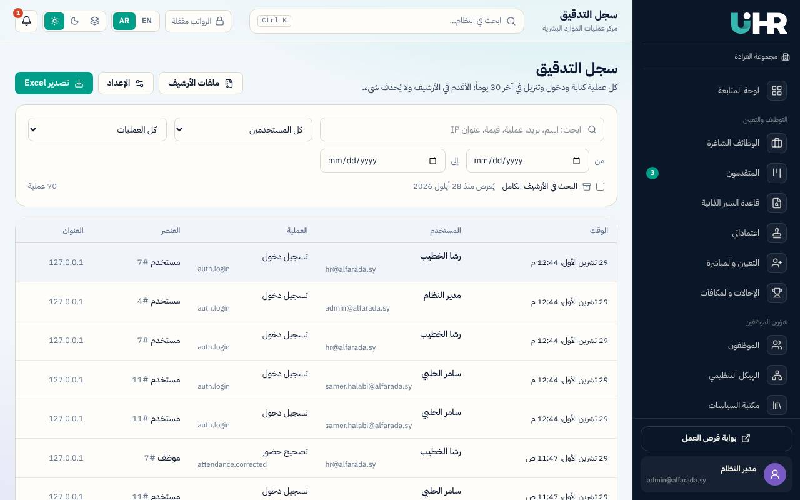
سجل التدقيق
كل عملية كتابة ودخول وتنزيل وطباعة حساسة في الشركة: من قام بها، ماذا، متى، من أي عنوان، والقيمة قبل وبعد.
| العنصر | معناه | ملاحظات |
|---|
| البحث | اسم، بريد، عملية، قيمة، عنوان IP. | يبحث أيضاً داخل القيم قبل/بعد. |
| المستخدم / العملية / من / إلى | تصفية بالشخص، وبمجموعة العملية (الدخول والخروج، الإعدادات، الملفات، موظف، طلب إجازة…)، وبالتاريخ. | «مسح التصفية» يعيد القائمة كاملة. |
| الجدول | الوقت، المستخدم، العملية (بوصف مقروء)، العنصر، العنوان. | اضغط أي سطر لرؤية التفاصيل: الحقل، قبل (بالأحمر)، بعد (بالأخضر)، والمتصفح. |
| «الإعداد»: أيام العرض في الواجهة | 30 يوماً افتراضياً (من 7 إلى 365). | الأقدم يبقى في الأرشيف الدائم ولا يُحذف. |
| «البحث في الأرشيف الكامل» | كل العمليات منذ بدء التشغيل. | لمن يملك صلاحية الأرشفة (مدير النظام افتراضياً). |
| «ملفات الأرشيف» | ملف مضغوط لكل شهر خرج من نافذة العرض، للتنزيل والحفظ. | السجلات تبقى في النظام أيضاً. |
| «تصدير Excel» | النتائج الحالية للتصفية. | التصدير نفسه يُسجَّل. |
النسخ الاحتياطي /hr/settings/backups
- نسخة الخادم الكاملة: نسخة من كل بيانات النظام تُؤخذ تلقائياً كل يوم (الساعة 02:30 افتراضياً)، ويُحتفظ بآخر 14 نسخة على الخادم. تظهر لك حالة آخر نسخة ووقتها؛ ضبط الجدولة لإدارة المنصة.
- نسخ بيانات الشركة: «نسخة الآن» تُنشئ ملف ZIP بكل سجلات شركتك وملفاتها المرفوعة، بلا كلمات مرور أو مفاتيح تحقق. يُحتفظ بآخر 5 نسخ، وتُحذف ملفات الأقدم ويبقى سطرها بحالة «حُذف الملف (الاحتفاظ)».
- التنزيل يحتاج التحقق من الهوية وإذن الاطلاع على رواتب الشركة كلها، لأن الملف يحوي الرواتب. كل إنشاء وتنزيل يُسجَّل.
- «الإعدادات»: عدد النسخ المحفوظة (1–50)، والملفات المرفوعة (تُضمَّن في النسخة / السجلات فقط).
37.معجم المصطلحات
كل مصطلح يظهر في النظام، مرتباً أبجدياً. الأرقام بين القوسين قيم افتراضية تغيّرها الشركة من الإعدادات.
| المصطلح | الشرح |
|---|
| 9-Box (المصفوفة التساعية) | جدول من تسعة مربعات يضع كل موظف حسب محورين: الأداء (منخفض، متوسط، مرتفع) والإمكانات المستقبلية. يساعد على تحديد المتميزين ومن يحتاجون دعماً. الموارد البشرية تستطيع نقل الموظف بين المربعات (معايرة). |
| الإجازة الاضطرارية | إجازة لظرف طارئ لم يُخطَّط له، بعدد مرات محدد في السنة (3). |
| الإجازة الساعية (المغادرة الساعية) | إجازة بالساعات خلال يوم العمل، بحد أقصى يومي (5 ساعات)، وكل 8 ساعات تُحسم يوماً من السنوية. |
| الإذن (إذن الاطلاع على الرواتب) | موافقة مؤقتة (8 ساعات) من المعتمِد تسمح لموظف برؤية رواتب الآخرين، لكل الشركة أو لإدارة واحدة، وتُسحب في أي وقت. |
| الأرشفة | إخراج سجل من الاستخدام اليومي دون حذفه: يبقى محفوظاً ويمكن الرجوع إليه أو استعادته. |
| الاستحقاق السنوي | عدد أيام الإجازة السنوية المأجورة التي يستحقها الموظف في السنة حسب مدة خدمته وعمره (14 في السنة الأولى، 21 بعد 5 سنوات، 30 بعد 10 سنوات أو بعمر 50). |
| الاستقطاب الداخلي | تقدّم موظف حالي لشاغر داخل الشركة (F-27) بموافقة مديره، وإن قُبل يُنقل ملفه نفسه للوظيفة الجديدة. |
| الإشعار المسبق | عدد الأيام التي يجب تقديم طلب الإجازة قبلها، ويختلف حسب نوع الإجازة ومدتها. |
| الإعفاء من الإخطار | قرار المدير أو الموارد البشرية بإعفاء المستقيل من إكمال فترة الإخطار، مع إمكانية تقديم آخر يوم عمل. |
| الإمكانات المستقبلية | تقدير المدير لقدرة الموظف على النمو وتولي مسؤوليات أكبر: منخفضة، متوسطة، مرتفعة. المحور الثاني في 9-Box. |
| الإنذار الكتابي (F-01) | النموذج الرسمي المطبوع بقرار الجزاء، يوقّع الموظف عليه بالاستلام. |
| إنهاء العقد (F-03) | نموذج إنهاء خدمة موظف بقرار الشركة، بسببه وأسباب الفصل إن وُجدت. |
| البديل (الموظف البديل) | الزميل الذي يقوم بعمل الموظف أثناء إجازته، ويُبلَّغ عند الاعتماد. |
| براءة الذمة (F-04) | شهادة تصدر للموظف المغادر بعد أن توقّع كل الجهات أنه سلّم عهدها ومهامه ولم يبقَ عليه شيء، برقم تسلسلي. |
| بطاقة الحضور | بطاقة NFC يمررها الموظف على جهاز الحضور لتسجيل دخوله وخروجه، مربوطة بملفه. |
| التبرير | توضيح يقدّمه الموظف ليوم تأخير أو غياب أو يوم ناقص، خلال مهلة محددة (48 ساعة)، ويعتمده المدير ثم الموارد البشرية. |
| التحديث اللحظي | الشاشات المفتوحة تتحدث تلقائياً عند أي تغيير، والجرس يصل فوراً، دون إعادة تحميل الصفحة. |
| التحقق بخطوتين | تأكيد إضافي للهوية بعد كلمة المرور (رمز، بصمة، موافقة من الجوال) قبل إظهار الرواتب. |
| تسليم العهدة (F-07) | نموذج الجهات التي يجب أن توقّع بأن المغادر سلّم ما بذمته، وعند اكتمالها تصدر براءة الذمة. |
| تسليم المهام (F-05) | جدول بمهام المغادر ومستلمها، يوقّعه الموظف ثم المستلم ثم المدير ثم HR. |
| التعاقب (خطة التعاقب) | خطة لمنصب حرج تحدد من يستطيع شغله مستقبلاً، بجاهزية كل مرشح وفجوات تطويره. |
| تقييم 360 | تقييم الموظف من ثلاث جهات: نفسه ومديره وزملاؤه، بأوزان محددة. |
| تقييم المقابلة (F-25) | نموذج تقييم المتقدم بعد المقابلة بدرجات المعايير وتوصية. |
| التكليف بالإضافي (F-04) | تكليف مسبق من المدير لموظفه بعمل بعد الدوام بعدد دقائق محدد، يعتمده HR ويُحتسب به الإضافي. |
| التوقيع الإلكتروني | توقيع يرسمه المستخدم بالإصبع أو الفأرة على الشاشة، ويُحفظ مع الوثيقة ووقتها. |
| الجاهزية | مدى استعداد المرشح لشغل المنصب الحرج: جاهز الآن، خلال سنة، خلال 3 سنوات. |
| الجزاءات الأشد | الجزاءات التي تتجاوز صلاحية الموارد البشرية (حسم أكثر من 3 أيام، تأخير أو حرمان من الترفيع، الفصل)، وتحتاج اعتماد المدير العام. |
| جسر القارئ | برنامج صغير يُثبَّت على الحاسوب الموصول به قارئ البطاقات، يرسل كل تمرير بطاقة إلى النظام. |
| حد الرفض التلقائي | نسبة المطابقة التي يُعتذر عندها للمتقدم تلقائياً برسالة لبقة (≤ 40). |
| حد الفرز التلقائي | نسبة المطابقة التي ينتقل عندها الطلب مباشرة إلى مرحلة الفرز (≥ 50). |
| الحساس (مستند أو نموذج حساس) | مستند لا يراه إلا أدوار محددة والموظف صاحبه، أو نموذج تُسجَّل كل طباعة له. |
| الحسم (حسم التأخير) | اقتطاع من الأجر مقابل دقائق التأخير حسب جدول الشرائح في سياسة الدوام. |
| حماية الرواتب | إخفاء كل مبلغ راتب في النظام حتى يتحقق المستخدم من هويته، ويتطلب رواتب الآخرين إذناً. |
| خطة التطوير الفردية | خطة لموظف بفجواته وأهدافه وأنشطة بمسؤول وموعد، تُراجع دورياً (كل 3 أشهر). |
| دليل المخالفات | جدول المخالفات المعتمد مع الجزاء المتصاعد لكل تكرار. |
| دورة التقييم | فترة تقييم محددة (مثل الربع الثالث) يُفتح فيها نموذج لكل موظف، ثم تُعتمد نتائجها. |
| الرقم الوظيفي | الرقم الفريد لكل موظف (مثل UHR-1007)، يُولَّد تلقائياً ببادئة الشركة. |
| رموز الطوارئ | رموز احتياطية (8) يحتفظ بها المستخدم، كل رمز يُستخدم مرة واحدة إن فقد جواله. |
| سجل التدقيق | سجل دائم بكل عملية في النظام: من، ماذا، متى، القيمة قبل وبعد. لا يُحذف منه شيء. |
| سلسلة الاعتماد | ترتيب الأشخاص أو الأدوار الذين يعتمدون نوعاً معيناً من الطلبات. |
| السلفة | مبلغ مقدّم من الراتب يُقتطع في كشف الشهر، بحد أقصى محسوب ومرة في الشهر. |
| السلّم | مجال درجات التقييم (من 1 إلى 5). |
| الشكوى (F-02) | شكوى سرية يقدمها الموظف للموارد البشرية لا يراها مديره. |
| شهادة الخبرة (F-06) | شهادة تصدر للموظف عند انتهاء خدمته تبيّن مدة عمله ومسمّاه. |
| طلب الاستقالة (F-02) | نموذج الاستقالة بأسبابها وآخر يوم عمل، يمر على المدير ثم HR ثم المدير العام. |
| طلب الترشيح الداخلي (F-27) | نموذج تقدّم الموظف لشاغر داخلي. |
| طلب التوظيف (F-28) | نموذج التقديم الذي يملؤه المتقدم على البوابة. |
| عرض العمل (F-29) | العرض الرسمي للمتقدم أو للنقل الداخلي: المسمى والراتب وتاريخ المباشرة، يرد عليه بالقبول أو التفاوض أو الرفض. |
| العهدة | أصل من أصول الشركة (حاسوب، جوال، سيارة…) مسلّم لموظف بسند استلام يوقّعه. |
| فترة الإخطار | المدة التي يبقى فيها المستقيل في عمله بعد تقديم الاستقالة (60 يوماً). |
| فترة التجربة | الأشهر الأولى للموظف الجديد (90 يوماً) قبل تثبيته، تبدأ بعد إنجاز عدد من بنود المباشرة F-19. |
| الفجوات (في التطوير) | المهارات أو الكفاءات التي يحتاج الموظف تطويرها. |
| الفجوة (في التعاقب) | منصب حرج ليس له أي مرشح «جاهز الآن»؛ يصل للموارد البشرية تنبيه بها. |
| قاعدة السير الذاتية | كل السير التي وافق أصحابها على الاحتفاظ بها، للبحث فيها لشواغر قادمة، وتؤرشف بعد مدة الاحتفاظ (24 شهراً). |
| قرار التعيين (F-31) | القرار الرسمي بتعيين متقدم قبل العرض، يمر على مستويات الاعتماد كل من حسابه، وبعده يُنشأ ملف الموظف. |
| الكشف الشهري | كشف الدوام والمستحقات لكل موظف في الشهر: الحضور والغياب والإجازات والتأخير والإضافي والاقتطاعات والصافي. يُحسب ويُعتمد ثم يُغلق. |
| الكفاءات | الجوانب التي يُقيَّم عليها الموظف في التقييم (مثل التواصل، جودة العمل). |
| المباشرة (F-19) | قائمة بنود استقبال الموظف الجديد (28 بنداً): الأوراق، البطاقة، العهدة، التعريف بالفريق… بعضها يُنجز تلقائياً. |
| متجر المكافآت | هدايا يستبدل بها الموظف نقاطه، بموافقة الموارد البشرية. |
| المخالصة النهائية (F-33) | حساب مستحقات الموظف المغادر: الأجر حتى آخر يوم، بدل الإجازات غير المستخدمة، ناقص العهد غير المعادة والسلف وأي مبالغ. |
| مدة التكرار | الفترة (6 أشهر) التي تُحسب فيها المخالفة المكررة تكراراً ثانياً أو ثالثاً. |
| المدير المباشر | الموظف المسؤول عن موظف آخر في ملفه، وهو أول من يعتمد معظم طلباته. |
| مذكرة الترحيب (F-32) | مذكرة تعريف بالموظف الجديد تُرسل لكل الموظفين. |
| المسار الموحد | الطريقة الواحدة لكل الطلبات: خطوات اعتماد بالترتيب، قرار بسبب، تذكير عند التأخير، وإشعار لصاحب الطلب. |
| معايرة | تعديل الموارد البشرية لموضع موظف في 9-Box بعد المراجعة، ويبقى رغم إعادة الحساب. |
| مقابلة الخروج | لقاء مع المغادر يُسجَّل فيه سبب المغادرة وتقييمه للشركة وهل يُعاد توظيفه. |
| المكافأة (مكافأة التقييم) | مبلغ أو نسبة أو نقاط يستحقها الموظف حسب نتيجة تقييمه من جدول المكافآت، تُضاف للكشف الشهري. |
| مكتبة السياسات | كل الأنظمة والسياسات والإجراءات المعتمدة في الشركة بإصداراتها، مع البحث في نصوصها. |
| الملاك العددي | عدد الموظفين المعتمد رسمياً لكل إدارة، أي الحد الأقصى الذي توافق عليه الشركة. يُقارن بالعدد الحالي في صفحة الإدارات وفي قرار التعيين F-31. القيمة 0 = بلا حد. |
| مهلة المرحلة | أقصى عدد أيام يبقى فيه المتقدم في مرحلة توظيف قبل أن يظهر تنبيه بالتأخر. |
| النائب | شخص يتخذ القرار بدلاً من صاحب خطوة الاعتماد: نائب المدير أثناء إجازته، أو نائب محدد لخطوة في سلسلة الاعتماد. |
| النافذة (نافذة الرواتب) | المدة التي تبقى فيها الرواتب ظاهرة بعد التحقق (5 دقائق تتجدد مع الاستخدام، بحد أقصى 60 دقيقة). |
| الناقص (اليوم الناقص) | يوم سجّل فيه الموظف دخولاً بلا خروج حتى مضي ساعتين بعد نهاية الوردية (أو انتهى اليوم)؛ يحتاج تبريراً أو تصحيحاً قبل إغلاق الكشف. |
| نسبة المطابقة | رقم من 100 يحسبه النظام لكل متقدم: مدى توافق خبرته ومؤهله وراتبه المتوقع ولغته واكتمال ملفه مع الشاغر. |
| النطاق (خاصته / فريقه / الكل) | حدود ما يراه المستخدم في وحدة ما: بياناته فقط، أو من يتبعون له، أو كل الشركة. |
| نقاط الإحالة | نقاط يكسبها الموظف حين يتقدم شخص رشّحه ويجتاز المراحل (10، 20، 30، 40)، ومضاعفة للوظائف الحرجة. |
| النقل الداخلي | انتقال موظف إلى وظيفة أخرى في الشركة بالملف نفسه بعد قبول ترشيحه الداخلي. |
38.أسئلة شائعة
لا أرى صفحة يذكرها زميلي، لماذا؟
كل صفحة تظهر حسب صلاحيات دورك. إذا كنت تحتاجها فاطلب من مدير النظام إضافة الصلاحية لدورك من «الصلاحيات»، أو إعطاءك الدور المناسب من «المستخدمون والأدوار».
أدخل كلمة المرور الصحيحة لكن الدخول مرفوض.
بعد 5 محاولات خاطئة يُقفل الحساب مؤقتاً (5 دقائق)، ويُرفض خلالها حتى الإدخال الصحيح. انتظر انتهاء المدة، أو اطلب من مدير النظام «فك قفل الدخول». تأكد أن المتصفح لا يملأ كلمة مرور قديمة محفوظة.
نسيت كلمة المرور.
من صفحة الدخول اضغط «نسيت كلمة المرور؟» واكتب بريدك؛ يصلك رابط لتعيين كلمة جديدة. أو اطلب من مدير النظام «إعادة تعيين كلمة المرور».
لماذا الراتب مخفي ويظهر «محمي»؟
كل مبالغ الرواتب محمية. اضغط «الرواتب مقفلة» وتحقق من هويتك بالطريقة المتاحة (الموافقة من الجوال، البصمة، رمز البريد، تطبيق المصادقة). تبقى ظاهرة 5 دقائق وتتجدد مع الاستخدام.
تحققت من هويتي لكن رواتب الموظفين ما زالت مخفية.
راتبك يكفيه التحقق، أما رواتب الآخرين فتحتاج «إذن الاطلاع» يوافق عليه المعتمِد. اضغط «طلب إذن» واختر النطاق واكتب السبب.
لماذا لا أستطيع إلغاء طلبي؟
الإلغاء متاح فقط قبل أن يتخذ أي معتمِد قراراً على الطلب. بعد أول قرار تواصل مع من يعتمده.
لماذا لا أستطيع تبرير يوم تأخير قديم؟
للتبرير مهلة (48 ساعة) تظهر بجانب كل يوم. بعد انتهائها لا يُقبل التبرير، ويمكن للموارد البشرية تصحيح الحضور إن كان هناك خطأ.
زر «تسجيل الحضور» لا يعمل من جوالي.
إما أن التسجيل من بوابة الموظف غير مفعّل في سياسة الشركة، أو أن المتصفح لم يُسمح له بتحديد الموقع، أو أنك خارج نطاق المقر، أو أن اليوم عطلة أو أنت في إجازة. الرسالة الظاهرة توضح السبب.
وصلني إشعار «يوم ناقص».
سجّلت دخولاً دون خروج. قدّم تبريراً من «حضوري»، أو اطلب من الموارد البشرية تصحيح وقت الخروج. لا يُغلق الكشف الشهري وفيه أيام ناقصة.
الرصيد في طلب الإجازة أقل مما أتوقع.
الرصيد = الاستحقاق السنوي ناقص ما استُخدم ناقص الطلبات قيد الاعتماد. وفي السنة الأولى يُحسب الاستحقاق بالتناسب مع أشهر الخدمة.
لماذا لا تظهر لي «اعتماداتي»؟
تظهر للمديرين المباشرين ولكل من لديه طلب بانتظار قراره. إن كنت مديراً ولا تظهر فتأكد أنك مسجّل «مديراً مباشراً» في ملفات موظفيك.
رفضت طلباً فطلب مني النظام سبباً.
الرفض يحتاج سبباً واضحاً (10 أحرف على الأقل) يصل لصاحب الطلب، حتى يعرف ما المطلوب منه.
ذهبت في إجازة؛ من يعتمد طلبات فريقي؟
النائب الذي اخترته في «نائبي أثناء إجازتي». إن لم تختر نائباً تنتقل الطلبات للخطوة التالية (الموارد البشرية عادة).
لماذا لا أستطيع تعديل تقييم أرسلته؟
بعد «إرسال» نموذج التقييم يُقفل نهائياً. استخدم «حفظ مسودة» إن أردت المتابعة لاحقاً.
غيّرت جوالي ولم أعد أستطيع التحقق.
استخدم أحد «رموز الطوارئ»، أو اختر «غيّرت جوالك؟» في نافذة التحقق وأدخل كلمة المرور لإلغاء الربط القديم، أو اطلب من مدير النظام «إلغاء ربط التحقق بخطوتين».
غيّرت إعداداً ولم يتغير شيء في الطلبات القائمة.
بعض الإعدادات تسري على الجديد فقط حتى لا تتغير قواعد الطلب أثناء مسيره: سلاسل الاعتماد تسري على الطلبات الجديدة، والسياسات بتاريخ نفاذها، وبادئات الترقيم على الأرقام الجديدة. أما قواعد المطابقة فتعيد حساب الطلبات المفتوحة فوراً.
لا أجد الإجراء الذي قمت به أمس في سجل التدقيق.
تأكد من التصفية (المستخدم، العملية، التاريخ) واضغط «مسح التصفية». العمليات الأقدم من أيام العرض (30 يوماً) في الأرشيف: «البحث في الأرشيف الكامل» لمن يملك الصلاحية.
لماذا يطلب مني التحقق عند تنزيل نسخة بيانات الشركة؟
لأن النسخة تحوي رواتب كل الموظفين؛ يلزم التحقق من الهوية وإذن الاطلاع على رواتب الشركة كلها.
الصفحة تتغير وحدها أثناء عملي.
هذا التحديث اللحظي: حين يغيّر زميل شيئاً تعرضه الشاشة تتحدث تلقائياً. ما تكتبه في نموذج مفتوح لا يُمسح إلا إذا تغيّر السجل نفسه الذي تعدّله.
لماذا رُفض طلب توظيف تلقائياً؟
نسبة مطابقته كانت تحت حد الرفض التلقائي (40) مع تفعيل الرفض التلقائي. يمكن تعطيله من قواعد التوظيف لتذهب هذه الطلبات للمراجعة.